7 · Disorders in Immunity
Instructional Objectives
- Describe the types of immunopathologies.
- Compare and contrast the types of hypersensitivities and diseases caused by hypersensitivity conditions.
- Describe the primary methods of diagnosing, treating, and preventing allergies.
- Describe the mechanism of transfusion reactions.
- Explain the immunology of transplantations and tissue histocompatibility.
- Describe etiology autoimmune conditions.
- Differentiate between primary and secondary immunodeficiency conditions.
- Explain the mechanisms of carcinogenesis.
- Compare and contrast immunotherapy strategies.
About 97 minutes with Dr. Webster, in two parts. Both transcripts read and compared (Notability’s own and an independent local transcription); every quote below appears in both, with the same wording and timing. Every factual claim was checked against the deck, and where the two differ the slide is what this guide teaches.
Unlike Lecture 1, this lecture signposts. It names one chart to learn, one mechanism that matters most, one pairing she said outright you need to know, and six slides not to memorize.
| What was said | What it means for you |
|---|---|
| “This is actually a chart you should pay attention to because it is a very good summary chart of the four different types of hypersensitivities.” [part 1, 10:14] | Slide 9, the four-types table. It is reproduced in 7.2 and is the spine of the lecture. |
| “The most important thing I want you to remember about this is making the IgG [immunoglobulin G] antibodies, which can block the reaction.” [part 1, 34:23] | Desensitization (slides 29–30). The regulatory T cell effects are real, but the blocking immunoglobulin G is the headline. |
| “Please note there’s no type 1 at all.” [part 2, 13:13] — and of autoimmunity, “type one is not involved in either of these.” [part 2, 21:50] | Type I plays no part in graft rejection or in autoimmunity. Both lists run II, III and IV. |
| “B cell defect is agammaglobulinemia… this we associate with more bacterial infections. And yes, you need to know that. That’s why it is bold and italicized.” [part 2, 32:34] She repeated the pairing a minute and a half later: “remember the T cell deficiency, you get more of fungal, viral, protozoan infections; B cell deficiency, more of the bacterial infections.” [part 2, 34:12] | B cell deficiency → recurrent bacterial infections; T cell deficiency → fungal, viral and protozoan (slides 63–64). The only thing in the lecture said twice and called “need to know”. |
| “This is not a chart you need to memorize.” [part 1, 4:07] | Slide 6, the helminth antigen ↔ allergen pairings. Know the principle (allergens resemble parasite antigens), not the pairs. |
| “You don’t need to memorize this chart.” [part 2, 19:57] | Slide 50, the four grades of graft versus host disease. Know what the disease is and that it affects about 30% of marrow recipients. |
| “Charts I do not want you to memorize… no, you do not need to memorize those charts.” [part 2, 29:48–30:11] | Slides 58–60, the type II, III and IV autoimmune disease tables. The diseases you are expected to know are the ones slide 61 writes out: Graves’, Hashimoto’s, type 1 diabetes, myasthenia gravis, multiple sclerosis. |
| “The process of transformation… I’m not going to ask you to memorize the sequence.” [part 2, 37:03] | Slide 67’s stepwise colon-cancer figure. Know that a cancer is one cell with accumulated mutations, not the order of the genes lost. |
| Oncogenic viruses: “we will talk about the papilloma virus… hepatitis B and Epstein-Barr when you have my lecture on DNA [deoxyribonucleic acid] viruses. Dr. Fair will talk about… the human T cell leukemia virus as well as HIV [human immunodeficiency virus] and some herpes viruses.” [part 2, 39:27–39:45] | Slide 68 is deferred to the virus lectures. Here, know that viruses are one route to oncogene activation, and the two that slide 81 names for prevention. |
Things said that are not on a slide — consistent with the deck, useful as hooks, and each present in both transcripts:
- Immunoglobulin G is the only antibody that crosses the placenta, which is why a sensitized Rh-negative mother’s next Rh-positive baby is the one at risk. [part 1, 43:22]
- The tuberculin skin test is read at 48 to 72 hours, and once positive it stays positive because of memory cells. [part 2, 4:19]
- Poison ivy oil binds the skin within about 15 minutes (wash it off before then), and the first exposure takes 7 to 10 days to make effector T cells or more — so the first contact causes no quick rash (at most a delayed one) and later contacts react much faster. The recording explains the missing first rash by the skin having shed; that explanation is not established. [part 2, 5:32–6:22]
- Blood type O is the universal donor (no A or B antigen on the cell); AB is the universal recipient (no anti-A or anti-B antibody in the serum). [part 1, 38:19–39:20]
- Bone marrow donors are matched on at least 10 human leukocyte antigen markers, and even that is not always enough to prevent graft versus host disease. [part 2, 18:43]
- “Nobody actually dies of HIV [human immunodeficiency virus]. They die of the things you catch because of the suppressed immune system.” [part 2, 35:30]
Two slips to ignore, both now heard in both transcripts, so they are what was said rather than transcription errors. She opens part 2 by calling immune complexes “a type 2 reaction” [part 2, 0:07], straight after closing part 1 with “before we start with type three”; slide 38 says type III, and it is type III. And she calls allergy “IgA mediated” [part 1, 25:47] in the late-phase sentence, then says “those new IgE” eight seconds later; slide 23 says immunoglobulin E. (IgE and IgA sound alike, so a shared mishearing cannot be ruled out; either way the answer is IgE.) Go by the slides.
At the end of the Epidemiology lecture Dr. Webster reviewed her Exam 2 lectures for the class (“This is for the exam” [part 4, 0:00]). She started with this lecture, objective by objective. Both transcripts read; every quote below appears in both. The recording weights; the slides still decide every fact. Her whole review, item by item, is on her review page.
| What she said | Where it is in this section |
|---|---|
| “Remember, we have four different hypersensitivity types. You need to be able to identify their mechanisms and example diseases.” [part 4, 0:18] | 7.2, the four-types table: the mechanism and the example diseases of each type. |
| “And so you should know, you know, what is compatible for donor and recipient.” [part 4, 2:08] | 7.4: a recipient carries antibodies against the ABO antigens they lack, so blood carrying those antigens is incompatible. |
| Rh incompatibility, asked as a question: when does it occur, and how is it prevented? [part 4, 2:24–3:33] | 7.4: an Rh-negative mother sensitized by an Rh-positive pregnancy; a later Rh-positive fetus is at risk; anti-Rh immunoglobulin (Rhogam) prevents the sensitization. |
| Allergy shots: “you’re trying to train your body to produce… defensive IgG antibodies against the allergen.” [part 4, 4:18–4:47] | 7.3, desensitization: blocking immunoglobulin G (her headline in the lecture too). |
| “So go back and look over those rejection types.” [part 4, 7:40] Then: hyperacute is type II, acute type IV, chronic type III. [part 4, 7:44–7:54] | 7.5, the three speeds of rejection and their hypersensitivity types. |
| Autoimmunity: “all of the different hypersensitivity types except one… type two, three, and four.” [part 4, 8:24–8:31] Then the causes: sequestered antigen, rheumatic fever, thymus senescence. [part 4, 8:47–9:35] | 7.6: no type I in autoimmunity; the table of causes. |
| Primary versus secondary immunodeficiency, asked as a question. [part 4, 9:49–10:44] | 7.7: primary = congenital, usually genetic (severe combined immunodeficiency); secondary = acquired after birth (the human immunodeficiency virus, chemotherapy or radiation, blood cell cancers). She also named cannabis exposure; that is not on a slide. |
| Cancer immunotherapy: checkpoint therapy, adoptive cell therapy (engineered T cells and natural killer cells), monoclonal antibodies alone or linked to a chemotherapy drug or radionuclide so they hit only the tumor, and cytokines such as interferon. [part 4, 11:01–12:07] | 7.9, the immunotherapy strategies. |
7.1 · Objective 1 — The four immunopathologies
| Immunopathology | What it is | Direction |
|---|---|---|
| Allergy / hypersensitivity | An exaggerated, misdirected expression of immune responses to an allergen (antigen). Uses the same mechanisms as protective immunity. Four types: I, II, III are B cell mediated; IV is T cell mediated | Overreaction |
| Autoimmunity | Abnormal responses to self antigens | Typically overreaction |
| Immunodeficiency | Deficiency or loss of immunity | Underreaction |
| Cancer | Both a cause and an effect of immune dysfunction | Underreaction |
Cancer and immune dysfunction. Cancer is both a cause and an effect: immune failure permits it, and the tumor then suppresses immunity. Immune surveillance normally keeps cancer in check, and successful tumors evade and actively manipulate the response once established.
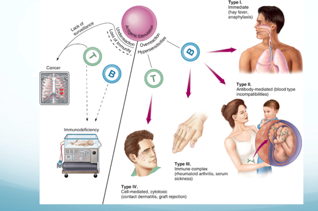
Four immunopathologies. The four categories are allergy, autoimmunity, immunodeficiency and cancer; allergy and autoimmunity are overreactions, while immunodeficiency and cancer are underreactions.
7.2 · Objective 2 — The four hypersensitivities and their diseases
The cells shared by defense and allergy
| Cell | Where / what | Defensive role |
|---|---|---|
| Mast cells | On epithelial surfaces; immunoglobulin E on the surface; filled with cytokine granules | — |
| Eosinophils | Granulocytes that release toxic mediators in an immunoglobulin E response | Eukaryotic parasites |
| Basophils | Rare granulocytes that initiate a type 2 helper T cell response and production of immunoglobulin E | Helminths |
Predisposition. A generalized predisposition to allergy is familial — not a predisposition to a specific allergy. Allergy is affected by age, infection and geographic area; atopic allergies may be lifelong, outgrown, or develop later in life. The four groups are defined by the effector mechanism, and the reaction can differ with the mechanism of exposure.
| Type | Mechanism | Examples |
|---|---|---|
| I Immediate | Immunoglobulin E mediated. Cell-bound antibody is crosslinked and releases inflammatory mediators; mast cells, basophils and eosinophils involved | Hay fever, hives, anaphylactic shock |
| II | Initiated by immunoglobulin G and M. Free antibody binds cell surface antigens; complement activated; cell lysis by the membrane attack complex and phagocytosis | Transfusion reactions |
| III | Initiated by immunoglobulin G and M. Free antibody binds soluble antigens forming immune complexes, which embed in basement membranes and start inflammation (phagocytosis and complement) | Serum sickness; autoimmune conditions such as lupus |
| IV Delayed | T cell mediated. Cytotoxic cells destroy tissue | Contact dermatitis |
Allergens and the type I mechanism
Allergens are immunogenic: proteins, or lower molecular weight haptens. They typically enter through epithelial portals — respiratory, gastrointestinal, skin — and the organ where the allergy shows may or may not be the portal of entry.
| Dose | What happens |
|---|---|
| Sensitizing dose (first contact) | Specific B cells form immunoglobulin E, which attaches to mast cells and basophils. Generally no signs or symptoms. |
| Provocative dose (later contact) | The same allergen binds the immunoglobulin E on the mast cell (each cell binds 10,000–40,000 immunoglobulin E); mast cells degranulate, releasing inflammatory cytokines. |
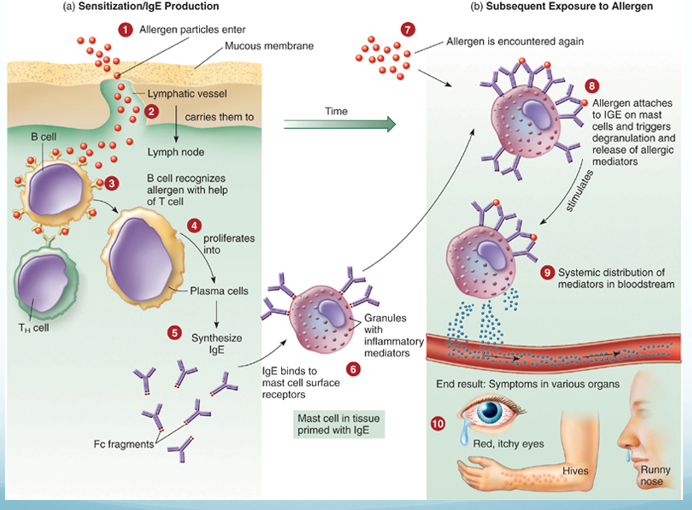
General targets are the skin, upper respiratory tract, gastrointestinal tract and conjunctiva (rashes, itching, redness, rhinitis, sneezing, diarrhea, tears); systemic targets are smooth muscle, mucous glands and nervous tissue (vascular dilation and constriction changing blood pressure and respiration).
| Manifestation | Mechanism |
|---|---|
| Urticaria (hives) | Mast cells in the skin release histamine → raised, itchy swelling |
| Angioedema | Activation of mast cells deeper in the skin |
| Atopic dermatitis (eczema) | A more prolonged allergic response in the skin |
| Allergic rhinitis (hay fever) | Inhaled allergen; histamine raises capillary permeability and nasal mucus; eosinophils are attracted from blood, release mediators and are shed into the nasal passage |
| Food allergy | Vomiting, diarrhea and urticaria. Local histamine acts on intestinal epithelium, vessels and smooth muscle; urticaria appears because antigen enters blood vessels and is carried to the skin |
| Allergic asthma | Acute: bronchial smooth muscle contraction, more mucus, airway obstruction. Leads to chronic asthma, which is type IV, mediated by cytokines and eosinophil granules |
Anaphylaxis
Cutaneous anaphylaxis is the wheal and flare skin reaction — the one used in allergy diagnosis. Systemic anaphylaxis is sudden respiratory and circulatory disruption that can be fatal in minutes. Allergen and route vary: bee stings, antibiotics and serum by injection; foods such as peanuts by mouth. The allergen reaches the bloodstream and activates connective tissue mast cells around blood vessels throughout the body. Fluid leaves the blood → drastic fall in blood pressure → tissue swelling → organ damage → death by asphyxiation from constricted airways; 500–1000 deaths a year in the United States.
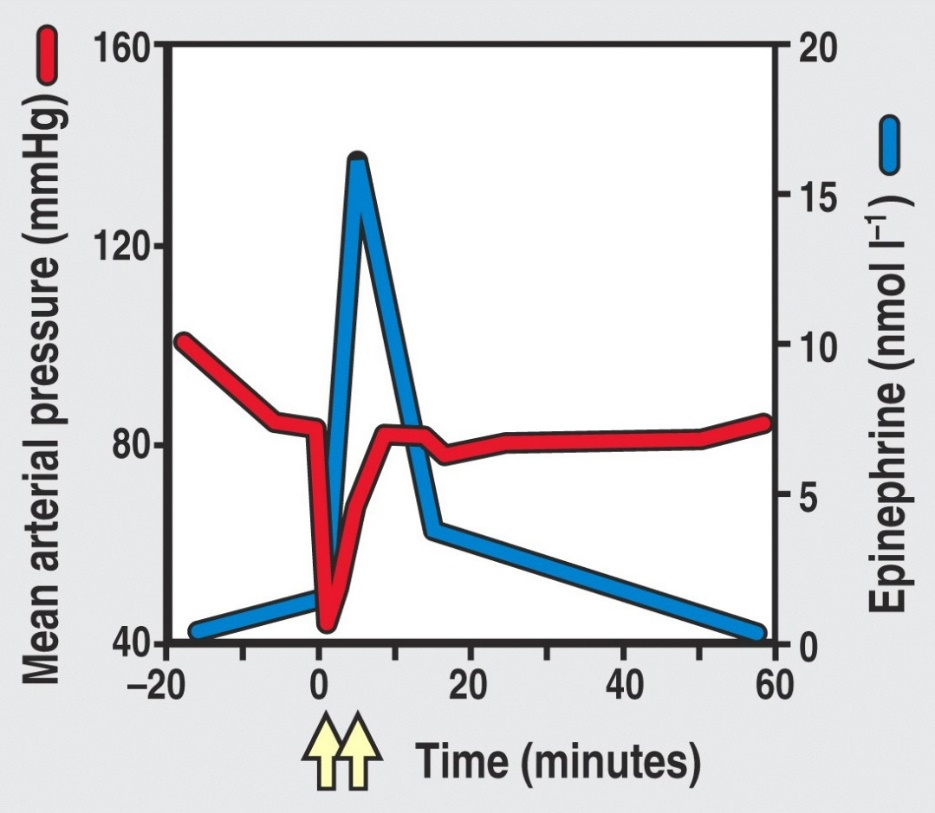
Late phase reaction. Immunoglobulin E reactions have an immediate response (the wheal and flare, from mast cell degranulation) followed about 6 hours later by a late phase reaction mediated by synthesized products such as leukotrienes. It attracts more cells, including eosinophils, whose cytokines enhance inflammation and make the tissue more sensitive next time. In asthma, measured as forced expiratory volume in 1 second, the immediate response is under 1 hour and the late phase response over 6 hours.
Types II, III and IV and their diseases
| Type | Key features | Diseases |
|---|---|---|
| II | Lyses foreign cells; immunoglobulin G or M; stimulates complement | Transfusion reactions (ABO); Rh factor — hemolytic disease of the newborn; some autoimmune: autoimmune hemolytic anemia, myasthenia gravis (acetylcholine receptors) |
| III | Immunoglobulin G and M (sometimes A) with complement; complexes deposit in basement membranes of epithelial tissues; needs a large amount of antigen; symptoms delayed hours to days; joints, skin and kidney typical | Serum sickness (foreign animal proteins — horse serum for tetanus, animal hormones or drugs; complexes in heart, kidneys, skin, joints). Arthus reaction (localized dermal vasculitis after a second vaccine injection at one site; self-limiting). Autoimmune: post-streptococcal glomerulonephritis, systemic lupus erythematosus, rheumatoid arthritis |
| IV | Delayed; T cell mediated; activation of and damage by T cells | Infectious allergy (tuberculosis, leprosy, syphilis, histoplasmosis, toxoplasmosis, candidiasis); tuberculin skin test; contact dermatitis from plants, metals, cosmetics; graft rejection |
Arthus reaction. It is localized dermal injury from inflamed blood vessels, a vasculitis typically following a second injection of vaccine at a site, and normally self limiting.
Contact dermatitis follows the same two-dose logic as type I, but with T cells: first contact is the sensitizing dose; later contact is the reactive dose, with tissue damage from macrophage cytokines and cytotoxic T cells.
7.3 · Objective 3 — Diagnosing, treating and preventing allergies
First decide whether the patient has allergy or infection. Then:
| Test | Use |
|---|---|
| Skin testing — skin prick, intradermal | Reads wheal and flare reactions |
| Blood tests | Specific immunoglobulin E to the suspected allergen (the slide lists increased basophils, but a raised basophil count is not a reliable allergy marker) |
| Physician-supervised challenge | Food allergy when other tests are inconclusive |
| Patch test | Contact dermatitis (type IV) |
Familial allergy. Families inherit a generalized predisposition, the tendency rather than the particular allergen, which is why relatives may react to entirely different things. The specific allergy is not inherited.
Management of type I hypersensitivity has three general methods: prevention, pharmacological control and desensitization. Prevention means modifying the environment and behaviors to avoid the allergen.
| Drug | Action |
|---|---|
| Corticosteroids | Inhibit lymphocytes to reduce immunoglobulin E |
| Cromolyn sodium | Blocks mast cell degranulation |
| Montelukast sodium | Blocks the action of leukotrienes (the freshly made products behind the late phase reaction); the slide says it blocks their synthesis, but montelukast is a receptor blocker |
| Omalizumab | Monoclonal antibody against immunoglobulin E |
| Antihistamines | Bind histamine receptors on target organs |
| Epinephrine | Reverses airway constriction; re-establishes endothelial tight junctions |
Desensitization (allergen-specific immunotherapy). The most common form is subcutaneous immunotherapy: small amounts of allergen by injection. The injected allergen stimulates high levels of allergen-specific immunoglobulin G that blocks the allergen from reaching the immunoglobulin E, so mast cells do not degranulate. It improves reactions in about 80% of those who complete it.
“Of course it’s not that simple”: desensitization also activates regulatory T cells, which inhibit T cell activation of B cells and release anti-inflammatory cytokines, and induces mediators that damp T cell proliferation and mast cell and eosinophil activity. Sublingual immunotherapy places allergen under the tongue as a tablet or liquid; it is used more elsewhere than in the United States (which has tablets for pollen and dust mite). A 4-year trial of a peanut dose equal to 1/75 of a kernel was effective and safe, protecting against accidental exposure; it has also worked for kiwi, hazelnut, milk and peach.
7.4 · Objective 4 — The mechanism of transfusion reactions
A transfusion reaction is type II. Donor and recipient are matched for the ABO blood group antigens because red blood cells carry no major histocompatibility complex molecules — ABO is what the immune system sees. You carry antibodies in your serum against the ABO antigens you lack. Transfusions are temporary, and an ABO incompatibility can be fatal through complement activation and cell lysis.
| Step | Detail |
|---|---|
| Cross-match | Recipient’s serum against donor’s red cells. Not the reverse: even whole blood carries too little donor antibody to coat the recipient’s cells densely enough to react |
| Consequences | Red cell destruction → blocked glomeruli, fever, jaundice. Even incomplete complement activation leaves antibody-coated cells for natural killer cells and macrophages |
7.5 · Objective 5 — The immunology of transplantation and tissue histocompatibility
Rejection runs both ways — the host may reject the graft, and the graft may reject the host — and it is governed by the major histocompatibility complex: different grafts succeed to different degrees because of its compatibility.
| Graft | Source |
|---|---|
| Autograft | Self (skin, gum or vein graft) |
| Isograft | Genetically identical twin |
| Allograft | Another member of the same species |
| Xenograft | Another species |
| Solid organ problem | Type | Mechanism |
|---|---|---|
| Hyperacute rejection | II | Preexisting antibody against graft antigens; the graft becomes engorged and purple from hemorrhage and fails |
| Acute rejection | IV | Effector T cells respond to human leukocyte antigen differences between donor and recipient |
| Chronic rejection | III | Months or years later; immune complexes in the graft’s vessel walls thicken them until blood supply fails. Causes failure of more than half of kidney and heart transplants after 10 years or more |
| Graft versus host disease | IV | Donor cells attack host tissue |
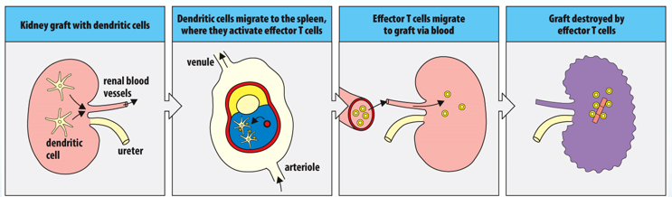
| Tissue | Matching requirement | Why |
|---|---|---|
| Cornea (first organ successfully transplanted) | Succeeds even without a human leukocyte antigen match | The eye downregulates T cells, macrophages, neutrophils and complement so inflammation cannot impair vision |
| Liver | Human leukocyte antigens not assessed; ABO blood group is | Architecture and vascularization; hepatocytes carry very little class I and no class II; constant exposure to digestive proteins makes it tolerant |
| Bone marrow | Most sensitive to human leukocyte antigen discrepancies | Used for genetic disorders and cancers. Sensitivity can cause graft versus host disease: systemic, with skin rash, muscle, liver and gastrointestinal involvement, in about 30% of marrow recipients |
Dealing with graft issues: minimize rejection by tissue matching human leukocyte antigens (mixed lymphocyte reaction, tissue typing), and with immunosuppressive drugs — purine analogs, corticosteroids, tacrolimus and cyclosporine, rapamycin (sirolimus).
7.6 · Objective 6 — The etiology of autoimmune conditions
In autoimmunity the immune system has lost tolerance to autoantigens and forms autoantibodies and sensitized T cells against them, destroying self tissue. It involves all hypersensitivity types except type I. There are genetic and gender predispositions: autoimmunities run in families, and women are more likely than men to have them. Disruption can be systemic or organ specific.
| Origin | Mechanism | Examples |
|---|---|---|
| Sequestered antigen theory | Some tissues are immunologically privileged during embryonic growth; damaged later, they release antigens that are attacked | Central nervous system, lens of the eye, thyroid, testes. Trauma to one eye releases intraocular antigens that activate T cells, which attack both eyes (slide 55) |
| Molecular mimicry (a normal immune response) | Foreign and self antigens are similar, so the response cross-reacts | Rheumatic fever (cross-reactive strep antigen; antibodies react with heart tissue); Lyme disease arthritis (Borrelia burgdorferi); reactive arthritis (Shigella, Salmonella, Campylobacter); type 1 diabetes (coxsackie virus A and B, echovirus, rubella) |
| Noninfectious response | Tissue damage without infection | The eye trauma example above |
| Thymic senescence | The thymus is most active in fetal and early neonatal life, then involutes (replaced by fat). Premature thymic aging is characteristic of young people with autoimmune disorders; decreased output may mean less efficient T cell development and more opportunistic infection, cancer and autoimmunity | The mechanism is unclear |
Autoimmune predisposition. Women are affected more than men, and autoimmunities also run in families.
| Disease | Target | Result |
|---|---|---|
| Graves’ disease | Autoantibodies attach to receptors on thyroxine-secreting follicle cells | More thyroxine — hyperthyroidism |
| Hashimoto’s thyroiditis | Autoantibodies and T cells destroy follicle cells | Less thyroxine — hypothyroidism |
| Diabetes mellitus (type 1) | Insulin-producing cells of the pancreas | Reduced insulin |
| Myasthenia gravis | Autoantibodies bind acetylcholine receptors | Pronounced muscle weakness |
| Multiple sclerosis | Myelin sheath damaged by T cells and autoantibodies; may follow Epstein-Barr or a retrovirus | Paralyzing neuromuscular disease |
Slides 58–60 tabulate further type II, III and IV autoimmune diseases with their autoantigens. They were named in the lecture as charts not to memorize.
7.7 · Objective 7 — Primary versus secondary immunodeficiency
Components of the immune response are absent; deficiencies can involve B cells, T cells, phagocytes and complement.
| Primary | Secondary | |
|---|---|---|
| When | Congenital — usually genetic errors | Acquired after birth, from natural or artificial agents |
| Examples | Agammaglobulinemia (B cell defect, no antibodies → more bacterial infections). DiGeorge syndrome (T cell defect; thymus missing or abnormal → fungal, protozoan, helminth, viral infections). Severe combined immunodeficiency (both lymphocyte limbs missing or defective; no adaptive response). Complement and phagocyte deficiencies | Infection and organic disease — the human immunodeficiency virus targets T helper cells, suppressing immunity overall; chemotherapy or radiation; blood cell cancers |
Adenosine deaminase deficiency. It causes some types of severe combined immunodeficiency, a congenital, primary defect.
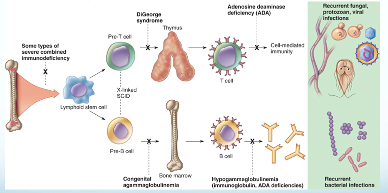
7.8 · Objective 8 — The mechanisms of carcinogenesis
Cancer cells carry genetic alterations that disrupt the normal cell division cycle. Possible causes: errors in mitosis, genetic damage, activation of oncogenes, or retroviruses. Tumors may be benign (nonspreading, self-contained) or malignant (spreading from the tissue of origin to other sites). Immune surveillance keeps cancer “in check.”
Transformation: a cancer arises from a single cell that has accumulated multiple mutations; oncogenes are activated by radiation, chemicals or oncogenic viruses (papillomavirus and cervical carcinoma, hepatitis B virus and liver cancer, among others).
| Necessary characteristics of cancer cells |
|---|
| They stimulate their own growth · ignore growth-inhibiting signals · avoid death by apoptosis · develop a blood supply (angiogenesis) · leave their site of origin to invade other tissues (metastasis) · replicate constantly · evade and outrun the immune response |
| Tumor antigens (more than 1000 identified) | Where found |
|---|---|
| Tumor specific | On tumor cells, not on normal cells. Derived from viral proteins, mutated cellular proteins or amino acid recombinations |
| Tumor associated | On tumor cells and on normal cells in smaller amounts |
Tumor escape from natural killer cells. When tumor cells cleave a stress molecule that natural killer cells recognize and release it in soluble form, the tumor cell escapes being killed: the soluble molecule binds the killing receptor on natural killer and gamma-delta T cells.
7.9 · Objective 9 — Comparing immunotherapy strategies
| Strategy | How it works | Status / use |
|---|---|---|
| Immune checkpoint inhibitors | Block checkpoint proteins binding their partner, preventing the “off” signal so T cells keep killing. Do not kill cancer cells directly | Melanoma, some lung cancers |
| Adoptive cell therapy | Patient’s own cells engineered outside the body and returned | Tumor infiltrating lymphocytes: approved for advanced melanoma (lifileucel, 2024) and still being studied in other solid tumors (the slide says in development, not yet approved). CAR-T (chimeric antigen receptor T cells): approved for blood cancers. Chimeric antigen receptor natural killer cells: mostly in trials, including solid tumors |
| Monoclonal antibodies | Diagnosis and elimination of cancer cells; can carry a chemotherapy drug or radionuclide (anti-CD20 plus radionuclide irradiates malignant B cells; anti-CD30 plus auristatin stops lymphoma cells forming a mitotic spindle) | More than 100 approved by the Food and Drug Administration |
| Cytokines | Interleukin 2 (aldesleukin): more cytotoxic T and natural killer cells; interferon alpha: activates natural killer and dendritic cells; growth factors: erythropoietin (red cells), interleukin 11 (platelets) | Interleukin 2: metastatic kidney cancer, melanoma. Interferon alpha: melanoma, Kaposi’s sarcoma, several blood cancers |
| Coley’s toxins | 1890s: bone sarcomas regressed with streptococcal skin infection; mix of killed streptococci and Serratia marcescens | Fell from favor with radiation and chemotherapy |
| Oncolytic viruses | Infect normal and cancer cells but replicate in and lyse only tumor cells; some natural (mumps), others engineered. Challenge: the immune system may clear them first | A few approved; one in the United States, for melanoma |
| Cancer vaccines | Prophylactic — prevent the infection (hepatitis B → hepatocarcinoma; papillomavirus → reproductive cancers). Therapeutic — activate immunity against tumor antigens | Bacillus Calmette-Guérin (weakened tuberculosis organism): bladder cancer. Sipuleucel-T: metastatic, castration-resistant prostate cancer |
Slide 78 also says granulocyte and granulocyte-macrophage colony-stimulating factors “stimulate growth of T cells.” That is the slide’s wording; no quiz question turns on it.
Tumor infiltrating lymphocyte therapy. Tumor infiltrating lymphocytes are cytotoxic T cells, activated and proliferated to a therapeutic amount. Update: it is no longer only in development and not yet approved; lifileucel gained Food and Drug Administration accelerated approval for advanced melanoma on 16 February 2024.
Oncolytic viral therapy. The main challenge is that immunity may clear the virus first; only a few are approved, just one in the United States, for melanoma.
Source: Lecture 7 — Disorders in Immunity (Dr. Webster), Slides 1–81, and the PAJ 5200 syllabus instructional objectives.
8 · Diagnosing Infections
Instructional Objectives
- Recall common infectious agents and the diseases that they cause.
- Recall microbial physiology including metabolism, regulation and replication.
- Describe the mechanisms by which an infectious agent causes disease.
- Describe the epidemiology and transmission of infectious agents.
- Discuss common mechanisms of antimicrobial action and resistance.
- Describe antimicrobial treatment strategies.
- Explain preventative interventions employed to prevent infectious diseases.
Two recordings, both transcripts read and compared; the quotes below appear in both. Part 1 (45 minutes) runs to the break around slide 43 (“this is a very logical place for us to pause”). Part 2 (about 11 minutes) picks up after the break and covers the rest of the deck: complement fixation, fluorescent antibodies, immunoassays, in vivo testing and viral diagnosis. The lecture is taught through laboratory anecdote and gives little exam steer — the same pattern as this lecturer’s Exam 1 lectures — so the two things it does stress are marked below.
| What was said | What it means for you |
|---|---|
| “You don’t have to bog down in a lot of the details… I highlighted some things for you. So blood agar is useful for detecting hemolysis… the take-home message is that the blood agar is useful for detecting hemolysis, especially for pathogenic Gram-positive bacteria like staph aureus or strep pyogenes.” [about minute 18] | The one explicit priority in the recording. Know what each plate is for (slides 17–20) rather than every reagent. Staphylococcus and Streptococcus return in the medically important cocci lecture. |
| Southern, Northern, Western, Eastern: “Southern was the first, was actually a man’s name, DNA [deoxyribonucleic acid]. RNA [ribonucleic acid] is Northern. Western is protein. And then Eastern is carbohydrates or other epitopes.” [about minute 42] | A memory hook for slides 41–42: only “Southern” is a person (Edwin Southern); the other compass points are a joke on his name. |
| Genotypic methods for organisms that are hard to grow: Legionella “you have to use live amoeba”; “tuberculosis, leprosy, again, very, very difficult to grow.” [about minute 9] | Matches slide 8 (Mycobacterium, Legionella): culture-free methods earn their cost on slow or difficult organisms. |
| “This is relevant to Koch’s postulates, but remember, not all organisms will work for Koch’s postulates. So what if the infection turns out to… be viral?” [about minute 27] | Slide 24’s caution: finding an organism is not proof it causes the disease. |
| After the break (part 2) | |
| Complement fixation: “this one is absolutely backwards of what you would normally think of as a microbiology test… the most important one is gonna be the sheep’s red blood cells… if the red blood cells burst, then your test is negative, because that means that the complement is free.” [part 2, 0:15–1:34] | ★ Said three ways in one minute (“backwards”, “exactly opposite or counterintuitive”, “completely backwards”). Lysis = negative; no lysis = positive (slides 45–46, section 8.4). |
| In vivo allergy testing: “what you’re looking for is a fairly rapid antigen-antibody reaction. So which antibody class would be useful for allergy testing? IgE [immunoglobulin E]… Remember, these are all good questions.” [part 2, 7:51–8:13] | ★ Ties slide 52–53’s skin-prick grid to Lecture 7: the wheal and flare of an allergy test is a type I, immunoglobulin E reaction (section 7). The tuberculin skin test on the same slide is the delayed, T cell (type IV) one. |
| Fluorescent antibodies: “you have to know a little bit beforehand about what antibody and antigen reaction you’re looking for”; it needs a microscope with fluorescent optics and “a really, really dark microscope room.” [part 2, 1:38–2:36] | The dye is carried by a specific (monoclonal) antibody (slide 47), so you choose it for the organism or antibody you suspect: another test that needs a hypothesis first, like the rapid strep test. |
| Enzyme-linked immunosorbent assay: “you can either be qualitative, yes or no, or it can be quantitative”, read by a plate reader; the “eight by twelve plates” and an eight-channel pipettor let a technician “run through a lot of samples very, very quickly”; “valuable for detecting HIV [human immunodeficiency virus].” [part 2, 3:24–6:53] | Slide 50’s 96-well plates and 8-channel pipettors are the point: throughput. The plate on slide 51 is a human immunodeficiency virus antibody screen. |
| Viruses: “very difficult to grow in the lab. It might require human tissue culture. It might require animal tissue culture”; rapid point-of-care kits give an answer in “10 minutes or less” — strep, influenza A, COVID [coronavirus disease 2019]. [part 2, 8:15–9:11] | Slide 54: viruses are not cells and need a host cell, so culture is labor intensive and rapid antigen-antibody tests fill the gap. (The rapid strep test in her list detects a bacterium; it is there as the familiar example of the format.) The deoxyribonucleic acid and ribonucleic acid virus lectures themselves are the last two of the semester, not this exam [9:18]. |
Where the slide is wrong — chocolate agar: slide 18 and the recording both say chocolate agar is “mainly used for anaerobic culturing.” It is not an anaerobic medium. It is an enriched medium for fastidious organisms such as Neisseria, usually incubated in extra carbon dioxide — the candle jar the lecturer goes on to describe, and what the Lecture 9 deck says (slide 57; section 9.11). Anaerobes need oxygen excluded altogether. No question keys “anaerobic” for chocolate agar.
8.1 · Objective 1 — Identifying the agent: the three categories
| Category | What it examines | Needs culture? |
|---|---|---|
| Phenotypic | Observable microscopic and macroscopic characteristics (phenotype = “the physical expression of genes”): morphology, physiology and biochemistry, chemical analysis, sensitivity to antimicrobial drugs | Usually — so may take longer |
| Genotypic | Genetic makeup: deoxyribonucleic acid and ribonucleic acid sequence analysis, restriction fragment length polymorphism, specific gene sequencing to build phylogenies, electrophoresis | Usually not |
| Immunological | Serology — antibody-antigen reactions: agglutination, precipitation, immunoelectrophoresis, complement fixation, immunofluorescence, immunoassays, in vivo allergy testing | May or may not — but always exploits antigen-antibody specificity |
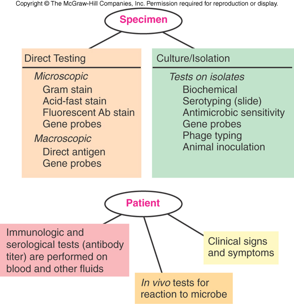
Results come in two categories, presumptive or confirmatory. Immune tests are generally easier and faster than hunting for the microbe itself (the slide also says more accurate, but a negative rapid test can still miss infection): the rapid strep test takes 10–15 minutes — but you need a hypothesis first to choose the test (fever, sore throat and pus pockets on the tonsils suggest strep throat).
Rapid immunological tests. You need a hypothesis to target it: fever, sore throat and pus-pockets on the tonsils lead you to suspect strep throat, and only then does the rapid test answer the question.
8.2 · Objective 1 — Genotypic methods
Genotypic methods assess the organism’s genetic makeup and need no culture — valuable for slow-growing Mycobacterium and hard-to-grow Legionella. Precise, automated methods give quick results, and faster, more accurate diagnosis means proper treatment begins in a timely manner.
| Technique | Key facts |
|---|---|
| deoxyribonucleic acid probe hybridization / restriction fragment length polymorphism (“deoxyribonucleic acid fingerprinting”) | Probes complementary to a microbe’s specific sequences bind. Restriction enzymes cut deoxyribonucleic acid into fragments whose lengths differ between organisms |
| Polymerase chain reaction | A thermal cycler amplifies specific pieces of deoxyribonucleic acid or ribonucleic acid; basic concept invented by Kary Mullis and colleagues. Guanine plus cytosine content helps taxonomic determination, not necessarily a specific identification |
| Ribosomal ribonucleic acid sequencing | Compares base sequences to establish relationships: 16S ribosomal ribonucleic acid genes for bacteria (prokaryotes), 18S for eukaryotes; builds phylogenetic trees (slide 29: the oral microflora) |
Genotypic methods. Their major practical advantage is that culture is not necessary. This matters most for slow-growing organisms such as Mycobacterium and difficult ones such as Legionella, since the delay of culture is avoided entirely.
DNA fingerprinting. Restriction fragment length polymorphism analysis, a genotypic method in which DNA probes bind a microbe's specific sequences, is known as DNA fingerprinting.
8.3 · Objective 1 — Serology, agglutination and precipitation
Serology is in vitro diagnostic testing of serum. Antibodies are extremely specific for their antigens, so these methods can tell close relatives apart, and they are also very sensitive, able to detect small amounts. Visible results: precipitates, color changes, or released radioactivity. Tests identify antibody and measure how much is present — the titer, often reported in binding antibody units. A known antigen can test a patient’s serum (serological diagnosis), or known antibody can identify an unknown microbe (serotyping).
| Agglutination | Precipitation | |
|---|---|---|
| Antigen | Whole-cell or insoluble | Soluble, made insoluble by antibody |
| What you see | Large visible clumps that sink | A visible precipitate; needs a gel or liquid matrix |
| Sensitivity | Generally more sensitive than precipitation; run on a card or slide | Very sensitive |
| Uses | Blood typing; rapid syphilis diagnosis; cold agglutinins for mycoplasmas; Weil-Felix test for rickettsial disease; latex agglutination for pregnancy; color-changing rapid strep tests are a modified agglutination technique | Tube precipitation; Ouchterlony double diffusion in agar gel; immunoelectrophoresis identifies which antibody class (immunoglobulin G, M and so on) binds antigen in serum |
Serological test reactions. They can produce precipitates, color change, radioactivity, and report not only presence but amount, the titre, often given in binding antibody units.
Serology. Serology is in vitro diagnostic testing of serum samples. Because antibodies have extreme specificity for antigens, these methods can tell close relatives apart, and they are also very sensitive, able to detect small amounts.
Agglutination testing. It detects whole-cell or insoluble antigens, which antibody cross-links into complexes that settle out as large visible clumps, generally sinking to the bottom of the container.
Agglutination clumps. They settle to the bottom of the container, which makes the result visible without instrumentation and lets the test run on a card or slide.
Agglutination tests. The Weil-Felix test for rickettsial diseases uses agglutination, alongside blood typing, rapid syphilis diagnosis, cold agglutinin for mycoplasmas and the latex-agglutination pregnancy test.
8.4 · Objective 1 — Blots, complement fixation, fluorescence, immunoassays, in vivo tests and viruses
| Blot | Detects | Notes |
|---|---|---|
| Southern (about 1975) | Specific deoxyribonucleic acid sequences | The original, invented by Edwin Southern |
| Northern (about 1977) | ribonucleic acid (gene expression) | Oncogenes; transplant rejection |
| Western (about 1981) | Proteins | Electrophoresis then an immunoassay; bands where antibody binds. Long used as the second test to confirm human immunodeficiency virus status, though current United States guidance has replaced it with a second immunoassay and nucleic acid testing; also used in testing for bovine spongiform encephalopathy and Lyme disease |
| Eastern (about 1982) | Proteins, lipids, carbohydrate epitopes | Post-translational products |
Original electrophoretic blotting. It was invented by Edwin Southern, around 1975, to detect specific DNA sequences in DNA samples; the Northern, Western and Eastern blots all take their names from his.
Northern blot. It is used to study gene expression by detecting RNA, and is useful in the study of oncogenes and in rejection of transplanted organs.
Western blot. It was long used as the second test to confirm human immunodeficiency virus (HIV) status, though current United States guidance has replaced it with a second immunoassay and nucleic acid testing; it is also used in testing for bovine spongiform encephalopathy and Lyme disease.
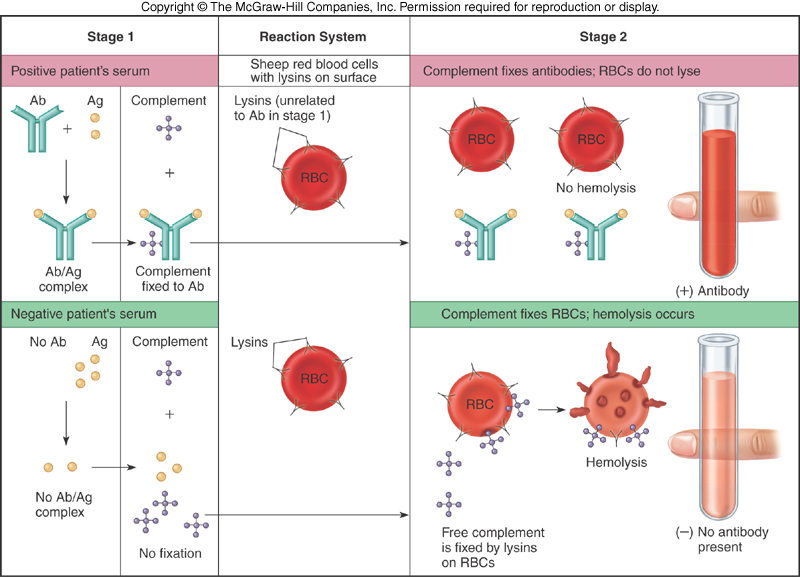
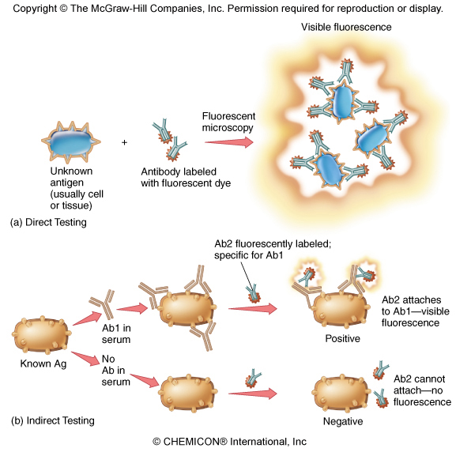
| Method | Key facts |
|---|---|
| Fluorescent antibody testing | A monoclonal antibody labeled with a fluorescent dye shows cells or aggregates, by direct or indirect methods |
| Immunoassays | Extremely sensitive — detect trace amounts of antigen or antibody. Radioimmunoassay: labeled with radioactive isotopes. Enzyme-linked immunosorbent assay: an enzyme-antibody complex produces a colored product (chromogen) when its substrate is added; run in 96-well plates |
| In vivo testing | Antigen introduced into the body to detect antibody or sensitivity: tuberculin skin test, allergy testing |
| Viruses | Special difficulty: they are not cells and need a specific host cell to replicate, so they are labor intensive to culture. Rapid point-of-care tests may use antigen-antibody reactions |
In vivo testing. Unlike serology, antigen is introduced directly into the body to determine the presence or absence of antibodies; the tuberculin skin test and allergy testing are the named examples.
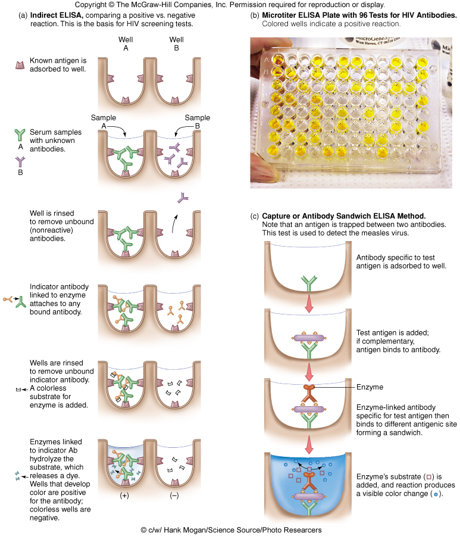
8.5 · Objective 2 — Microbial physiology in the laboratory
Phenotypic identification reads the organism’s physiology and metabolism.
| Method | What it looks at |
|---|---|
| Microscopic morphology | Fresh or stained organisms: cell shape, size, stain reaction (Gram, flagellar, acid-fast), cell structures. Immediate direct examination also uses direct fluorescent antibody and direct antigen testing |
| Macroscopic morphology | Colony appearance on test plates: texture, size, shape, pigment, growth requirements |
| Physiological / biochemical | Presence or absence of particular enzymes or metabolic pathways — product formed means the enzyme is present |
| Chemical analysis | Specific chemical composition: cell wall peptides, cell membrane lipids |
Immediate direct examination. The Gram stain and acid-fast stain are named for it, together with direct fluorescent antibody and direct antigen testing, which report before anything has been cultured.
Macroscopic morphology. It assesses colony appearance on culture media, including texture, size, shape, pigment and growth requirements, all observed with the naked eye rather than under the microscope.
| Common test or medium | What it shows |
|---|---|
| Carbohydrate fermentation, amino acid utilization, hydrolysis of gelatin, starch or lipids, catalase, oxidase, coagulase, hemolysins | The common biochemical tests |
| Blood agar | Detects hemolytic activity |
| Chocolate agar | The slide says “mainly used for anaerobic culturing”; in fact an enriched medium for fastidious organisms, grown in extra carbon dioxide (candle jar), not anaerobically (see the recording box above and section 9.11) |
| Mannitol salts agar | Selects for salt tolerance and differentiates by the pH change of mannitol fermentation |
| Simmons citrate | Citrate utilization; bromthymol blue turns blue as pH rises |
| Triple sugar iron slant | Several pH changes observable on one slant |
| Urea broth | Urea hydrolysis raises pH; hot pink = urease present |
| Rapid test strips (API 20E) | Many biochemical tests on one strip |
| Bacteriophage typing; animal inoculation | Phage susceptibility; growth in an animal (for example Mycobacterium leprae) |
Simmons citrate medium. A blue color indicates a rising pH, reported by the bromthymol blue indicator, because citrate utilization drives the pH up.
Replication, the last part of this objective, appears once: viruses cannot be cultured like bacteria because they replicate only inside a specific host cell (slide 54).
8.6 · Objective 3 — Is the organism causing the disease?
The deck does not teach disease mechanisms in this lecture. What it does say is the diagnostic form of the question: whether the microbe recovered is actually causing the disease, or whether you are simply detecting normal flora — the reasoning of Koch’s postulates, traditional and molecular (slide 24). Some virulence enzymes are themselves the test: hemolysins on blood agar and coagulase appear among the common tests (slide 17).
8.7 · Objective 4 — Specimens, handling and transmission risk
The deck’s epidemiology here is the specimen itself. All specimens should be considered potentially infectious. Results depend on collection, handling, transport and storage; some specimens need a preservative or fixative, others cooling, heating or other special treatment. Aseptic procedures and universal precautions (gloves, face shields, masks) mitigate but do not eliminate the risk of transmission. Slides 11–12 show collection sites and methods (nasopharynx, throat, sputum, blood, cerebrospinal fluid, urine by clean catch or catheter, feces, skin, genital swabs); a specimen then goes to direct testing or to cultivation, isolation and identification.
Phenotypic methods. They may take longer to reach a diagnosis because the microbes must be cultured: observable characteristics, biochemical reactions and sensitivity testing all depend on having grown the organism first.
8.8 · Objectives 5 & 6 — Antimicrobial sensitivity testing and treatment strategy
The Kirby-Bauer disk-diffusion test shows which drugs the microbe is susceptible or resistant to (the slide also says it gives the dose and usable combinations, but the dose comes from pharmacology and, for a dilution test, the minimum inhibitory concentration). For a given drug, a larger zone of inhibition means the microbe is more susceptible to it; zones of different drugs cannot be ranked against each other. Minimum inhibitory concentration (MIC) strips add the concentration needed. For treatment strategy the deck’s point is speed: faster, more accurate (genotypic) diagnosis means proper treatment can begin in a timely manner. Mechanisms of action and resistance themselves were Lecture 2’s subject.
Zone of inhibition. For a given drug, a larger zone means the microbe is more susceptible to it (zones of different drugs cannot be ranked against each other); minimum inhibitory concentration strips give the same information as a concentration, the lowest level that stops growth.
8.9 · Objective 7 — Preventative interventions
The deck offers one: aseptic procedure and universal precautions during specimen collection and handling, which mitigate but do not eliminate transmission (slide 10). Vaccination and other prevention are not in this deck.
Source: Diagnosing Infections (PAJ5200.Diagnosing Infections-2.pptx), Slides 1–57, and the PAJ 5200 syllabus instructional objectives.
9 · Cocci of Medical Importance
Instructional Objectives
- Compare and contrast the morphology, medium, laboratory tests, biochemical reactions, diseases, and methods of treatment, and prevention of cocci of medical importance.
- Describe the modes of transmission by which humans acquire cocci of medical importance.
59 minutes with Dr. Fair, one recording covering every slide. Both transcripts read and compared (Notability’s own and an independent local transcription, which agree word for word on 97% of the text); every quote below appears in both. The deck names no lecturer; the calendar names Dr. Fair, and the recording is plainly not Dr. Webster’s (“with Dr. Webster earlier, you had the gram-positive rods”, 32:08).
The emphasis is on the slides themselves. She opened with “I tried to highlight some things just for funsies” [0:28]: fourteen passages on fourteen slides are highlighted in yellow in the deck, and each one is marked like this below. Beyond those, the recording adds one priority and one cut:
| What was said | What it means for you |
|---|---|
| “She also discovered the M protein and this M protein, which you might also want to highlight, is important for the ability of these bacteria to avoid phagocytosis.” [21:23] | The one fact she told the class to add to the highlights: M-protein → resistance to phagocytosis (slide 28). In the same breath she said she had changed the slide that morning so it reads that the C-carbohydrates are what the Lancefield groups rest on. |
| “Don’t worry about digging down into the Lancefield letters. The A and the B are the primo ones. So the other letters are just opportunistic infections… don’t bog down too much in the details.” [29:59] | Know groups A (Streptococcus pyogenes) and B (Streptococcus agalactiae) thoroughly. The letters in the slide 26 table beyond A, B and D (the enterococci, which are on the syllabus list) are not worth memorizing, and no question asks them. |
| The catalase test “can’t” be run on colonies taken from blood agar, “because red blood cells also produce the enzyme, so it would give you a false positive indication.” [12:51] | A bench technique the deck does not state. Useful context for slide 18; not quizzed, because it is not on the slides. |
Where the time went (minutes spoken, local transcript): staphylococci about 16 minutes (26%); streptococci and enterococci about 26 (43%), the largest block, of which group A and its Lancefield history took about 9; the Gram-negatives about 18 (31%), though about 5 of those were anecdote over the sexually transmitted infection rate maps on slides 62–66. The quizzes are weighted the same way, 8 / 13 / 9 questions per set.
9.1 · Objective 1 — The decision tree for the Gram-positive cocci
| Step | Staphylococci | Streptococci and enterococci |
|---|---|---|
| Gram stain | Gram-positive, from thick peptidoglycan in the cell envelope; Gram-positive cells are physically strong (whereas Gram-negative cells are chemically strong). Spherical cells in irregular clusters | Gram-positive spherical or ovoid cocci in long chains, commonly in pairs |
| Spores and motility | Staph are always non-spore-forming and non-motile (no spores, no flagella). May produce capsules | Non-spore-forming, nonmotile; can form capsules and slime layers |
| Catalase reaction (hydrogen peroxide) | Catalase positive — bubbles | Catalase negative, though streptococci have a peroxidase system |
| Coagulase | Positive = Staphylococcus aureus; negative = the other staphylococci | — |
| Blood agar (to detect hemolysis) | Staphylococcus aureus hemolysins give clear zones | Beta = complete hemolysis on blood agar plate (a clear zone); alpha = partial hemolysis on blood agar plate, greenish |
| Salt | Withstand high salinity; grow on mannitol salts agar | Do not grow well on mannitol salts agar, which is too saline |
| Next step | — | Beta-hemolytic: bacitracin sensitive = group A, Streptococcus pyogenes; bacitracin resistant = groups B and C. Alpha-hemolytic: optochin sensitive = Streptococcus pneumoniae; optochin resistant = group D and viridans streptococci |
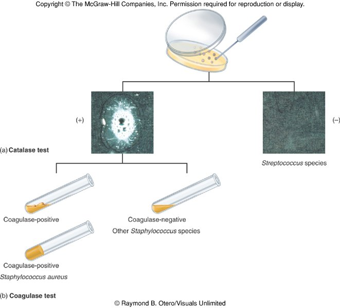
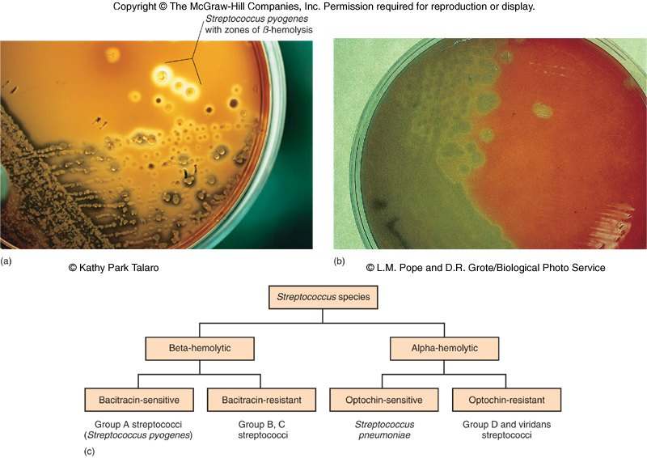
9.2 · Objective 1 — Staphylococcus aureus
Staphylococci are common inhabitants of the skin and mucous membranes; 31 species are in the genus. Staphylococcus aureus grows in large, round, opaque colonies that may be slightly yellowish (aureus = golden), with an optimum growth temperature of 37°C. It is a facultative anaerobe that thrives with or without oxygen, withstands high salinity, extremes of pH and high temperatures, and produces many virulence factors.
| Virulence factor | What it does |
|---|---|
| Coagulase | Coagulates plasma and blood; produced by 97% of human isolates; a significant diagnostic trait for this organism |
| Hyaluronidase | Digests connective tissue |
| Staphylokinase | Digests blood clots |
| Deoxyribonuclease | Digests deoxyribonucleic acid |
| Lipases | Digest oils and other lipids; enhance colonization on skin |
| Penicillinase | Inactivates penicillin (beta-lactamase behaves similarly) |
| Hemolysins (alpha, beta, gamma, delta) | Lyse red blood cells — visible on blood agar |
| Leukocidin | Lyses leukocytes, especially neutrophils and macrophages |
| Enterotoxin | Induces gastrointestinal distress (food intoxication) |
| Exfoliative toxin | Splits the upper layers of the epidermis apart (scalded skin syndrome); the slide says it separates the epidermis from the dermis |
| Toxic shock syndrome toxin | Induces fever, vomiting, shock and systemic organ damage |
Epidemiology. Present in most environments frequented by humans and readily isolated from fomites. Carriage rate in healthy adults is 20–60%, mostly in the anterior nares, skin, nasopharynx and intestines. Predispositions: poor hygiene and nutrition, tissue injury, a preexisting primary infection, diabetes, immunodeficiency. Methicillin resistance is increasingly community acquired, no longer just hospital acquired, so strains are designated community-acquired or hospital-acquired.
| Disease | Key facts |
|---|---|
| Folliculitis | Superficial inflammation of a hair follicle; usually resolves, can progress |
| Furuncle | A boil: inflammation of a hair follicle or sebaceous gland progresses into an abscess or pustule |
| Carbuncle | Larger, deeper lesion from the aggregation and interconnection of a cluster of furuncles |
| Impetigo | Bubble-like swellings that break and peel away; most common in newborns |
| Osteomyelitis | Infection is established in the metaphysis and an abscess forms |
| Bacteremia | Bacteria in the blood; primary origin is another infected site or medical devices; endocarditis is a possible complication |
| Food intoxication | Ingestion of heat-stable enterotoxins causes gastrointestinal distress |
| Scalded skin syndrome | Toxin induces a bright red flush, blisters, then desquamation of the epidermis |
| Toxic shock syndrome | Toxemia leading to shock and organ failure; classically from improper tampon use in females (see 9.11) |
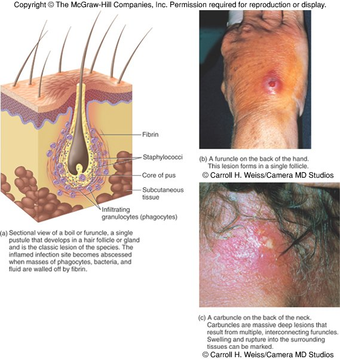
Treatment. 95% of staphylococci produce penicillinase and are resistant to penicillin and ampicillin. Methicillin-resistant Staphylococcus aureus carries multiple resistance; older teaching (and the slide) describes some strains as resisting all major drug groups except vancomycin, but vancomycin and several newer drugs still work against most strains. Abscesses have to be surgically perforated, and the wounds kept thoroughly clean and covered. Systemic infections may need intensive, lengthy antimicrobial therapy.
Prevention. Universal precautions by healthcare providers prevent, or at least reduce, nosocomial infections. Appropriate personal hygiene, and not sharing towels, washcloths, razors or toothbrushes.
Identification. Staphylococci may be isolated from pus, tissue exudates, sputum, urine and blood, and are identified by cultivation, the catalase reaction, biochemical testing and the coagulase reaction.
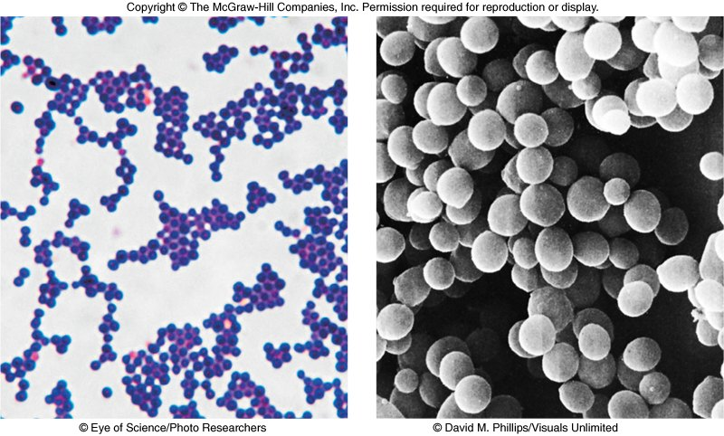
9.3 · Objective 1 — The coagulase-negative staphylococci
Coagulase-negative staphylococci are frequently implicated in nosocomial and opportunistic infections, and they often initiate polymicrobial biofilms, which can lead to further medical complications.
| Organism | Where it lives | Disease |
|---|---|---|
| Staphylococcus epidermidis | Skin and mucous membranes | Endocarditis, bacteremia, urinary tract infection; wound infection |
| Staphylococcus hominis | Around the apocrine sweat glands of the armpits and groin, which produce sweat with a higher lipid content | Wound infection |
| Staphylococcus capitis | Scalp, face, external ear | Wound infection |
| Staphylococcus saprophyticus | Infrequently on skin, intestine, vagina | May cause urinary tract infection |
The first three (epidermidis, hominis, capitis) may all cause wound infections by penetrating broken skin.
9.4 · Objective 1 — Streptococci in general: Lancefield groups and hemolysis
Streptococci are Gram-positive spherical or ovoid cocci in long chains, commonly found in pairs; non-spore-forming, nonmotile; can form capsules and slime layers; facultative anaerobes. They do not produce catalase (catalase negative) but do have a peroxidase system. Most parasitic forms are fastidious and require enriched media, growing as small, nonpigmented colonies on blood agar — but they do not grow well on mannitol salts agar, which is too saline. They are very sensitive to drying, heat and disinfectants.
| Classification | Based on |
|---|---|
| Lancefield (Rebecca Lancefield, 1933) | Cell wall antigens — the C-carbohydrates — giving groups A, B, C and so on. Know A and B; the other letters are not examined. |
| Hemolysis | Often combined with 16S ribosomal ribonucleic acid gene sequencing. Beta = complete hemolysis on blood agar plate: groups A, B, C, G and some D. Alpha = partial hemolysis on blood agar plate: Streptococcus pneumoniae and the others called viridans (viridis is Latin-derived for green, after the greenish color of partial hemolysis) |
Human streptococcal pathogens: Streptococcus pyogenes, Streptococcus agalactiae, the viridans streptococci and Streptococcus pneumoniae, with Enterococcus faecalis alongside. Enterococcus, with Lactococcus, was separated from Streptococcus in 1984 using 16S ribosomal ribonucleic acid gene analysis; the taxonomy is still evolving.
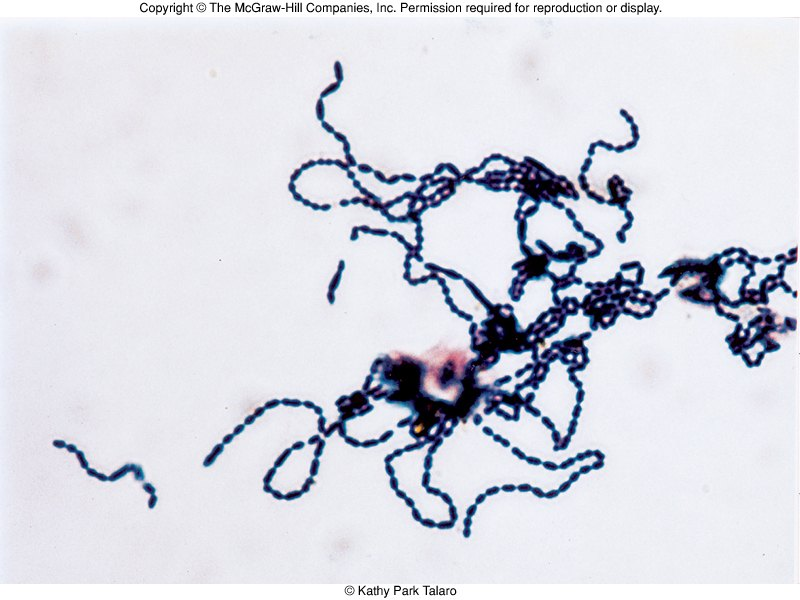
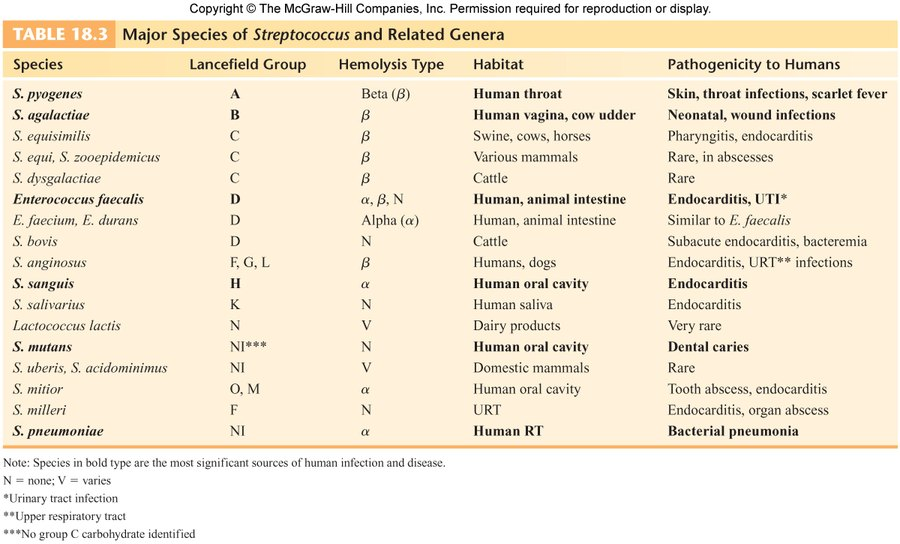
9.5 · Objective 1 — Streptococcus pyogenes (group A)
Beta-hemolytic Streptococcus pyogenes is the most serious of the streptococcal pathogens — Lancefield group A, so sometimes “GAS” (group A Streptococcus). It is a strictly human parasite inhabiting the throat, nasopharynx and occasionally the skin.
| Virulence factor | What it does |
|---|---|
| C-carbohydrates | Protect it against lysozyme; the basis of the Lancefield group |
| Fimbriae | Short protein fibers for adherence |
| ★ M-protein | Contributes to its resistance to phagocytosis |
| Hyaluronic acid capsule | Provokes little immune response, because it looks like the body’s own hyaluronic acid (the slide says none) |
| C5a protease | Hinders the complement and neutrophil response |
| Streptolysins O and S | Hemolysins; both cause cell and tissue injury |
| Erythrogenic (pyrogenic) toxin | Induces fever and the typical red rash |
| Superantigens | Strong monocyte and lymphocyte stimulants that cause the release of tumor necrosis factor (see 9.11) |
| Streptokinase | Digests fibrin clots |
| Hyaluronidase | Breaks down connective tissue |
| Deoxyribonuclease | Hydrolyzes deoxyribonucleic acid |
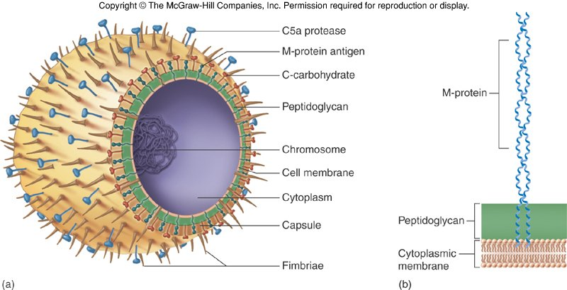
Epidemiology. Humans are the only reservoir of Strep pyogenes; other streptococci may be zoonotic. Inapparent carriers exist. Transmission is by contact, droplets, food and fomites; the portal of entry is generally the skin or pharynx. Children are the predominant group affected, for both skin and throat infections. Systemic infections and progressive sequelae are possible if untreated.
| Disease | Key facts |
|---|---|
| Impetigo (pyoderma) | Superficial lesions that break and form a highly contagious crust; often in epidemics in schoolchildren; also with insect bites, poor hygiene, crowding |
| Erysipelas | Enters through a break in the skin and spreads to the dermis and subcutaneous tissues; can stay superficial or become systemic |
| Streptococcal pharyngitis | “Strep throat” |
| Scarlet fever | A strain carrying a prophage that codes for erythrogenic toxin; can lead to sequelae |
| Septicemia, pneumonia, streptococcal toxic shock syndrome | The other systemic infections |
| Rheumatic fever | Follows overt or subclinical pharyngitis in children: carditis with extensive valve damage, arthritis, chorea, fever |
| Acute glomerulonephritis | Nephritis, increased blood pressure, occasionally heart failure; can become chronic and lead to kidney failure |
Treatment. Groups A and B are commonly treated with penicillin unless it is contraindicated (resistance or allergy). Long-term penicillin prophylaxis may be prescribed for those with a history of rheumatic fever or recurrent strep throat. Big problems abound with antibiotic resistant strains.
9.6 · Objective 1 — Group B Streptococcus, the enterococci, and the identification tests
| Organism | Key facts |
|---|---|
| Group B Streptococcus, Streptococcus agalactiae | Regularly resides in the human vagina, pharynx and large intestine. Can be transferred to the infant during vaginal delivery, causing severe infection: the most prevalent cause of neonatal pneumonia, sepsis and meningitis. Pregnant women should be screened and treated for GBS (group B Streptococcus), usually with intravenous antibiotics during vaginal delivery (see 9.11 on the drug). Also wound and skin infections and endocarditis in debilitated patients |
| Group D enterococci: Enterococcus faecalis, faecium, durans | Normal colonists of the human large intestine; cause opportunistic urinary, wound and skin infections, particularly in debilitated persons. Treatment usually requires multiple antibiotic therapy |
| Groups C and G | Common animal flora, often isolated from the upper respiratory tract; pharyngitis, glomerulonephritis, bacteremia (not examined; “the other letters”) |
Identification. Cultivation and diagnosis ensure proper treatment, preventing complications. Rapid diagnostic tests use monoclonal antibodies that react with the C-carbohydrates (serological or immunological methods). Phenotypic culture methods: the bacitracin disc sensitivity test, the CAMP test and bile esculin hydrolysis.
The CAMP test (named for Christie, Atkins and Munch-Petersen, 1944): a CAMP-factor protein works synergistically with beta-hemolytic Staphylococcus aureus to produce a flame or arrow shape on the blood agar plate. It is time consuming but has been effective in detecting Listeria monocytogenes, a Gram-positive rod whose temperature range is 0–40°C, from food and clinical specimens.
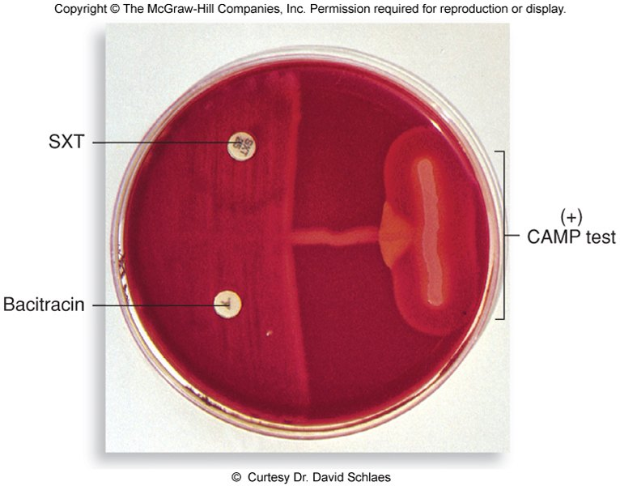
9.7 · Objective 1 — The viridans streptococci and Streptococcus pneumoniae
| Viridans group (alpha-hemolytic) | Streptococcus pneumoniae (the pneumococcus) | |
|---|---|---|
| Members and morphology | Streptococcus mutans, oralis, salivarius, sanguis, milleri, mitis; partially hemolytic, a greenish color around colonies | Small, lancet-shaped cells in pairs and short chains |
| Habitat | The most numerous residents of the gums and teeth, oral cavity; also nasopharynx, genital tract, skin | Nasopharynx: 5–50% of people carry it as normal flora |
| Culture | — | Requires blood or chocolate agar. Capnophilic (carbon dioxide loving): growth improved by 5–10% carbon dioxide. Aerotolerant anaerobes that lack catalase and peroxidases, so cultures may die in high laboratory oxygen |
| Entry and virulence | Not very invasive on their own; dental or surgical procedures may facilitate entrance. Streptococcus mutans produces slime layers that adhere to teeth, the basis of plaque and of dental caries | All pathogenic strains form large capsules, the major virulence factor; the capsule’s specific soluble substance varies among types (about 90 capsular types on the slide) |
| Disease | Gingivitis, periodontitis, bacteremia, meningitis, abdominal infection, tooth abscesses. The most serious is subacute endocarditis: blood-borne bacteria settle on the heart lining or valves and colonize them by forming biofilms. Pre-existing heart disease = high risk | Pneumococcal pneumonia (aspirated into the lungs, where they multiply and provoke an overwhelming inflammatory response) and otitis media (reaching the middle ear by the eustachian tube) |
| Who is at risk | Persons with pre-existing heart disease | Infections are usually endogenous, especially in the immunocompromised; greatest risk in young children, the elderly, the immune compromised, those with other lung disease or viral infection, and people in close quarters. A very delicate bacterium that does not survive long outside its habitat |
| Treatment and prevention | Prophylactic antibiotics before surgery or dental work for certain pre-existing heart conditions (many dentists have stopped except in extreme circumstances) | Traditionally penicillin G or V, but drug resistance is increasing. Two vaccines for high-risk individuals: a capsular antigen vaccine for older adults (effective about 5 years) and a conjugate vaccine for children 2 to 23 months |
Endogenous pneumococcal infection. 5 to 50% of people carry it in the nasopharynx, and infection usually comes from that carriage, from the person's own flora, especially if the host is immunocompromised.
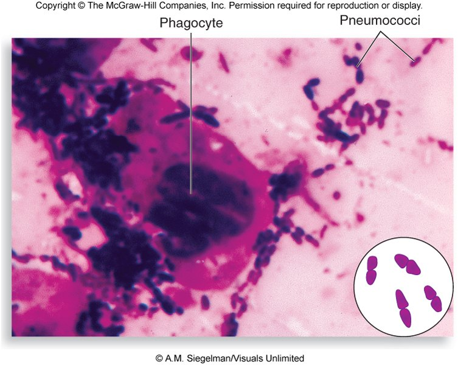
9.8 · Objective 1 — Neisseria gonorrhoeae and Neisseria meningitidis
The family Neisseriaceae: Gram-negative cocci, and therefore only a thin layer of peptidoglycan; residents of the mucous membranes of warm-blooded animals; genera Neisseria, Branhamella, Moraxella (with reclassifications by 16S ribosomal ribonucleic acid gene analysis). The two primary “frank” pathogens are Neisseria gonorrhoeae and Neisseria meningitidis.
| Genus Neisseria | Key facts |
|---|---|
| Morphology | Gram-negative, bean-shaped diplococci; no flagella or spores (non-motile, non-spore-forming); capsules common; pili (short protein fibers made of pilin) enhance attachment |
| Physiology | Strict parasites that do not survive long outside the human host. Aerobic or microaerophilic (requiring a low oxygen concentration). Produce both catalase and cytochrome oxidase |
| Culture | Pathogenic species need enriched complex media and carbon dioxide-enhanced chambers, such as chocolate agar in a “candle jar” (see 9.11) |
| Neisseria gonorrhoeae (gonococcus) | Neisseria meningitidis (meningococcus) | |
|---|---|---|
| Virulence | Fimbriae and other surface molecules for attachment, slowing phagocytosis. IgA protease cleaves secretory immunoglobulin A, especially the dimer, the protective antibody of mucous membranes such as the genitourinary tract | Capsule, adhesive fimbriae, IgA protease, endotoxin. 12 strains |
| Epidemiology | Strictly human; in the top 5 sexually transmitted diseases. Infectious dose 100–1,000 cells (fairly low). Survives no more than 1–2 hours on fomites | Prevalent cause of meningitis, sporadic or epidemic. Reservoir: the nasopharynx of 3–30% of adults, higher in institutional settings. High risk: close quarters, children 6 months–3 years, and 10–20 years (college dorms and apartments) |
| Disease | Asymptomatic in about 10% of males and 50% of females. Males: urethritis, yellowish discharge, scarring, infertility. Females: vaginitis, urethritis, salpingitis (pelvic inflammatory disease), a common cause of sterility and ectopic tubal pregnancy. Extragenital: anal, pharyngeal, conjunctivitis, septicemia, arthritis. Newborns: gonococcal conjunctivitis from the birth canal (eye inflammation, blindness) | Bacteria enter the bloodstream, cross the blood-brain barrier, permeate the meninges and grow in the cerebrospinal fluid. Very rapid onset, neurological symptoms; endotoxin causes hemorrhage and shock; can be fatal |
| Diagnosis | Gram-negative intracellular diplococci (in neutrophils) from urethral, vaginal, cervical or eye exudate: a presumptive identification | Gram stain of cerebrospinal fluid, blood or nasopharyngeal sample; culture for differentiation is time consuming, so diagnosis may be delayed; rapid tests for capsular polysaccharide |
| Treatment and control | 20–30% of new cases are penicillinase-producing or tetracycline-resistant strains. No long-term immunity is acquired, so infections recur. A reportable disease. Newborn eyes: topical antibiotic prophylaxis immediately after birth | Intravenous penicillin G or a cephalosporin; prophylaxis for close contacts (family and children nearby, and medical personnel only after direct exposure to the patient’s secretions); the primary vaccine contains purified capsular antigens |
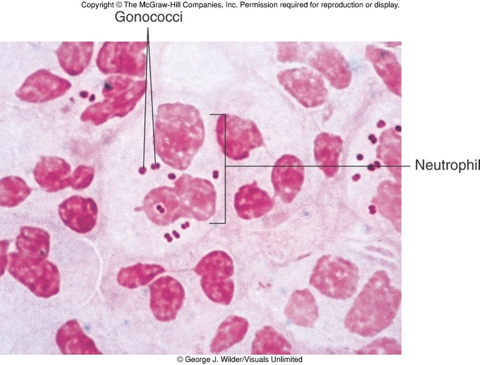
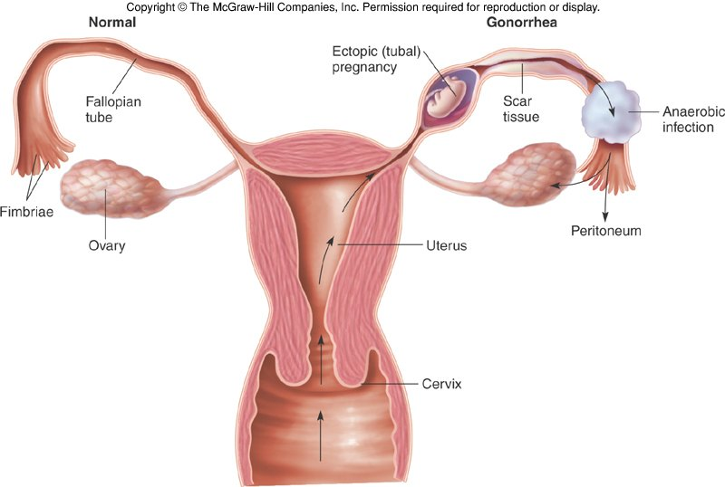
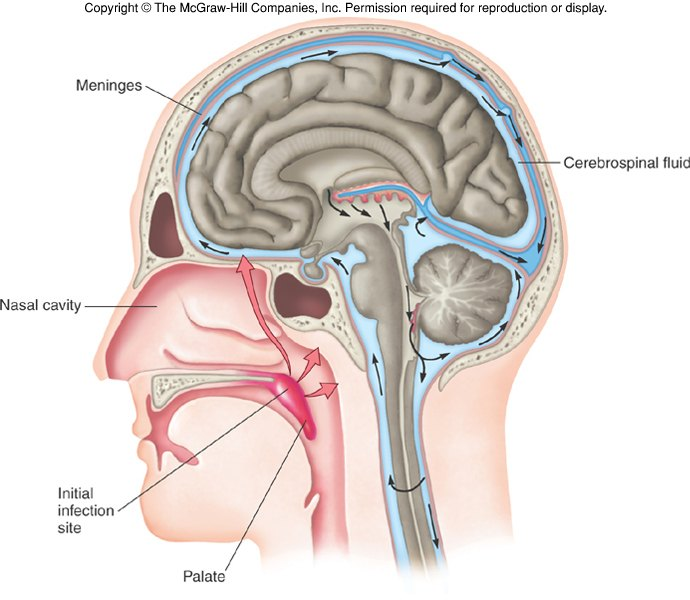
9.9 · Objective 1 — Branhamella / Moraxella and Acinetobacter
| Organism | Key facts |
|---|---|
| Branhamella catarrhalis, now Moraxella | Found in the nasopharynx; a significant opportunist in cancer, diabetic and alcoholic patients. Reclassified into the closely related genus Moraxella by 16S ribosomal ribonucleic acid gene sequence analyses. Diplococci on the mucous membranes of humans and other primates |
| Acinetobacter baumannii | A multidrug-resistant organism; coccobacilli. Becoming an important hospital-acquired infection, especially in military hospitals. The slide places it in “arid soil environments (such as Iraq and Afghanistan)”; see 9.11 on why that is the genus rather than this species |
9.10 · Objective 2 — Modes of transmission
| Organism | Reservoir or habitat | How humans acquire it |
|---|---|---|
| Staphylococcus aureus | Anterior nares (20–60% of adults), skin, nasopharynx, intestines; fomites | Through wounds, follicles or glands; from another infected site or a medical device (bacteremia); ingesting heat-stable enterotoxin (food intoxication); toxic shock with improper tampon use; community as well as hospital spread of resistant strains; shared towels, razors and toothbrushes |
| Coagulase-negative staphylococci | Skin and mucous membranes; apocrine glands; scalp, face and ear; skin, intestine, vagina | Penetrating broken skin (wound infection); nosocomial and opportunistic |
| Streptococcus pyogenes | Humans only; throat, nasopharynx, occasionally skin; inapparent carriers | Contact, droplets, food and fomites; enters by skin or pharynx; mostly children |
| Streptococcus agalactiae (group B) | Vagina, pharynx, large intestine | Transferred to the infant during vaginal delivery |
| Enterococci (group D) | Large intestine | Opportunistic urinary, wound and skin infection in the debilitated |
| Viridans streptococci | Gums, teeth, oral cavity | Dental or surgical procedures let them in; blood-borne to damaged valves |
| Streptococcus pneumoniae | Nasopharynx (5–50%) | Endogenous; aspiration into the lungs; middle ear by the eustachian tube; does not survive long outside its habitat |
| Neisseria gonorrhoeae | Strictly human | Sexual contact (low infectious dose; 1–2 hours on fomites); newborns through the birth canal |
| Neisseria meningitidis | Nasopharynx (3–30% of adults) | Close quarters, dormitories; from the nasopharynx into the bloodstream and across the blood-brain barrier |
| Moraxella | Nasopharynx | Opportunist in cancer, diabetic, alcoholic patients |
| Acinetobacter baumannii | Hospital environments (the genus lives in soil and water; see 9.11) | Hospital acquired, especially in military hospitals |
9.11 · Where the slides, the recording and the evidence disagree
The rule for these quizzes is that what is medically true wins. Each item below says what the slide or the recording says, what is true, and how the questions are keyed.
| Source says | What is true | How the quizzes handle it |
|---|---|---|
| Slide 38: group B treatment “usually with IV antibiotics during vaginal delivery; streptomycin is commonly used” — and the recording describes intravenous streptomycin [29:18] | Intrapartum prophylaxis for group B Streptococcus is intravenous penicillin (ampicillin the alternative; other drugs for penicillin allergy). Streptomycin is not used | No question names the intrapartum drug. The treatment question keys penicillin for groups A and B (slide 44) |
| Slide 14: toxic shock “can be transmitted to males during unprotected sex” | Toxic shock syndrome is a toxin illness from Staphylococcus aureus the person is colonized or infected with; it is not sexually transmitted. About half of cases today are not related to menstruation | Not asked. The tampon question says “classically associated”, not “usually” |
| Slide 30: superantigens release “tissue necrotic factor” | The cytokine is tumor necrosis factor | Keyed as the slide’s “strong monocyte and lymphocyte stimulants” |
| Slide 57: a candle jar, “in which most of the oxygen is depleted”; the recording calls chocolate agar a medium for “anaerobic cultures” [37:43, 44:16] | A candle jar raises carbon dioxide to a few percent and leaves most of the oxygen. Chocolate agar is an enriched medium for fastidious organisms such as Neisseria and the pneumococcus, often incubated in extra carbon dioxide; Neisseria are aerobic or microaerophilic, not anaerobes. (The Lecture 8 slide that calls chocolate agar “mainly used for anaerobic culturing” has the same problem) | Keyed as chocolate agar in a candle jar, with enhanced carbon dioxide as what the jar provides |
| Recording: pneumococcal vaccines “recommended every year” [38:48]; slide 53: a capsular antigen vaccine for older adults | Pneumococcal vaccines are not annual. Current United States adult schedules use conjugate vaccines as well | Only the children’s conjugate vaccine is keyed |
| Recording: a pregnant woman diagnosed with a sexually transmitted disease will very likely be advised to have a cesarean section [53:44] | Not true of gonorrhea, which is treated with antibiotics; the newborn is protected by eye prophylaxis | Keyed as topical antibiotic prophylaxis at birth (slide 70); routine cesarean appears only as a refuted distractor |
| Recording: group B screening is “usually a very rapid strep test for antibody detection” [28:56] | Screening late in pregnancy is by vaginal-rectal swab culture (or a nucleic acid test), not antibody detection | Keyed as the slide states it: screen and treat |
| Recording: the lower panel of slide 41 is “a coagulase test” [31:11] | The slide is titled Streptococcal ID tests and shows a slide agglutination reaction (positive = clumping), consistent with slide 40’s rapid antibody test; coagulase is a staphylococcal test | Not asked |
| Recording: the facial infection of slide 34 has “the slapped face look” [26:23] | “Slapped cheek” is the rash of erythema infectiosum (parvovirus B19), not a streptococcal infection; the slide shows impetigo and erysipelas | Not asked |
| Slide 71: “combined antibiotic therapies are often indicated” for gonorrhea | Current United States guidance is a single cephalosporin (ceftriaxone), adding doxycycline only when chlamydia has not been excluded | Not keyed |
| Slide 78 and the recording (“pretty rare”): Moraxella as an opportunist | Also a common cause of childhood otitis media — one of the three classic bacterial causes | Keyed as the slide’s opportunist in cancer, diabetic and alcoholic patients; no question calls it rare |
| Slides 23, 48, 50, 73: 17 Lancefield groups; 60–70% of bacterial pneumonia; 90 capsular types; serotypes A, B and C cause most meningococcal disease | About 20 Lancefield groups; the pneumococcus is the leading identified bacterial cause of pneumonia but at a much lower share; more than 100 capsular types; serogroups A, B, C, W, X and Y cause nearly all meningococcal disease | None of these numbers is asked |
| Slide 79: Acinetobacter baumannii coccobacilli “found in many arid soil environments (such as Iraq and Afghanistan)” | The genus Acinetobacter is common in soil and water, but Acinetobacter baumannii itself is rarely isolated from soil; the infections in service members wounded in Iraq and Afghanistan were traced to transmission inside military hospitals, not to the soil | The environment question was dropped. Keyed facts: multidrug-resistant coccobacilli, hospital acquired, especially in military hospitals |
| Slide 74: high-risk ages 6 months–3 years and 10–20 years | Close to current figures, which put the peaks in infants under 1 year and in adolescents and young adults (about 16–23) | Keyed as the slide states it; no option competes with it |
| Slide 77: the vaccine contains purified capsular antigens | True of the quadrivalent (A, C, W, Y) vaccines; the serogroup B vaccines are built on surface proteins instead, because the group B capsule is poorly immunogenic | Keyed as the slide states it: purified capsular antigens |
| Slide 7: penicillinase, and “another enzyme called beta-lactamase which behaves similarly” | Penicillinase is a beta-lactamase | No question sets the two apart |
Source: Cocci of Medical Importance: Gram positive and Gram negative (PAJ5200.Cocci of Med importance.pptx), Slides 1–79, the lecture recording of 2 October 2026, and the PAJ 5200 syllabus instructional objectives and Appendix 2.
10 · Gram-Positive Bacilli of Medical Importance
Instructional Objectives
- Compare and contrast the morphology, medium, laboratory tests, biochemical reactions, diseases, clinical manifestations, methods of treatment, and prevention of Gram-positive bacilli of medical importance.
- Describe the modes of transmission by which humans acquire Gram-positive bacilli of medical importance.
About 90 minutes with Dr. Webster, in two parts (46 and 44 minutes). Both transcripts read and compared (Notability’s own and an independent local transcription); every quote below appears in both unless marked. The recording begins at slide 6, so the title, objective, organism-list and scheme slides (1–5) have no audio. Unlike her Exam 1 lectures, this one signposts often — and it states two rules that cut the scope of the whole lecture.
| What was said | What it means for you |
|---|---|
| “By the way I’m not going to be testing you on the percentages. But you do need to know what is the most common, what’s the deadliest, how the different things work.” [part 1, 12:34] | Mortality rates, case counts and outbreak years are context, not exam material. What is examinable: the most common form, the deadliest form, and the mechanism. |
| “By the way, I’m not going to be asking you what antibiotics to use to treat these things because that’s what we have our PDRs [Physicians’ Desk References] for.” [part 2, 8:03] | The drug names on the treatment slides are not examinable. The other treatment methods are: antitoxin, debridement, hyperbaric oxygen, ventilator support, fecal microbiota transplant, hardware removal, treatment length, and the vaccines. |
| “You need to know the different forms and what they do. So most cases of anthrax are cutaneous…” [part 1, 8:49] and of pulmonary anthrax: “this is the most deadly form of anthrax. You need to know that.” [part 1, 11:41] | Cutaneous = most common; pulmonary (woolsorters’ disease) = most deadly (10.2). |
| “You do need to know that bacillus centrally located, Clostridium terminally located.” [part 1, 21:16] | Spore position is a diagnostic characteristic (10.1). The Clostridioides difficile terminal spores “look like a little tennis racket” (Notability; the local transcript heard “tennis ball”). [part 1, 44:24] |
| Gas gangrene: “caused by Clostridium perfringens most commonly and that would be the one I would want you to know.” [part 1, 20:48] Then “you need a mixed infection. You need a mixed infection” [part 1, 22:16] — prefaced in the local transcript by “underline this”. | The organism, and why a mixed infection matters: aerobes use up the oxygen so the anaerobic spores can grow (10.4). |
| The myonecrosis toxins: “at least 17 different ones and I’m not going to ask you to name them, but look at the things they do.” [part 1, 24:39] | Know the effects (red cells ruptured, white cells destroyed, connective tissue broken down by collagenase and hyaluronidase), not the toxin names. |
| “So, but remember floppy baby syndrome.” [part 1, 36:05] | Infant botulism: ingested spores germinate in the infant gut; flaccid paralysis (10.6). |
| Erysipelothrix: “You’re not going to need to worry too much about that one” [part 2, 0:24] and “this is the one I’m not really going to worry too much about” [part 2, 9:11]. Notability hears the first as “I’m not testing you on that”; the local transcript as “not stressing you on that”. | Slides 57–58 are kept in 10.8 for completeness; no quiz question is built on them. |
| Diphtheria: the pseudomembrane “is very characteristic of, for a diagnosis of this organism that you should know.” [part 2, 13:48] | Pseudomembrane in the throat = respiratory diphtheria (10.9). |
| “You need to know the new name because this has been relatively recently reclassified. Propionibacterium is now called Cutibacterium.” [part 2, 16:02] (She also said slide 59 still carries the old name and that she would correct and repost the deck.) | Cutibacterium acnes (10.10). |
| The Mycobacterium species table (slide 68): “Another chart I am not asking you to memorize.” [part 2, 20:58] | Know that many species exist and that non-tuberculous species trouble the immunosuppressed; do not learn the table. |
| “Clinical tuberculosis is divided into three different stages that you need to know.” [part 2, 24:39] | Primary, secondary (reactivation or reinfection), disseminated (extrapulmonary) (10.11). |
| The non-tuberculous mycobacteria (slide 90): “don’t worry about being tested but just to show you” [part 2, 38:14] | Slide 90 is context only; it is summarized in 10.11 and no question is built on it. |
| Actinomyces israelii: “this is one that you should know because it is normally it’s a harmless organism because it’s superficial; when it is no longer superficial is when you have an issue with it.” [part 2, 41:38] | Disease follows access to deeper tissue (10.13). |
Things said that are not on a slide — consistent with the deck, useful as hooks, each present in both transcripts:
- Hydrogen peroxide in a deep puncture wound: flooded deep into the wound, the catalase in your tissues releases oxygen, which inhibits the anaerobic clostridia; on a surface wound it mostly lifts dirt by bubbling. [part 1, 23:16–23:50]
- The rusty nail: “the rust has nothing to do with it” — the danger is the puncture wound. [part 1, 27:51]
- Why boiling home-canned food for 10 minutes works: the botulinum toxin is sensitive to heat even though the spore is not. [part 1, 39:03]
- Why infants and not adults: the infant digestive system is immature, so swallowed spores meet the anaerobic conditions that let them germinate. [part 1, 34:20]
- The Mantoux test is read at 48–72 hours because it is a type IV (delayed) hypersensitivity reaction — the link back to Lecture 7. [part 2, 28:08]
- Cutibacterium: routine cultures used to be read at one to two days and thrown away, so a growth that takes more than six days was missed. [part 2, 17:50]
- Leprosy spreads with prolonged close living, not casual contact. [part 2, 33:35]
- Actinomyces viscosus in the mouth is why patients with heart conditions or implants take antibiotic prophylaxis before dental work. [part 2, 42:15]
One slip to ignore. Summing up tetanus she said “just blocking the release of the neuromuscular junction” [part 1, 29:14] (both transcripts). That is botulism’s mechanism. Tetanospasmin blocks the inhibitory transmitters from spinal neurons (slides 29–30), which is why tetanus is spastic and botulism flaccid. See 10.5.
At the end of the Epidemiology lecture Dr. Webster reviewed her Exam 2 lectures for the class (“This is for the exam” [part 4, 0:00]). This lecture was second. Both transcripts read; every quote below appears in both. The recording weights; the slides still decide every fact. Her whole review, item by item, is on her review page.
| What she said | Where it is in this section |
|---|---|
| “Those learning objectives are really, really general. So let’s go to the list of organisms.” [part 4, 12:24–12:28] | She reviewed organism by organism, 10.1–10.13, not by objective. Objective 2 (modes of transmission, 10.14) still stands. |
| Bacillus: the spore is “in the middle, it’s centrally located.” [part 4, 12:47] Clostridium: “it’s not centrally located like bacillus”, it is terminal. [part 4, 13:38] | 10.1: central spores (aerobic Bacillus) versus terminal spores (anaerobic Clostridium). |
| Anthrax: cutaneous “is the most common”; pulmonary, woolsorters’ disease, “is the one which is most deadly.” [part 4, 12:59–13:21] | 10.2, the three forms of anthrax. |
| Gas gangrene: “we have to have what’s called a mixed infection. What did we mean by a mixed infection?” [part 4, 14:00–14:04]; tetanus is “also needing that mixed infection to use up that oxygen.” [part 4, 14:45] | 10.4 and 10.5: aerobes in the wound use up the oxygen so the anaerobic spores can germinate. |
| Botulism: improperly home-canned foods, and “remember honey has the spores in it” → floppy baby syndrome. [part 4, 15:00–15:24] | 10.6: food-borne and infant botulism. |
| Clostridioides difficile: people on long-term antibiotics, which wipe out the normal flora; fecal transplant as the alternative therapy. [part 4, 15:30–16:06] | 10.7. |
| Listeria: “This is the one that needs cold… it needs cold enrichment in order to grow.” [part 4, 16:34–16:41] | 10.8: grows during refrigeration; cultured by cold enrichment. |
| Diphtheria, asked as a question: “What is characteristic for diphtheria? The pseudomembrane.” [part 4, 17:16–17:20] | 10.9: the pseudomembrane, and antitoxin in treatment. |
| Cutibacterium: no longer just acne; implicated in infections of implants and shunts. [part 4, 17:39–17:56] | 10.10. |
| “We’ve talked about the different stages of tuberculosis. Go review your stages of tuberculosis.” [part 4, 18:13–18:17] | 10.11: primary, secondary (reactivation or reinfection) and disseminated (extrapulmonary) tuberculosis. She flagged the stages in the lecture too. |
| Leprosy: armadillos; “remember it comes in two different forms”, tuberculoid (less serious) and lepromatous (the major disfigurement); diagnosis where care is scarce: the feather test. [part 4, 18:24–18:53] | 10.12: the two polar forms and the feather test. |
| Actinomyces israelii: normally harmless in the oral cavity, serious when a penetrating wound puts it where it should not be. [part 4, 18:56–19:26] | 10.13. |
10.1 · Objective 1 — Sorting the Gram-positive bacilli
The medically important Gram-positive bacilli divide into three general groups on two properties, the presence or absence of endospores and acid-fastness: the endospore-formers, the non-endospore-formers, and those of irregular shape and staining.
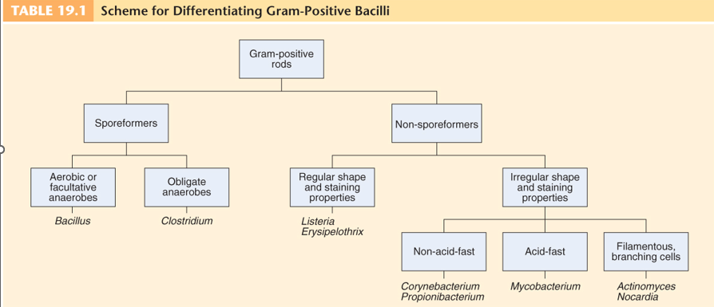
| Genus Bacillus | Genus Clostridium | |
|---|---|---|
| Shape and stain | Gram-positive, endospore-forming, motile rods | Gram-positive, spore-forming rods |
| Spore position | Central (a diagnostic characteristic) | Terminal; oval or spherical spores produced only under anaerobic conditions |
| Oxygen and catalase | Aerobic (aerobic or facultatively anaerobic in the scheme), catalase positive | Anaerobic, catalase negative |
| Habitat and lifestyle | Mostly saprobic; primary habitat soil; versatile in degrading complex macromolecules | About 120 species; spores in soil, skin, intestine and vagina; opportunistic pathogens |
| Products | Antibiotics: gramicidin, tyrocidine, bacitracin, mycobacillin, surfactin, bacilysin, subtilin | Organic acids, alcohols and exotoxins among the most toxic substances on earth |
| Infections | Two species of medical importance: B. anthracis, B. cereus | Two types: wound and tissue infections, and food intoxications |
The spore-forming genera are Bacillus, Clostridium, Clostridioides and Sporolactobacillus (not pathogenic; a potential probiotic).
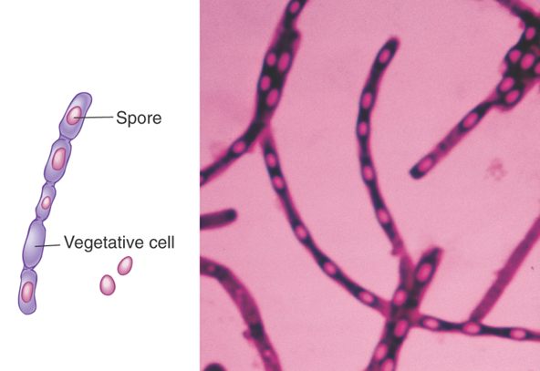
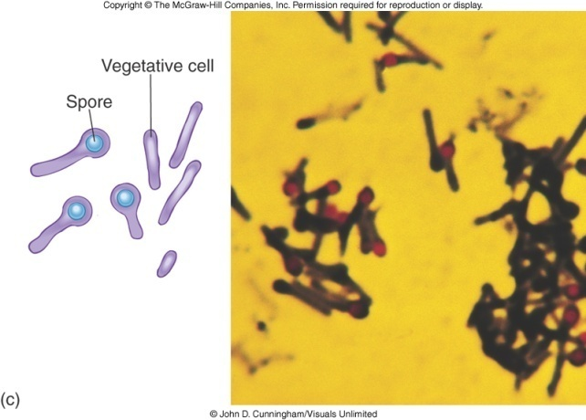
Regular non-spore-forming rods stain uniformly and do not assume pleomorphic shapes (Lactobacillus, Listeria monocytogenes, Erysipelothrix rhusiopathiae). Irregular ones are pleomorphic and stain unevenly; the deck says all produce catalase and their cell walls have mycolic acids and a unique peptidoglycan (Corynebacterium, Propionibacterium/Cutibacterium, Mycobacterium, Actinomyces, Nocardia) — see 10.15 for the exceptions. Corynebacterium and Mycobacterium share mycolic acids in the wall.
10.2 · Objective 1 — Bacillus anthracis and anthrax
| Heading | Bacillus anthracis |
|---|---|
| Significance | The organism with which Koch’s postulates were established (isolate it from every case, grow it in pure culture, reproduce the disease, re-isolate it) |
| Morphology | Large, block-shaped rods in chains, with central spores |
| Disease | Anthrax, a zoonotic infection |
| Why it worries us | Category A priority pathogen — a potential weapon of bioterrorism; an accidental release from a Soviet bioweapon facility in 1979 was highly fatal |
| Virulence: capsule | A polypeptide capsule that makes the cell hard for phagocytes to engulf |
| Virulence: the three-part exotoxin | Protective antigen binds host cells and creates a receptor site for the other two components. Edema factor impairs phagocytosis and inhibits tumor necrosis factor and interleukin 6 production by monocytes. Lethal factor: at low levels it inhibits release of interleukin 1 and tumor necrosis factor alpha, damping the immune response; at high levels it lyses macrophages, releasing high levels of interleukin 1, tumor necrosis factor alpha and nitric oxide. Excessive release of these cytokines can trigger a massive inflammatory response and the shock cascade, like septic shock. |
| Form | How it is acquired | What happens |
|---|---|---|
| Cutaneous — the most common form (about 95% of human cases) | Spores enter through cuts or incisions in the skin, germinate in the tissue and grow | A painless papule that rapidly becomes an ulcer surrounded by vesicles and finally a black necrotic eschar |
| Injection | Injecting contaminated heroin; identified in addicts in northern Europe, not yet in the United States | Like cutaneous anthrax, but the infection is in the deep muscle where the drug was injected, so it spreads faster and is harder to recognize and treat |
| Pulmonary (woolsorters’ disease) — the most deadly form | Inhaling spores from infected animal products (wool of infected sheep) or soil | May be latent for two months or more. Alveolar macrophages engulf the spores and the exotoxins kill the macrophages en masse: cough, headache, fever, chills, vomiting, chest and abdominal pain, then worsening fever, edema, capillary thrombosis and cardiovascular shock; about half develop meningitis. Untreated, nearly always fatal within about three days of symptoms |
| Gastrointestinal | Eating meat from an infected animal | Ulcers of the mouth and esophagus, localized lymphadenopathy; nausea, vomiting and malaise if the upper intestine is invaded; sepsis if the large intestine is invaded |
| Meningitis | A complication of any form; up to half of pulmonary cases | Typical meningitis: altered mental status, headache, fever, nausea and vomiting, seizures |
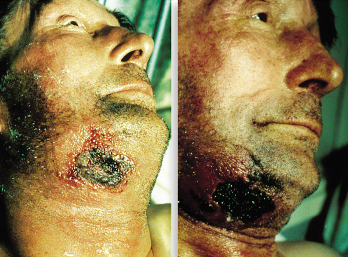
Treatment and prevention. Treated with antibiotics; pulmonary anthrax is also treated with antitoxin to neutralize the toxins. Livestock are protected with live spores and toxoid. The human vaccine, Biothrax, is a purified toxoid given to high-risk occupations and military personnel, not to anyone under 18 or over 65; a primary series with annual boosters, and a three-dose series with antibiotics after exposure. Its side effects have prompted research into alternative vaccines (see 10.15).
10.3 · Objective 1 — Bacillus cereus
| Heading | Bacillus cereus |
|---|---|
| Disease | Most commonly a foodborne illness; spores are very commonly airborne and dustborne |
| Foods | Grows in rice, potatoes and meat; the spores survive cooking and reheating (the risk is cooked food left out before refrigerating) |
| Toxins | Symptoms are due to exotoxin. Diarrheal form: a large molecular weight protein. Emetic (vomiting) form: a low molecular weight, heat-stable peptide. |
| Course and treatment | About 24 hours; no treatment |
| Other infections | Severe eye infections, progressive pneumonia, nosocomial post-surgical infections; rare clinical sepsis from contaminated injection sites traced to contaminated alcohol prep pads. Increasingly reported in the immunosuppressed; may resist beta-lactam antibiotics; new, sometimes highly pathogenic strains in the B. cereus group can be misidentified, delaying treatment |
| Welder’s anthrax | A recently recognized disease of metal workers: anthrax toxins have been identified, but they are produced by Bacillus cereus. Metal fume inhalation may predispose |
10.4 · Objective 1 — Clostridium perfringens: gas gangrene and food poisoning
| Heading | Myonecrosis (anaerobic cellulitis) / gas gangrene |
|---|---|
| Organism | Clostridium perfringens is the most common cause; C. novyi, C. septicum and other species can also cause it |
| Source | Spores in soil, human skin, intestine and vagina; about 90% of contaminated wounds carry the organism but only about 2% develop myonecrosis — host factors |
| Predisposing wounds | Surgical incisions, compound fractures, diabetic ulcers, septic abortions, puncture wounds, gunshot wounds |
| Why a mixed infection | Aerobic bacteria in the wound use up the oxygen, producing the low oxygen tension the anaerobes need to grow |
| Pathology | Not highly invasive: it requires damaged, dead tissue and anaerobic conditions. These stimulate spore germination, vegetative growth and release of exotoxins and other virulence factors. Fermentation of muscle carbohydrates forms the gas and destroys more tissue |
| Virulence factors | At least 17 toxins (names not examinable): one ruptures red blood cells and causes edema and tissue destruction, another destroys white blood cells. Enzymes: collagenase, hyaluronidase and deoxyribonuclease, which break down connective tissue and let the infection spread |
| Extent | Anaerobic cellulitis: gas and tissue damage, but it stays localized. True myonecrosis: the local infection leads to spreading tissue damage with fever, tachycardia and blackened necrotic tissue |
| Treatment | Debridement of diseased tissue (difficult if intestinal), possibly amputation, large doses of antibiotics, and hyperbaric oxygen, which floods the tissue with oxygen and inhibits the anaerobe |
| Prevention | Immediate cleansing of dirty wounds, deep wounds, compound fractures and infected incisions. No vaccine is available. |
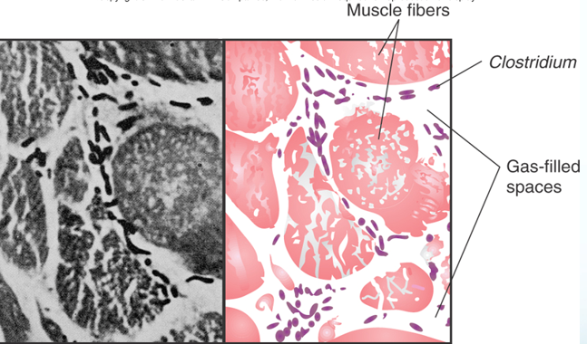
Clostridial food poisoning compared. Clostridium botulinum causes a rare but severe intoxication, usually from home-canned food (10.6). Clostridium perfringens causes a mild intestinal illness and is a very common food poisoning. In C. perfringens gastroenteritis the foods most commonly involved are meat, fish and undercooked vegetables: spores survive cooking that was not thorough enough, germinate and multiply (especially if the food is unrefrigerated), and once eaten the toxin is produced in the intestine, acting on epithelial cells — acute abdominal pain, diarrhea and nausea, with rapid recovery.
10.5 · Objective 1 — Clostridium tetani and tetanus
| Heading | Clostridium tetani |
|---|---|
| Habitat and disease | A common resident of soil and the gastrointestinal tracts of animals; causes tetanus (lockjaw), a neuromuscular disease. A strict anaerobe: low oxygen tension is needed to germinate the spores and make toxin |
| Who gets it | Most commonly older (geriatric) patients and intravenous drug users; neonates in developing countries |
| Entry | Spores usually enter through accidental puncture wounds, also burns, umbilical stumps (neonatal tetanus), frostbite and crushed body parts |
| Incubation | 4–10 days; the shorter the incubation, the more serious the disease. Delayed care, short incubation and head wounds worsen the outlook |
| Mechanism | Tetanospasmin, a neurotoxin, enters at motor nerve endings and acts on the spinal inhibitory neurons, blocking release of the inhibitory transmitters gamma-aminobutyric acid and glycine, so muscles contract uncontrollably (risus sardonicus, arching spasms) |
| Death | Most often from respiratory failure, as spasm of the breathing muscles and larynx stops effective breathing (the slide calls the toxin’s effect paralysis; tetanus causes spasm, not flaccid paralysis) |
| Treatment | Aimed at the toxemia and the infection and at maintaining homeostasis: antitoxin (human tetanus immune globulin) inactivates circulating toxin but does not counteract toxin already bound; antibiotics for the infection; muscle relaxants |
| Prevention | A vaccine; a booster every 10 years |
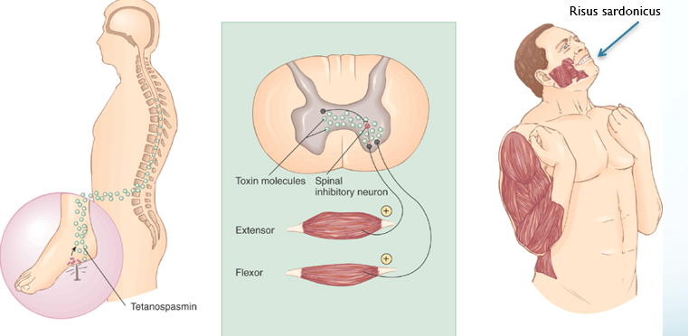
10.6 · Objective 1 — Clostridium botulinum and botulism
Botulism is an intoxication associated with inadequate food preservation. C. botulinum is a spore-forming anaerobe of soil and water. Foodborne botulism is most prevalent with low-acid, home-canned foods (green beans, corn), but meats, fish and dairy can carry it, and rarely commercial foods (the 2007 Castleberry chili sauce outbreak). Pathogenesis: spores are on the food when it is gathered; if reliable temperature and pressure are not achieved, the air is evacuated but the spores remain; anaerobic conditions favor germination and growth; the toxin, botulin, is released and carried to neuromuscular junctions, where it blocks the release of acetylcholine, needed for muscle contraction.
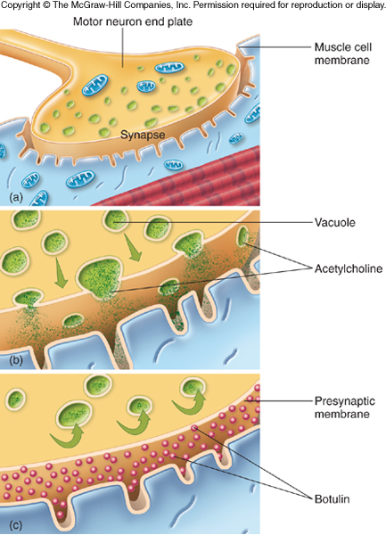
| Heading | Botulism |
|---|---|
| Symptoms | Double or blurred vision, difficulty swallowing, dizziness; sometimes nausea and vomiting; descending muscular paralysis; respiratory compromise |
| Outcome | Mortality has fallen because ventilators support breathing through the paralysis |
| Diagnosis and treatment | Find the toxin in the food, intestinal contents or feces; give antitoxin with cardiac and respiratory support |
| Prevention | Proper preserving and handling of canned foods (sodium nitrite, salt or vinegar as preservatives); discard bulging cans; boil home-bottled foods for at least 10 minutes |
| Form | How it arises |
|---|---|
| Infant botulism — the most common form (up to 80% of cases each year; 66% in the 2021 national survey) | Ingested spores germinate and release toxin in the infant gut; flaccid paralysis, “floppy baby syndrome”. Associated with honey or homemade baby food (honey pacifiers from Mexico, 2018; a contaminated baby formula outbreak, 2026) |
| Foodborne | Eating toxin made in improperly preserved, usually home-canned, food |
| Wound | Spores enter a wound and cause the food poisoning symptoms; intravenous drug users, often with black tar heroin |
| Iatrogenic | Cosmetic or therapeutic procedures using botulinum toxin cause systemic intoxication |
| Intestinal colonization | A person over age 1 harbors the toxin in the intestinal tract |
10.7 · Objective 1 — Clostridioides difficile
| Heading | Clostridioides difficile |
|---|---|
| Name | Formerly Clostridium, but differentiated by ribonucleic acid sequencing into its own genus |
| Habitat | A normal resident of the colon in low numbers; relatively non-invasive |
| Pathogenesis | Broad-spectrum antibiotics kill the other bacteria, letting it overgrow; it produces enterotoxins that damage the intestines |
| Disease | C. difficile-associated disease: antibiotic-associated (pseudomembranous) colitis, toxic megacolon, perforation of the colon. A major cause of diarrhea in hospitals; increasingly common in community-acquired diarrhea; a 2005 strain makes far more exotoxin; named one of the top three antibiotic-related threats (with carbapenem-resistant Enterobacterales and drug-resistant gonorrhea) |
| Populations at risk | Antibiotic exposure (70% of cases used antibiotics in the prior 12 weeks); gastrointestinal surgery; long stays in healthcare settings; serious underlying illness; immunocompromise; advanced age; gastric acid inhibitors such as famotidine (Pepcid) and omeprazole (Prilosec); trehalose sugar |
| Progression | Watery diarrhea, fever, loss of appetite, nausea, abdominal pain and tenderness, then the intestinal lining becomes necrotic and sloughs off as the pseudomembrane, and the wall can perforate |
| Treatment | Mild cases: fluid and electrolyte replacement and withdrawal of the antimicrobial (withdrawing the inciting antimicrobial is part of managing every case). Severe cases: oral antibiotics (see 10.15). Fecal microbiota transplant: donor cultures by colonoscope or nasogastric tube, or as capsules, restoring the normal flora (as much as 90% effective) |
| Prevention | Increased precautions to prevent spread |
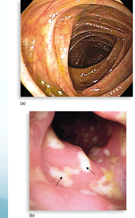
10.8 · Objective 1 — Regular non-spore-formers: Lactobacillus and Listeria
Lactobacillus (L. acidophilus, L. salivarius, L. fermentum) is beneficial normal flora of the intestinal and vaginal tracts. It produces lactic acid, acetic acid, hydrogen peroxide and other antimicrobial substances that inhibit pathogens. Antibiotic therapy can interrupt its activity and allow a superinfection by an opportunist (the recording’s example: a vaginal yeast infection).
| Heading | Listeria monocytogenes |
|---|---|
| Morphology | Non-spore-forming Gram-positive, ranging from coccobacilli to long filaments; 1–4 flagella; no capsule |
| Hardiness | Resistant to cold, heat, salt, pH extremes and bile (but killed by pasteurization and cooking) |
| Virulence | Induces phagocytosis and then replicates in the cytoplasm of host cells, which lets it avoid the humoral immune system |
| Reservoir | Primary reservoir soil and water; animal intestines |
| Food | Contaminates foods and grows during refrigeration. Most listeriosis comes from dairy products, poultry and meat (found in 12% of ground beef and 15% of chicken tested); the most recent outbreak was dairy |
| Disease | Often mild or subclinical in healthy adults (fever, diarrhea, sore throat). In immunocompromised patients, fetuses and neonates it affects the brain and meninges, with fetal loss and newborn deaths |
| Diagnosis | Culture requires a lengthy cold enrichment process; rapid tests by enzyme-linked immunosorbent assay, immunofluorescence and nucleic acid analysis |
| Prevention | Pasteurization and cooking (refrigeration does not stop it) |
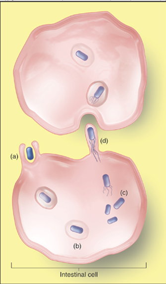
Erysipelothrix rhusiopathiae (slides 57–58; de-emphasized in the recording): a Gram-positive rod of animals and the environment whose primary reservoir is the tonsils of healthy pigs; it enters through skin abrasions and produces erysipeloid, dark red lesions on the hand; rarely septicemia or endocarditis; pigs are vaccinated.
10.9 · Objective 1 — Corynebacterium diphtheriae
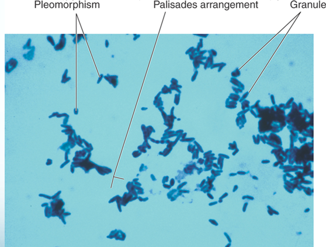
| Heading | Diphtheria |
|---|---|
| Reservoir | Healthy human carriers, so the potential for diphtheria is always present; respiratory diphtheria is rare in the United States |
| Who gets it | Non-immunized children living in crowded, unsanitary conditions |
| Transmission | Respiratory droplets from carriers or actively infected people |
| Forms | Respiratory (pharyngeal, tonsillar, laryngeal, nasal) or cutaneous (most common in the tropics) |
| Stage 1: local infection | Upper respiratory inflammation: sore throat, nausea, vomiting, swollen lymph nodes. The pseudomembrane, from solidified inflammatory fluid, is characteristic and can cause asphyxiation |
| Stage 2: toxemia | Diphtherotoxin targets the heart (myocarditis, abnormal electrocardiogram) and the nerves (muscle weakness, paralysis) |
| Diagnosis | Pseudomembrane and swelling; stain with alkaline methylene blue; conditions and history; serological assay |
| Treatment | Antitoxin in horse serum (since the 1890s), not usually given in non-respiratory cases; it does not neutralize bound toxin but neutralizes circulating toxin; antibiotics |
| Prevention | A toxoid vaccine series (at 6–8 weeks, 15 months and school age) with boosters |
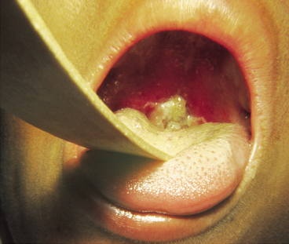
Diphtheria pseudomembrane. A gray-white pseudomembrane with swelling over the throat is indicative of respiratory diphtheria, produced by Corynebacterium diphtheriae.
10.10 · Objective 1 — Cutibacterium acnes
| Heading | Cutibacterium (formerly Propionibacterium) acnes |
|---|---|
| Name | The genus Propionibacterium is now Cutibacterium; C. acnes is the most common |
| Morphology and growth | Gram-positive rods; aerotolerant or anaerobic; slow growing (more than 6 days); nontoxigenic |
| Habitat and acne | A common resident of the pilosebaceous glands; causes acne via inflammatory mediators, not a toxin |
| Implant infections | Implicated in chronic invasive, implant, endovascular and central nervous system shunt infections. It forms a biofilm on prosthetics, raising its tolerance to antibiotics and immune defense |
| Diagnosis | Hard, because it grows so slowly: fluid from an infected site may show nothing for days, so prolonged incubation under strict anaerobic conditions is needed |
| Treatment | The hardware may need to be removed, with aggressive debridement; prolonged antibiotics (often 3–6 months) |
10.11 · Objective 1 — Mycobacteria and tuberculosis
Mycobacteria are acid-fast bacilli: Gram-positive irregular rods with mycolic acids and waxes in the wall, which is why the acid-fast stain (carbol fuchsin) needs heat to drive it in and why they Gram stain poorly. They are strict aerobes, produce catalase, form no capsules, flagella or spores, and grow slowly. Non-tuberculous mycobacteria are a problem in the immunosuppressed (the species table, slide 68, and the list on slide 90 are context only).
| Heading | Mycobacterium tuberculosis (the tubercle bacillus) |
|---|---|
| Virulence | No exotoxins or enzymes that contribute to infectiousness; complex waxes and cord factor prevent destruction by lysosomes and macrophages |
| Epidemiology | Predisposed by poor nutrition, a weakened immune system, poor access to care, lung damage and genetics; about a third of the world carries the bacillus; highest United States rate in recent immigrants. The bacillus is very resistant and is transmitted by airborne respiratory droplets; the infectious dose is about 10 cells |
| Infection versus disease | Only 5–10% of infected people develop clinical disease. Inactive (latent) tuberculosis is not contagious, can be detected by a blood or skin test, and may activate at any time. Untreated disease progresses slowly and mostly stays in the lungs |
| The three divisions of clinical tuberculosis | What happens |
|---|---|
| Primary | Bacilli are phagocytosed by alveolar macrophages and multiply inside them. After 3–4 weeks the immune system attacks, forming tubercles: granulomas of a central core of bacilli surrounded by white blood cells. If the center breaks down into necrotic caseous lesions, they gradually heal by calcification. Stimulates a cell-mediated response |
| Secondary (reactivation or reinfection) | If the patient does not recover, the bacilli reactivate; tubercles expand and drain into the bronchial tubes and upper respiratory tract: violent coughing, greenish or bloody sputum, fever, anorexia, weight loss, fatigue — “consumption”, because patients wasted away |
| Disseminated (extrapulmonary) | Bacilli spread to regional lymph nodes, kidneys, long bones, the genital tract, brain and meninges; tuberculous meningitis is grave even when treated |
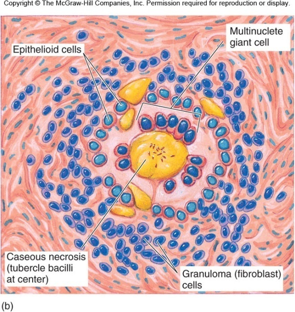
| Test | What it is |
|---|---|
| Mantoux (tuberculin) test | Intradermal purified protein derivative; read at 48–72 hours for induration, interpreted by size and the patient’s population factors (a delayed, type IV reaction) |
| QuantiFERON-TB Gold | Blood incubated with mycobacterial proteins; measures release of gamma interferon |
| False results | False positives: prior BCG (bacille Calmette-Guérin) vaccine, infection by other Mycobacterium species. False negatives: too early in infection; acquired immunodeficiency syndrome or other immunosuppression, where the patient cannot mount the response |
| Sputum and imaging | Acid-fast stain of sputum, Ziehl-Neelsen or fluorescent; laboratory cultivation; nucleic acid probes; chest X-ray for tubercles |
Management and prevention. 6–24 months of at least two drugs (a one-pill regimen combines three); preventive treatment for those at risk or latently infected. The vaccine used in other countries is the attenuated bacille Calmette-Guérin strain of Mycobacterium bovis.
10.12 · Objective 1 — Mycobacterium leprae and leprosy
| Heading | Mycobacterium leprae (Hansen’s bacillus) |
|---|---|
| Growth | A strict parasite: it has not been grown on artificial media or in tissue culture, so armadillos are used; the slowest growing of all species; it multiplies within host cells in large packets called globi |
| Disease | Leprosy (Hansen’s disease), a chronic disease beginning in the skin and mucous membranes and progressing into the nerves |
| Transmission | The mechanism is not fully verified; zoonotic transmission from armadillos is possible. Not highly virulent: health, living conditions and possibly a genetic marker influence susceptibility. Most Florida cases are in Central Florida (the I-4 corridor) |
| Course | Macrophages phagocytize the bacilli but a weakened macrophage or slow T cell response may not kill them. Incubation 2–5 years; untreated, the bacilli grow slowly in skin macrophages and the Schwann cells of peripheral nerves |
| Diagnosis | Symptoms, microscopy of lesions and history: numbness in hands and feet, loss of heat and cold sensitivity, muscle weakness, thickened earlobes, chronic stuffy nose; acid-fast bacilli in skin lesions, nasal discharge and tissue. Where care is scarce, the feather test checks skin sensation |
| Treatment | Long-term combined therapy. The slide gives about 6 months for tuberculoid leprosy and up to 2 years for lepromatous, followed by extended single-drug treatment; that is older United States practice. The current United States program uses about 12 months for tuberculoid and about 2 years for lepromatous disease, and the World Health Organization gives all three drugs for both forms (6 and 12 months) |
| Prevention | Constant surveillance of high-risk populations; bacille Calmette-Guérin has limited efficacy; a subunit vaccine is in trials |
| Tuberculoid | Lepromatous | |
|---|---|---|
| Lesions | Shallow, asymmetrical lesions; nerve damage with local loss of pain reception | Deeply nodular, severely disfiguring the face and extremities; widespread dissemination |
| T helper response | T helper 1 favors it; normal T-cell responsiveness to the bacillus | T helper 2 favors it; low or absent T-cell responsiveness |
| Organisms and infectivity | Low to undetectable organisms; low infectivity; granulomas and local inflammation | Florid growth in macrophages; high infectivity; hypergammaglobulinemia |
Lepromatous leprosy lesions. A deeply nodular infection that severely disfigures the face is lepromatous leprosy, the widely disseminated form.
T helper response in leprosy. A T helper 2 response tends to favor the lepromatous form, while T helper 1 favors the tuberculoid form.
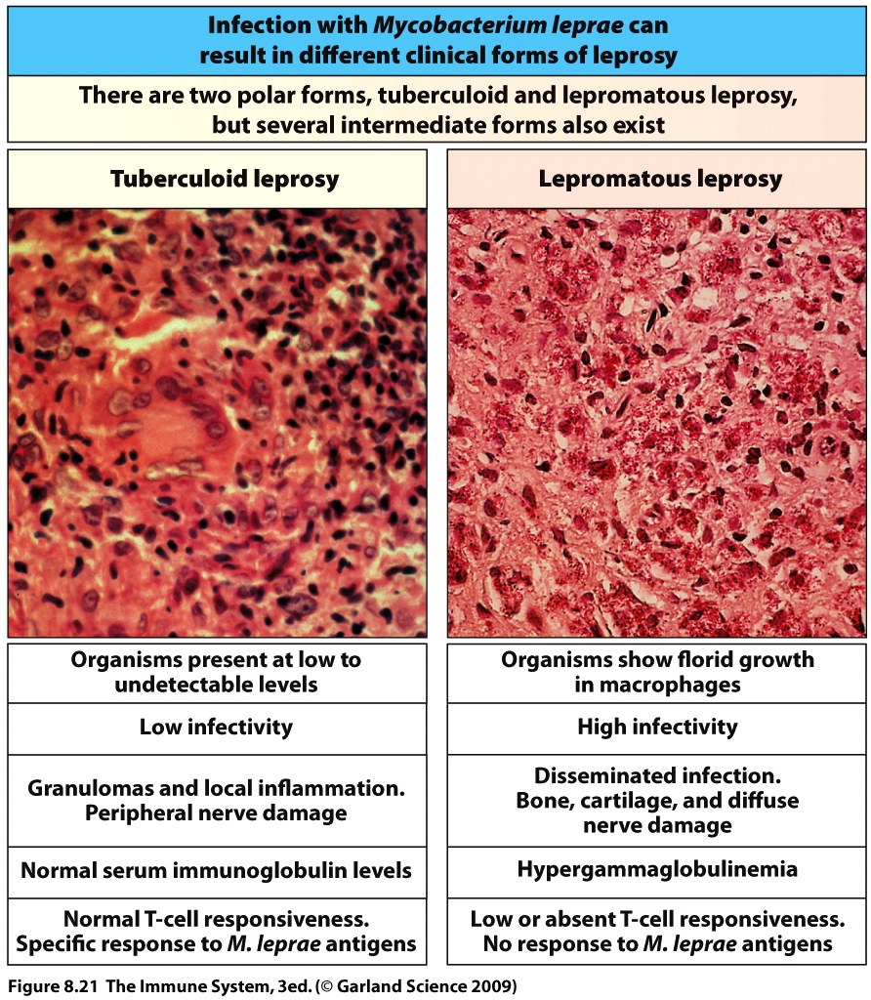
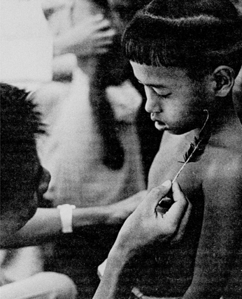
10.13 · Objective 1 — Actinomyces and Nocardia (filamentous bacilli)
The genera Actinomyces and Nocardia are nonmotile filamentous bacteria related to the mycobacteria, and may cause chronic infection of skin and soft tissue.
| Organism | Key facts |
|---|---|
| Actinomyces israelii | A normally harmless resident of the oral cavity, digestive tract and genital tract; it causes chronic, hard-to-diagnose infection when it gains access to deeper tissues. Cervicofacial disease: a complication of oral infection. Thoracic: a necrotizing lung disorder. Abdominal: a complication of a burst appendix, gunshot wounds or ulcers. Uterine: a complication of intrauterine devices. Treated surgically and with antibiotics |
| Actinomyces viscosus | Dental caries, and some cases of endocarditis |
| Nocardia (nocardiosis) | Pulmonary, cutaneous or subcutaneous infections. Pulmonary nocardiosis resembles tuberculosis, and lesions may extend through the chest wall and disseminate to the brain and kidneys. Also causes mycetoma: a granulomatous inflammatory response in the deep dermis and subcutaneous tissue |
10.14 · Objective 2 — Modes of transmission
| Organism | How humans acquire it |
|---|---|
| Bacillus anthracis | A zoonosis from spores: through a cut (cutaneous), inhaled from animal wool or soil (pulmonary), eaten in meat from an infected animal (gastrointestinal), injected with contaminated heroin (injection) |
| Bacillus cereus | Food (rice, potatoes, meat), from airborne and dustborne spores that survive cooking and reheating; contaminated alcohol prep pads at injection sites |
| Clostridium perfringens | Spores from soil, skin, intestine or vagina in deep, dirty wounds with dead tissue (compound fractures, incisions, diabetic ulcers, septic abortions, puncture and gunshot wounds); undercooked meat and fish for food poisoning |
| Clostridium tetani | Spores from soil through puncture wounds, burns, frostbite, crush injuries, and the umbilical stump in newborns |
| Clostridium botulinum | Preformed toxin in low-acid, home-canned foods; swallowed spores in infants (honey, homemade baby food); spores in wounds (black tar heroin); medical use of the toxin |
| Clostridioides difficile | Overgrowth of the patient’s own colonic resident after broad-spectrum antibiotics; spread in hospitals and healthcare settings, where precautions prevent spread |
| Listeria monocytogenes | From soil, water and animal intestines into food: dairy, poultry and meat, where it grows during refrigeration |
| Corynebacterium diphtheriae | Respiratory droplets from healthy carriers or patients |
| Cutibacterium acnes | The patient’s own skin resident, onto implants and prosthetics |
| Mycobacterium tuberculosis | Airborne respiratory droplets; an infectious dose of about 10 cells |
| Mycobacterium leprae | Not fully verified; possibly zoonotic from armadillos; prolonged close contact (recording) |
| Actinomyces israelii | The patient’s own oral, digestive or genital resident reaching deeper tissue: oral infection, burst appendix, gunshot wounds, ulcers, intrauterine devices |
| Erysipelothrix rhusiopathiae | From pigs, through skin abrasions (de-emphasized) |
10.15 · Where the slide, the recording and current practice differ
The quizzes key what is medically true. Where a slide or the recording says something else, it is listed here rather than silently changed. None of these is the basis of a quiz question except where noted.
- Tetanus mechanism (slides 29–30; recording part 1, 29:14). Slide 29 says tetanospasmin binds motor nerve endings and blocks gamma-aminobutyric acid and glycine; the recording once summarized it as blocking release at the neuromuscular junction. The toxin enters at motor nerve endings, travels back to the spinal cord and blocks the inhibitory transmitters there (slide 30). Keyed: it blocks gamma-aminobutyric acid and glycine; the neuromuscular junction is botulism.
- Irregular rods (slide 59). “All produce catalase” and “possess mycolic acids” hold for Corynebacterium, Mycobacterium and Nocardia; Actinomyces is catalase negative and lacks mycolic acids, and Cutibacterium lacks mycolic acids. Keyed only as “Corynebacterium and Mycobacterium share mycolic acids”.
- Nocardia species (slide 94). The slide gives the tuberculosis-like lung disease to N. brasiliensis; pulmonary nocardiosis is mainly the N. asteroides complex, and N. brasiliensis is the classic cause of cutaneous disease and mycetoma. Keyed at genus level. The slide’s “often treated with cephalosporins” is incomplete (trimethoprim-sulfamethoxazole is the usual first-line drug); antibiotic choice is not examined.
- Anthrax vaccine (slide 16). “Biothrax — only vaccine approved by FDA [Food and Drug Administration]” and “6 inoculations over 1.5 years” are out of date: the current Biothrax schedule is five intramuscular doses with annual boosters, and a second, adjuvanted anthrax vaccine was licensed in 2023 for use after exposure. Not keyed.
- Infant botulism treatment (slide 40). “Infectious botulism treated with penicillin” applies to wound botulism (after antitoxin and debridement); antibiotics are not recommended for infant botulism, which is treated with botulism immune globulin. Not keyed.
- C. difficile treatment (slide 48). For severe disease, current guidelines prefer oral fidaxomicin or oral vancomycin; metronidazole is no longer recommended. And where the slide says mild cases respond to fluids and withdrawal of the antimicrobial, current guidelines also treat mild cases with an oral antibiotic. Keyed only as “withdrawing the antimicrobial is part of managing even a mild case”.
- Tuberculosis regimens (slide 79). Drug-susceptible tuberculosis is standardly six months (four drugs for two months, then two for four), and the preferred latent regimens are now shorter rifamycin-based courses, with nine months of isoniazid an alternative. Only “two or more drugs for months” is keyed.
- Leprosy (slide 89). The two-drug tuberculoid and three-drug lepromatous regimens match older United States practice; the current United States program uses about 12 months and about 2 years, and the World Health Organization now gives all three drugs for both forms (6 and 12 months). Only “lepromatous is treated far longer” is keyed. The 2017 subunit vaccine step was clearance to begin clinical trials, not licensure.
- Honey. The recording advised no honey “to any child under about four, just to make sure”; the standard rule is no honey before 12 months. Not keyed.
- Listeria and heat (slide 53). “Resistant to heat” means it tolerates warmth better than most; pasteurization and cooking still kill it (slide 56). Not keyed.
- Motility (slide 7). The genus Bacillus is described as motile; B. anthracis itself is nonmotile. Not keyed.
- Myonecrosis mortality (slide 24). The recording said “if you don’t treat it, 20 to 30 percent”, a slip for “treated”; percentages are not examined.
Source: Gram Positive Bacilli of Medical Importance (Lecture 9 Dr. Webster Gram positive Bacilli.pptx), Slides 1–94, the 2 October 2026 recording, and the PAJ 5200 syllabus instructional objectives.
11 · Novel Antimicrobial Therapy
Instructional Objectives
- Compare and contrast current antibiotic use related to novel antimicrobial therapy.
- Describe fecal microbiota transplant (FMT).
- Describe phage therapy.
- Describe other alternative therapies to antibiotic use.
About 46 minutes with Dr. Fair, one recording that begins at slide 4 (the stewardship cycle), so the title, objectives and “what is driving the need” slides (1–3) have no audio. Both transcripts read and compared (Notability’s own and an independent local transcription); every quote below appears in both unless marked. She signposts little, but two remarks cut the scope.
| What was said | What it means for you |
|---|---|
| On penicillin’s history: “Don’t worry about dates.” [24:04] | No question asks for a year: not slide 8’s discovery, use and resistance dates, not the 1920s and 1930s of phage therapy, not the centuries of fecal therapy. Know the patterns instead. |
| On how vancomycin works: “don’t worry about this, I geeked out at lunchtime.” [08:18] | Vancomycin’s mechanism is not examined here. What she did say: it still works against Gram-positive infections but not Gram-negative ones, which it cannot get through the lipid-rich envelope of. |
| “They’re very, very specific as to the bacterium that they’re going to attack, and then once there are no more of that particular strain of bacteria, they die off.” [22:16] | The two properties of phages to carry into any phage question: high host specificity, and dying off once the host is gone (11.5). |
| “And remember that the diagnosis might be time consuming too, especially if the bacterium causing the infection is a slow grower, or it’s very, very fastidious.” [25:02] | Phage therapy needs the causative organism identified first; for slow growers such as Mycobacterium or Legionella that may need immunological or deoxyribonucleic acid techniques (11.5). |
| On fecal microbiota transplant: “it does seem to have a great success rate.” [30:28] The study she teaches from (the one highlighted on slide 27) gave it to patients with recurring Clostridioides difficile, 14 by nasogastric tube and 14 by colonoscopy. [33:42–34:14] | Recurrent Clostridioides difficile is the indication to know (11.4). The success figures she gave are context, not exam material. |
Things said that are not on a slide — consistent with the deck, useful as hooks:
- Reading the disk-diffusion plates (slide 9): penicillin does nothing to the Escherichia coli on the left, a Gram-negative, but works on that Staphylococcus aureus strain on the right. Leave a plate in the incubator a few days longer and colonies appear inside the clear zones: bacteria evolving resistance on the plate at a sub-lethal concentration of the drug. [06:15–07:14]
- Penicillin was found by accident: a fungus landed on a plate of staphylococci and its product killed them, and even its discoverer warned in his Nobel lecture that antibiotics are not a magic bullet. [03:56–04:48]
- Animal bites: Capnocytophaga, “the dog bite bacterium”, is her example of why a deep bite gets prophylaxis. [12:54]
- Phages were discovered around 1915–1917 by two scientists working independently, who saw something clearing zones in their bacterial colonies; “phage” means to eat. [20:34–21:05]
- A fourth route for fecal transplant: frozen oral capsules, besides nasogastric tube and colonoscopy. [32:19–32:43] (Oral capsule products exist; slide 26 lists tube, colonoscopy and enema.)
- Medical tourism is one way patients reach phage therapy that is not approved where they live; in the United States the usual routes are investigational drug status and clinical studies. [26:07–27:20]
- Parasitic worms (slide 28, about six minutes): in populations with heavy intestinal worm burdens, studies found fewer allergies, less diabetes and fewer other chronic inflammatory conditions, and one recent study also found more gut inflammation-linked cancers; whether the worms or their products are responsible is unknown. It is the hygiene hypothesis of Lecture 7. [34:45–40:06] Not quizzed: the slide’s text states only the plant-diversity finding.
- Plant essential oils have been studied as antibacterial, antifungal, antiprotozoal, antiviral and anti-inflammatory agents. [44:39]
- More antibiotics go into animal feed than to anything else. [45:31]
Slips to ignore. Introducing slide 15 she said “the non-steroidal anti-inflammatories” [14:46]; the slide says systemic corticosteroids, which are steroids. She introduced empiric therapy as “prescribing antibiotics before anything happens” with the old dental example [09:00–09:30]; that is prophylaxis. Empiric therapy, as slide 11 defines it, treats a suspected infection before the culture results are back. Of the phage gene-transfer worry she asked “what if the bacteriophage deoxyribonucleic acid is then incorporated into human cells?” [25:32]; phages infect only bacteria, and the slide’s “host cell” is the bacterium (11.7). Her ESKAPE letters began “E for E. coli” [19:18]; the usual first E is Enterococcus faecium. And penicillin’s discovery was in London (St Mary’s Hospital), not Edinburgh [03:27].
11.1 · Objective 1 — Why novel therapies: resistance and stewardship
What drives the need for novel therapies is antimicrobial and antibiotic resistance, fed by:
- Over-use of antibiotics in agriculture, in plants and in animals;
- clinically inappropriate prescriptions, which create the need for antimicrobial stewardship: education of clinicians and of patients;
- antibiotic prophylaxis, used to reduce infection risk “when possible” (11.3 lists the circumstances where it is justified);
- patient non-compliance, such as stopping a course early or leaving against medical advice.
Antibiotic resistance is a type of drug resistance that renders the antibiotic ineffective in killing or controlling bacterial growth (slide 6). It belongs to the bacteria, not to the patient: an allergy is the patient reacting to the drug; resistance is the drug no longer working on the organism.
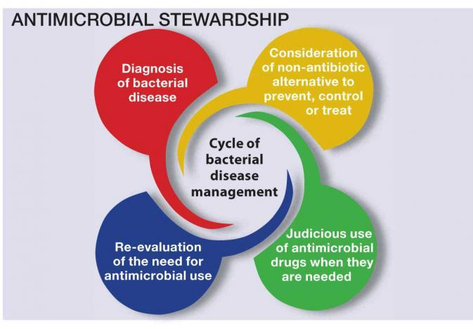
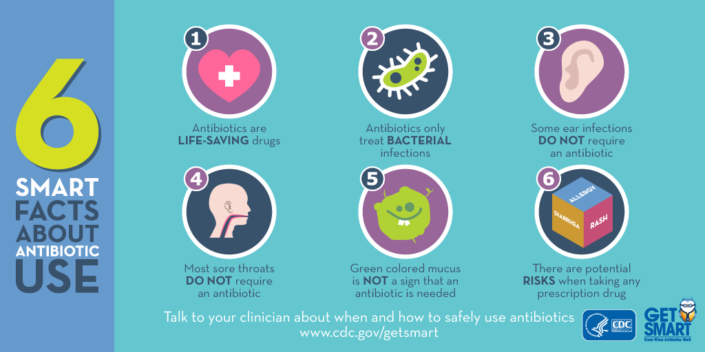
Resistance follows use. There are over 100 antibiotics on the market, and resistance is still becoming more prevalent. Slide 8 tracks three of them from discovery to widespread clinical use to the first resistance detected: penicillin, vancomycin and azithromycin each met resistant bacteria within a few years to about two decades of coming into wide use. (The exact years differ between sources; the pattern is the point.)
The “superbugs” (slide 16): methicillin-resistant and methicillin-susceptible Staphylococcus aureus (MRSA, MSSA), vancomycin-resistant and vancomycin-intermediate Staphylococcus aureus (VRSA, VISA), toxigenic Escherichia coli, Clostridioides difficile, Neisseria gonorrhoeae, Mycobacterium tuberculosis, carbapenem-resistant Klebsiella pneumoniae, vancomycin-resistant Enterococcus and Pseudomonas. The slide’s notes add the ESKAPE pathogens, which top the lists of organisms causing nosocomial (hospital-acquired) infections.
11.2 · Objective 1 — How antibiotics are chosen: testing, antibiograms, empiric therapy
Disk diffusion (Kirby-Bauer). White paper disks treated with antibiotics are placed on an agar plate inoculated with the organism. The antibiotic diffuses out, and the circular zone of inhibition around each disk shows how effective, or how ineffective, that antimicrobial is against the organism: a wide clear ring means growth was stopped; growth up to the disk means the drug had little effect.
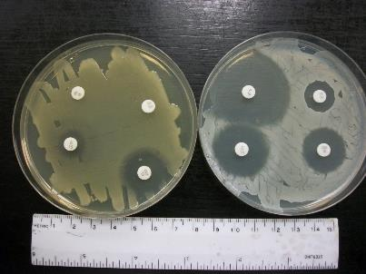
Antibiograms are profiles of antimicrobial susceptibility, by percentage, used to guide empiric therapy. On the slide’s example, methicillin-resistant Staphylococcus aureus is far less often susceptible than methicillin-susceptible strains to ciprofloxacin and erythromycin, while both are fully susceptible to vancomycin. The limitations:
- the minimum inhibitory concentration is not included;
- the patient’s risk factors are not considered;
- there are no data on synergy when antimicrobials are used in combination;
- the data may apply only to a single hospital within a health system.
Empiric therapy means antibiotics prescribed before cultures are confirmed or other diagnostic results are available. It is common in human and veterinary medicine, especially for critically ill or emergent patients, is based on prior clinical experience and/or antibiograms, and is then adjusted once results arrive (for example, from intravenous to oral). “Why empirical therapy? Because it works!” (Klastersky, 2009).
11.3 · Objective 1 — Prophylaxis and the costs of antimicrobials
Special circumstances where antimicrobials are given to prevent rather than treat (slides 12–13):
| Circumstance | Why, and the examples |
|---|---|
| Foreign body-associated infections | Prosthetic implants and devices are prone to microbial biofilm formation. |
| Presurgical prophylaxis | Reduces the incidence of post-operative surgical site infections. |
| Immunocompromised patients | Human immunodeficiency virus infection and acquired immunodeficiency syndrome, cancer chemotherapy, immunosuppressive therapy for organ transplant. |
| Contacts of an infected patient | Prevents transmission to susceptible contacts, for example tuberculosis, meningitis or pertussis. |
| Dental and other invasive procedures | Many dentists now limit it to a few high-risk scenarios, such as prosthetic heart valves or a history of endocarditis. |
| High-risk traumatic injuries | For example animal bites or penetrating brain injury. |
Adverse effects of antimicrobial drugs come in two kinds (slide 14):
| Direct (on the patient, from the drug) | Indirect (through other microbes) |
|---|---|
| Allergy, possibly life-threatening; acute or chronic toxicity (such as kidney or liver toxicity); drug-drug interactions; therapeutic failure. | Effects on the commensal microflora of humans or animals; Clostridioides difficile infection; a greater chance of infection with drug-resistant pathogens; effects on environmental microflora, such as antibiotics in the food or water supply. |
The indirect column is the bridge to objectives 2–4: Clostridioides difficile infection is what happens when an antibiotic clears the commensal flora, and fecal microbiota transplant is the therapy that puts that flora back.
11.4 · Objective 2 — Fecal microbiota transplant
Fecal microbiota transplant gives a patient screened donor stool to realign their gastrointestinal microflora, “the power of poop”.
- It is old. It has been used for centuries in human and animal medicine; old Chinese texts give recipes for “yellow soup” (Ge Hong in the 4th century and Li Shizhen in the 16th are the sources usually cited).
- Its researched use is Clostridioides difficile infection, about 500,000 cases a year and about 30,000 deaths in the United States alone. Preventing recurrent Clostridioides difficile infection is its established use (see 11.7 on the slide’s other conditions).
- How it is given: by nasogastric tube, colonoscopy or enema, using screened donor stool.
- Stool banks make it more accessible. Donor screening is similar to blood bank screening, to reduce the risk from blood-borne and other pathogens: human immunodeficiency virus, hepatitis A, B and C, syphilis, Clostridioides difficile, and the parasites Giardia and Cryptosporidium.
- Veterinarians call it “transfaunation”, and it works for animals too.
11.5 · Objective 3 — Phage therapy
Bacteriophages (“phages”) are very small viruses that specifically attack bacteria and no other types of cells. Like all viruses they carry deoxyribonucleic acid or ribonucleic acid, and they replicate by a lytic or a lysogenic life cycle. For therapy you need lytic phages with deoxyribonucleic acid: phages that destroy the bacterium rather than settling into its genome. “The enemy of my enemy is my friend”: the bacteria’s own enemies, put to work for the patient.
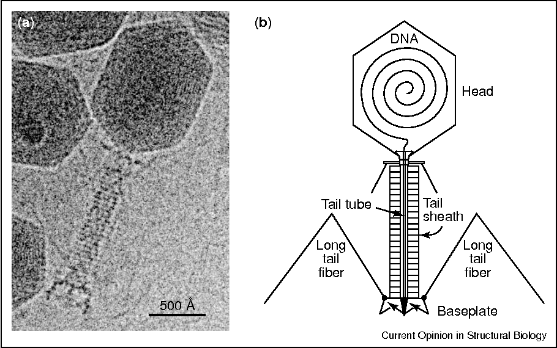
Why it is an option now. Phages exhibit high host specificity, so they could attack highly antibiotic-resistant clinical strains. The idea is not new: it was explored in eastern Europe in the 1920s and 1930s and abandoned in the West with the emergence of antibiotic therapy (penicillin became clinically available in the 1940s). One obstacle today is translating the original publications, which are in non-English journals.
| Potential benefits (slide 22) | The bad news (slide 21) |
|---|---|
|
|
Outside the clinic, phage solutions have also been used to reduce bacterial contamination of food.
11.6 · Objective 4 — Other alternatives to antibiotics
| Option | What it does |
|---|---|
| Systemic corticosteroids | Decrease the host’s inflammatory response; they do not kill the pathogen. |
| Intravenous immunoglobulin G and convalescent plasma | Give ready-made antibodies from donors; convalescent plasma comes from people who have recovered from the infection. |
| Prebiotics | Fiber-rich foods that provide nutrients to the gut microflora. |
| Probiotics | The beneficial organisms themselves: Lactobacillus (a bacterium) and Saccharomyces (a fungus, a yeast), often found in fermented foods. |
| A varied plant diet | From the crowd-sourced American Gut project: the more diverse your plant intake, the more diverse your gut microbiota (slide 28). |
| Plant essential oils | Show antibacterial activity in vitro; better experimental design is needed to test what that means for patients. |
Why herbs and spices? The hypotheses (slide 31): herbs and spices season food across cultures; some kill bacteria and fungi, especially those that spoil food; they may provide macro- and micronutrients; they enhance taste and smell; and spice use should be heaviest where a hot climate goes with rapid food spoilage. The ones named (slide 32) include garlic, onion, allspice, oregano, thyme, cinnamon, tarragon, cumin, coriander, basil, ginger, cloves, lemongrass, bay leaf, capsicums, rosemary, marjoram, mustard, caraway, mint, parsley, cardamom and eucalyptus. “Let your food be your medicine, and your medicine be your food” (Hippocrates).
11.7 · Where the slide, the recording and current practice differ
The quizzes key what is medically true. Where a slide says something else, it is listed here rather than silently changed. None of these is the basis of a quiz question except where noted.
- “Transduction” (slide 17 notes). The notes call a phage injecting its own nucleic acid into a bacterium “transduction”. Injecting its genome is simply how a phage infects; transduction is a phage carrying bacterial genes from one bacterium to another. That second process is the real “what if the phage transfers deoxyribonucleic acid to its host cell?” worry of slide 21, since it can move genes such as toxin or resistance genes. Keyed as gene transfer.
- What fecal microbiota transplant is proven for (slide 24). The slide says it has been “a successful option” for irritable bowel syndrome, ulcerative colitis and chronic constipation. Its established use, and the only one with approved products, is preventing recurrent Clostridioides difficile infection; for the other conditions the evidence is limited and mixed. Keyed as Clostridioides difficile only.
- “Serologic testing” of donor stool (slide 26). Serology is a blood test. Donors are screened with blood tests (human immunodeficiency virus, hepatitis, syphilis) and stool tests (Clostridioides difficile, Giardia, Cryptosporidium). Keyed as “screened for”, without the test type.
- “No new major antibiotic in 30 years” (slide 6). Out of date: new agents, including new classes, have been approved since. The infographic’s percentages are not asked either.
- The resistance timeline (slide 8). Dates for discovery, widespread use and first resistance differ between sources (a bacterial enzyme that destroys penicillin was described in 1940, before the drug was in wide use). Keyed only as the pattern: resistance followed widespread use within years.
Source: Novel Antimicrobial Therapies (PAJ5200.Novel Antimicrobial Therapies-2.pptx), Slides 1–34, the 9 October 2026 recording, and the PAJ 5200 syllabus instructional objectives.
12 · Epidemiology
Instructional Objectives
- Distinguish between descriptive and analytic epidemiology.
- Describe the specific uses for epidemiology training.
- Describe key events in the history and development of epidemiology, including genomic epidemiology
- Identify common sources of epidemiologic data.
- Define the primary components of public health surveillance.
- Define reportable disease
- Describe selected measures of morbidity and mortality.
- Distinguish between the terms association and causation.
- Define the terms endemic, epidemic, pandemic, sporadic, and herd immunity.
- Compare and contrast applications of epidemiology, including policy development, outbreak investigation, social and behavioral issues, the environment and occupational health
About 74 minutes of lecture with Dr. Webster, in three parts (the recording starts a few slides in, at the uses of epidemiology), then a fourth part that is her review for Exam 2: Lectures 7 and 10, and at the end this lecture’s objectives [part 4, 19:38]. Both transcripts read and compared (Notability’s own and an independent local transcription); every quote below appears in both. Every factual claim was checked against the deck, and where the two differ the slide is what this guide teaches.
Like Lecture 7, this lecture signposts, in her soft wording (“you should know”, “you need to know”, “you should be able to”), and it ends with her own list of what to study.
| What was said | What it means for you |
|---|---|
| “You need to know the basic components of descriptive epidemiology versus analytic epidemiology.” [part 2, 6:51] | 12.1: descriptive = person, place, time; analytic = host, agent, environment, and what sits under each. |
| “Go back and look at the history and the people who are important in history.” [part 4, 19:44] | 12.3: Hippocrates, John Graunt, William Farr (father of modern vital statistics), John Snow (father of field epidemiology), and what each did. |
| “You need to know genomic epidemiology.” [part 3, 24:46] | 12.3 and 12.10: sequencing pathogens to link cases to one outbreak, find transmission links and sources, and map spread. |
| “You should know the difference between incidence and prevalence.” [part 1, 30:33] | 12.7: incidence counts new cases in a period (the speedometer); prevalence counts all cases present (the odometer), and depends on incidence and how long the disease lasts. |
| “If I were to… give you a scenario that gave you some information, you should be able to tell me whether something is going to be more of an association or a causation.” [part 3, 11:10] | 12.8: be ready to class a described study. A relationship alone is an association; causation is inferred when Hill’s criteria are met. |
| “These different kinds of epidemics can be graphed and show different patterns, which you should be able to identify.” [part 3, 13:47] | 12.9: read an epidemic curve as point, continuous, propagated, mixed or other (the five curves are reproduced there). |
| Her closing list: “public health surveillance, the different kinds of surveillances… the different measures of morbidity and mortality, association and causation, the Hill’s criteria, and then know that endemic, epidemic, pandemic, sporadic, herd immunity, and then the fact that epidemiology gives us the evidence for policy development.” [part 4, 19:52] | Seven of the ten objectives are on it by name (not the uses of training, data sources or reportable diseases); epidemiology’s main contribution to policy is evidence (12.10). |
| “This particular graph, which I’m not asking you to memorize” [part 1, 11:25] | Slide 13’s life-course picture of factors behind long-term health. Not asked. |
| “Here’s a list I’m absolutely not requiring you to pay attention to” [part 1, 27:48] | Slide 23, the full list of notifiable diseases. Know what makes a disease reportable and how the groups are reported (slides 21–22), not the list. |
| “I don’t want you to memorize this list.” [part 1, 29:10] | Slide 25, the uses of surveillance data. Know that surveillance data are used; the list itself is not asked. |
Things said that are not on a slide — consistent with the deck, useful as hooks, and each present in both transcripts:
- Passive versus sentinel: in passive surveillance anyone may send reports, with no instruction on how to collect or submit them; sentinel providers are chosen to represent the population and told exactly how to collect and send the data, so the data are more accurate. [part 1, 24:07–24:58]
- Syndromic surveillance (counting diarrhea rather than confirmed cholera) is “maybe the best that they can do” in developing countries; a cluster of a syndrome then prompts targeted testing to find the actual agent. [part 1, 21:35–23:41]
- Herd immunity protects people who cannot be vaccinated (a young child, an older person, someone with an immune disorder); her current example is measles, as vaccination falls. [part 3, 18:04–18:47]
- Legionnaires’ disease: the organism was traced to the hotel’s air-conditioning system, so walking through the lobby meant breathing it in; the attendees, mostly older smokers, were especially susceptible. [part 3, 23:13–23:37] (Slide 68’s faucet and air-conditioner picture is otherwise unexplained in the deck.)
12.1 · Objective 1 — Descriptive and analytic epidemiology
The two triads and what sits under each: person, place and time for descriptive; host, agent and environment for analytic.
| Descriptive epidemiology | Analytic epidemiology | |
|---|---|---|
| What it does | Examines the distribution of a disease in a population and observes the basic features of that distribution in terms of time, place and person | Tests a specific hypothesis about the relationship of a disease to a specific cause, by relating the exposure of interest to the outcome of interest |
| What it yields | Formulates hypotheses and examines associations | A cause-effect relationship |
| Typical designs | The community health survey (also called a cross-sectional or descriptive study) | Cohort, case-control and experimental designs |
| Its triad | Person, place, time | Host, agent, environment |
Descriptive comes first. Before you undertake any analytic study you have to understand the descriptive components. The basic triad of descriptive epidemiology is person, place and time:
- Person: age, gender, socio-economic status (education, occupation, income), marital status, ethnicity/race/genetic profile, behavior and habits.
- Person characteristics. They include age, gender, socioeconomic status (education, occupation, income), marital status, ethnicity or genetic profile, and behavior.
- Place: geographically restricted or widespread (outbreak, epidemic, pandemic)? off-shore (a tsunami)? climate effects (temperature, humidity); urban, suburban-squatter or rural; relation to environmental exposure (water, food supply); multiple clusters or one?
- Time: changing or stable? clustered (epidemic) or evenly distributed (endemic)? Time trends: point source (localized and stationary), propagated (reflects a spreading infection; may be extended), seasonal, and secular (occurrence over a prolonged period, usually years).
- Secular trend. A secular trend is the occurrence of disease over a prolonged period, usually years.
The basic triad of analytic epidemiology is the three phenomena it assesses: host, environment and agent.
| Agents | Host factors | Environment |
|---|---|---|
| Biological (microorganisms); physical (temperature, radiation, trauma); chemical (acids, alkalis, poisons, tobacco); environmental (nutrients in the diet, allergens); psychological experiences | Genetic endowment; immunologic status; personal characteristics; personal behavior; definitive versus intermediate host (in vector-borne diseases) | Living conditions (housing, crowding, water supply, refuse, sewage); atmosphere and climate; modes of communication, the phenomena that bring host and agent together, such as a vector, vehicle or reservoir |
John Snow’s cholera investigations show both kinds.
- Descriptive (the outbreak in the Golden Square area of London): he marked where people with cholera lived and worked on a map, now called a spot map, and marked the water pumps. More cases were found near Pump A than near B or C; residents said they preferred Pump A; few cases occurred two blocks to the east, where a brewery with its own deep well let employees take their water (and a daily allotment of malt liquor). Households with cholera all drew from Pump A, the common factor. Officials were notified, the pump was closed and the outbreak ended.
- Analytic (re-examining data from different outbreaks): the districts with the highest death rates were served by two water companies, Lambeth and Southwark and Vauxhall, both drawing from the Thames downstream from London. Lambeth then moved its intake upstream. Snow developed the hypothesis that water from below London was the source, and tested it by identifying the water source for every house with a cholera death. Houses supplied by Southwark and Vauxhall alone had a cholera death rate of 4.2 per 1,000 people; houses supplied by Lambeth alone, 0.5 per 1,000 (Table 1.2, slide 42).
- The point: without any knowledge of microbes, he established that water could transmit cholera and that epidemiological information can direct prompt public health action. Koch’s postulates, which established cause and effect between microbes and disease, were published later (1884).
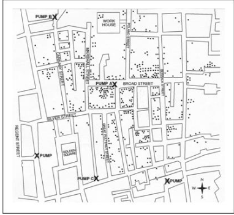
Noncommunicable disease uses the same descriptive groundwork (slide 70): define the population of interest; conceptualize and create measures of exposures and health indicators; take a sample of the population; estimate measures of association between exposures and health indicators; rigorously evaluate whether the association suggests a causal one; assess the evidence for causes working together; and assess whether the result is externally valid for other populations.
12.2 · Objective 2 — What epidemiology is, and the uses of epidemiologic training
The word: epi = upon, demos = people, ology = science: “the science which deals with what falls upon people.” It is a bridge between the biomedical, social and behavioral sciences.
The 5 W’s of epidemiology, a mnemonic for the fundamental questions of any epidemiological study:
| W | Asks about |
|---|---|
| What | The health event or diagnosis |
| Who | The person or population involved |
| Where | The location of the event |
| When | The time period of the event |
| Why | The causes, risk factors and modes of transmission |
The five W's. What is the health event or diagnosis; Who is the person or population; Where is the location; When is the time period; Why covers causes, risks and transmission.
Where epidemiology has impact (slide 6), each for its own reason: public health (the emphasis on disease prevention); clinical medicine (disease classification and diagnosis); pathophysiology (understanding basic biological mechanisms in disease); biostatistics (quantifying disease frequency and its relationships to antecedents); social sciences (the social context in which disease occurs and presents).
Uses of epidemiological training (slides 7–8):
- Outbreak response: identifying, reporting and investigating outbreaks in a timely manner.
- Public health surveillance: setting up, managing and evaluating surveillance systems.
- Public health communication: developing and delivering it.
- Disease prioritization: evaluating and prioritizing diseases of concern, including describing the clinical picture: who gets the disease, who dies from it, and what its outcome is.
- Training and mentoring health professionals.
- Experimental epidemiology: developing a hypothesis for a health concern and designing an experimental model to test it.
- Program evaluation and management: evaluating prevention and intervention programs (for example vaccine and clinical trials) and managing their staff and resources.
12.3 · Objective 3 — Key events in its history, including genomic epidemiology
Also on her closing list: “the people who are important in history” — know who did what.
Epidemiology is relatively new as a formal scientific discipline, but “counting” health and disease goes back centuries; many of today’s design and analytic techniques arose in response to health concerns of the 19th and 20th centuries.
| Who or when | What they contributed |
|---|---|
| Hippocrates (about 400 BC) | Explained disease from a rational rather than spiritual standpoint: environmental and host factors |
| John Graunt (17th century) | Pioneered tabulating population health and mortality in rates, ratios and proportions; noted differences between males and females, high infant mortality, urban/rural differences and seasonal variation |
| William Farr (1800s) | Systematically collected and analyzed Britain’s mortality statistics: the father of modern vital statistics. Developed life-table approaches, and reported his statistics to the authorities and the public |
| John Snow (mid 1800s) | An anesthesiologist who used epidemiologic approaches on the London cholera epidemic: the father of field epidemiology. Developed and applied basic measures of disease frequency; his studies combine descriptive and analytic epidemiology (12.1) |
| Mid to late 1800s | Focus on acute infectious diseases |
| 1930s and 1940s | Methods extended to noninfectious diseases; after World War II, more development of research methods and theory; then health outcomes tied to behaviors and attitudes |
| Doll and Hill (1950) | Smoking and lung cancer |
| Framingham Heart Study (began 1948) | A multigenerational study to identify common factors contributing to cardiovascular disease |
| 1960s and 1970s | Epidemiological methods applied to eradicate smallpox worldwide |
| 1980s | Extended to studies of injuries and violence |
| 1990s, accelerating after 2001 | The deliberate spread of disease: biologic warfare and bioterrorism |
| Continuing | New infectious agents (Ebola virus, human immunodeficiency virus, severe acute respiratory syndrome, COVID) and changed ones (drug-resistant organisms such as tuberculosis, and variations of influenza) |
Genomic epidemiology, one of the most important developments in the field, is the process of monitoring the genetic makeup of the pathogens that cause disease, made possible by advances in sequencing. It is one of the most reliable tools in outbreak investigation:
- early outbreak detection: if the pathogens from different cases are closely related, the cases may be part of the same outbreak;
- Genomic epidemiology and outbreaks. When pathogens from cases in different locations are closely related genetically, the cases may belong to one outbreak; genomic epidemiology links them.
- identifying transmission links (a common pathway of spread);
- identifying or confirming sources of exposure;
- understanding disease location and spatial distribution, to link cases or outbreaks in different locations and confirm more definitively that they are part of the same outbreak.
12.4 · Objective 4 — Common sources of epidemiologic data
| Source | Method | Example |
|---|---|---|
| Individual persons | Questionnaire; survey | A foodborne illness outbreak; the National Health and Nutrition Examination Survey of the CDC (Centers for Disease Control and Prevention): health data on United States residents |
| Environment | Samples from the environment (river water, soil); sensors for environmental changes | Water collected from area streams and checked for chemical pollutants; air-quality ratings |
| Health care providers | Notifications to the health department when cases of certain diseases are observed | Reporting cases of meningitis to the health department |
| Nonhealth-related sources (financial, legal) | Sales records; court records | Cigarette sales; intoxicated-driver arrests |
12.5 · Objective 5 — Public health surveillance
Recording: the uses-of-surveillance-data table (slide 25) is not to be memorized (“I don’t want you to memorize this list”); her closing list asks for “the different kinds of surveillances” — passive, active, sentinel and syndromic.
Public health surveillance is a tool that systematically collects, analyzes and interprets data to facilitate the prevention and control of disease. It measures what is going on in the population, the need for interventions and the effects of interventions; it informs decision making; and how it is done may differ between developed and developing nations. It must have a clear objective that includes how the data will be collected, consolidated and analyzed.
| Critical characteristic | Why it matters |
|---|---|
| Timeliness | To implement effective control measures |
| Representation | To give an accurate picture of the temporal trend of the disease |
| Sensitivity | To identify individual persons with the disease, so they can be treated, quarantined or otherwise controlled |
| Specificity | To exclude persons not having the disease |
Purpose of surveillance. Surveillance systematically collects, analyzes and interprets data to facilitate the prevention and control of disease, and informs decisions about health.
Why timeliness matters. Timely surveillance lets effective control measures be put in place in time.
Surveillance objective. You must be able to identify a clear objective for the surveillance, including how the data will be collected, consolidated and analyzed.
Considerations when planning surveillance (slides 16–17): the health-related event and its case definition; the purpose and objectives; the planned uses of the data; the legal authority for collecting it; which organization conducts it and with which other health information systems; the data sources and collection method; the frequency (continuous or intermittent); the population under surveillance; how data are processed and managed; how confidentiality is maintained; how and by whom the data are analyzed; and how the information is disseminated, to everyone who needs it including the medical and public health communities and policymakers.
The vocabulary (slides 19–20):
- Indicator: a measurable factor used to estimate the size of a health problem and to measure the effects of interventions.
- Case surveillance is foundational to public health practice. It begins with local and state health departments collecting data about a case or person with a disease or condition that poses a serious health threat (infectious diseases, foodborne outbreaks, and noninfectious conditions such as lead poisoning); if the condition is notifiable, it is then reported to the CDC (Centers for Disease Control and Prevention).
| Type | How it works | Strengths and weaknesses |
|---|---|---|
| Active | Staff regularly contact health care providers for data | Most accurate, but most expensive; often used for specific purposes, such as during outbreaks or seasonal events |
| Passive | Relies on reports submitted by health care facilities and providers (includes routine health information systems) | Most common, but less comprehensive; data quality is hard to control and it may lead to under-reporting |
| Sentinel | A prearranged group of reporting sources, normally health care providers, agrees to report all cases of specific conditions | A smaller representative group tracking on behalf of a much larger population; tries to get ahead of an outbreak |
| Syndromic | Active or passive; case definitions based entirely on clinical features (diarrhea instead of cholera, for example) | The most frequently found system in developing countries |
| Social media | A source of data | Can be valuable for monitoring disease outbreaks and mental health issues |
Uses of surveillance data (slide 25), by how quickly they are used:
| Immediate detection of | Periodic dissemination for | Stored information for |
|---|---|---|
| Epidemics; newly emerging health problems; changes in health practices; changes in antibiotic resistance; changes in the distribution of the population at risk | Estimating the magnitude of a health problem, including its cost; assessing control activities; setting research priorities; determining risk factors; facilitating planning; monitoring risk factors and changes in health practices; documenting the distribution and spread of disease and injury | Describing the natural history of diseases; facilitating epidemiologic and laboratory research; validating the use of preliminary data; setting research priorities; documenting the distribution and spread of disease and injury |
12.6 · Objective 6 — Reportable (notifiable) diseases
Recording: the full notifiable-disease list (slide 23) is “a list I’m absolutely not requiring you to pay attention to.” The definition and the reporting groups below are what count.
A reportable (notifiable) disease is any disease that is required by law to be reported to government authorities. Diseases are made reportable because they are of public interest by reason of their contagiousness, severity or frequency. They include infectious diseases, bioterrorism agents, sexually transmitted infections and noninfectious conditions. Collecting the data lets authorities monitor the disease and gives early warning of potential outbreaks. In the United States, collection is done through the CDC’s National Notifiable Diseases Surveillance System, and a list of notifiable diseases is produced every year.
| Group of reportable disease | Examples |
|---|---|
| Mandatory written report | Gonorrhea, salmonellosis |
| Mandatory report by telephone | Rubeola (measles), pertussis |
| Report of the total number of cases | Chickenpox, influenza |
| Cancer | Reported to state cancer registries |
Reportable disease. A reportable (notifiable) disease is one required by law to be reported to government authorities.
The national list (slide 23) runs from anthrax to Zika virus and shows how wide “notifiable” is: infections (botulism, cholera, Lyme disease, measles, syphilis, tuberculosis), resistant organisms (carbapenemase-producing carbapenem-resistant Enterobacteriaceae; vancomycin-intermediate and vancomycin-resistant Staphylococcus aureus), outbreaks as such (foodborne and waterborne disease outbreaks), and noninfectious conditions such as elevated blood lead levels, carbon monoxide poisoning, acute pesticide-related illness and silicosis. The CDC publishes weekly tables of notifiable disease cases by reporting area (slide 24).
12.7 · Objective 7 — Measures of morbidity and mortality
Incidence counts new cases during a period; prevalence counts all cases present. Prevalence rises with incidence and with how long the disease lasts.
Both are measures of the disease burden in a population. Morbidity is having a disease or a symptom of disease: the level of disease in a population, sometimes used to determine the risk of a disease. It is measured by incidence and prevalence. Mortality is the death rate, the number of deaths in a group of people at a particular time; it may be given by age, sex or cause.
| Incidence | Prevalence | |
|---|---|---|
| Definition | The proportion or rate of persons who develop a condition during a particular time period | The proportion of persons who have a condition at or during a particular time period |
| Image | The speedometer (how fast new cases arrive) | The odometer (how many have accumulated) |
| Numerator | New cases that occurred during the time period | All cases present during the time period |
- Prevalence depends on both incidence and the duration of illness. High prevalence may reflect high incidence, prolonged survival without cure, or both; low prevalence may mean low incidence, a rapidly fatal process, or rapid recovery.
- Prevalence and survival. Prevalence depends on incidence and duration: prolonged survival without cure lengthens duration, so prevalence rises even with unchanged incidence.
- Prevalence rather than incidence is often measured for chronic diseases such as diabetes or osteoarthritis, which last a long time and whose onset is hard to date.
- Telling them apart in a formula (slide 28): the number of women in a town reported with heart disease in a health survey, over the number of women residents, is a prevalence; the number newly diagnosed in one year, over the women residents at mid-year, is an incidence.
| Mortality rate | Counts |
|---|---|
| Crude | Deaths from all causes in a population in a given time period |
| Cause-specific | Deaths from a specific cause |
| Age-specific | Deaths in a specific age group |
| Infant | Infant deaths; used to compare health status between countries. A concerning statistic for the United States, which ranks well below most other developed nations, with considerable disparities by race and socioeconomic status |
| Maternal | Mortality associated with pregnancy; slide 30 charts it by race and Hispanic origin for 2022 and 2023, highest for non-Hispanic Black women |
Case fatality rate (slide 59) = deaths / total cases. Early in an outbreak it may be over-estimated, because the sickest cases are the ones hospitalized and counted; later it may be under-estimated as testing finds more mild cases, and a long time to resolution can make it look better than it is.
Case fatality rate. The case fatality rate is deaths divided by total cases of the disease.
12.8 · Objective 8 — Association and causation
Expect a described study to classify. A relationship between an exposure and a disease is an association; causation is inferred from association plus Hill’s criteria (also on her closing list).
- Epidemiology does not determine the cause of a disease in a given individual. It determines the relationship, or association, between an exposure and the frequency of disease in populations. We infer causation from association and other factors.
- Association: an identifiable relationship between an exposure and a disease. It implies that the exposure might cause the disease. Exposures associated with a difference in disease risk are often called risk factors. Most often, in public health, interventions are designed on the basis of associations.
- Causation: implies a true mechanism leading from exposure to disease. Finding an association does not make it causal.
The pyramid of associations (slide 44), from its broad base to its narrow top: chance, spurious/artifact, confounded, non-causal, and at the apex causal.
Models of causation (slide 45): a cause is an event or condition that plays a role in producing an occurrence of a disease. It is not generally a single factor: most diseases come from an interplay of factors, from exposure plus additional factors to a whole web.
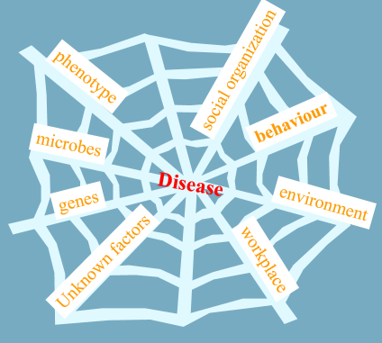
Hill’s criteria for causal inference (slides 46–52):
| Criterion | What it asks |
|---|---|
| Consistency of findings | Shown in multiple studies, across different populations, in differing circumstances, with different study designs |
| Strength of association | A strong association is less likely to be caused by chance or bias; it is one in which the relative risk is either very high or very low |
| Biological gradient (dose-response) | Changes in exposure are related to a trend in relative risk; one of the most reliable indicators of causality |
| Temporal sequence | The exposure must precede the disease; in diseases with latency periods, it must precede the latent period; chronic diseases often need long-term exposure |
| Biological plausibility and coherence | The proposed mechanism should be biologically plausible and must not contradict what is known about the natural history and biology of the disease; but the relationship may be indirect, data may not yet support the mechanism directly, and existing understanding may need reinterpreting in the face of new findings |
| Specificity of association | An exposure leads to a single or characteristic effect, or affects people with a specific susceptibility; easier to support causation when associations are specific, but many exposures cause multiple diseases |
A dose-response example (slide 49): standardized mortality ratios for lung cancer rise with cigarettes smoked per day in each of three studies.
| Dose (cigarettes a day) | Study 1 | Study 2 | Study 3 |
|---|---|---|---|
| Fewer than 10 | 1.3 | 1.8 | 1.4 |
| 10–20 | 2.8 | 2.3 | 2.4 |
| More than 40 | 4.7 | 3.7 | 6.3 |
The prevailing wisdom (slide 53): most judgments of cause and effect are tentative, and open to change with new evidence.
12.9 · Objective 9 — Endemic, epidemic, pandemic, sporadic, herd immunity
Read each curve below by its shape: one sharp peak (point), cases over the exposure period (continuous), successive waves (propagated), a common source then person to person (mixed).
| Term | Definition |
|---|---|
| Endemic | Diseases found at chronically low levels in a population |
| Sporadic | Diseases that occur at irregular intervals, or as isolated incidents |
| Epidemic | Diseases occurring in excess of what might be expected in a population, or as an uncontrolled spread in a community |
| Pandemic | World-wide epidemics |
Pandemic. A pandemic is a worldwide epidemic.
Types of epidemics (slides 55–58):
- Common source: a group exposed to the same source. Point: the exposure is brief, within one incubation period. Continuous: exposure over a longer time. Intermittent.
- Propagated: person-to-person transmission.
- Mixed: may start as a common source and then be propagated.
- Other: often zoonotic or vector-borne.
Reading the epidemic curves. Each figure plots cases by date of onset.
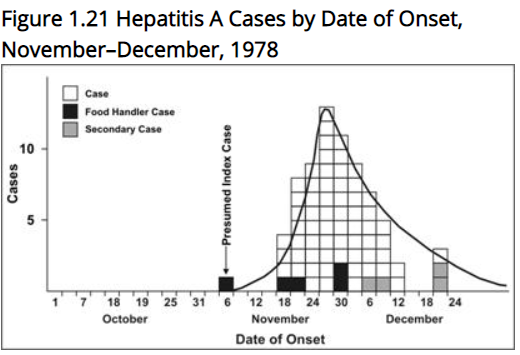
Case fatality rate over an outbreak. It may be overestimated at first, when the sickest cases are hospitalized, and underestimated as testing of mild cases expands; a long time to resolution can also make it look better than it is.
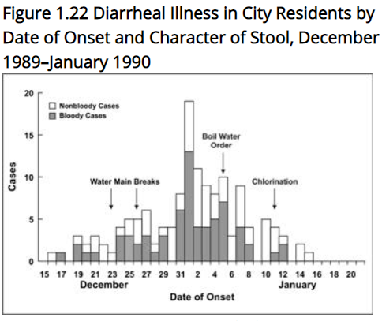
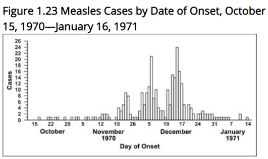
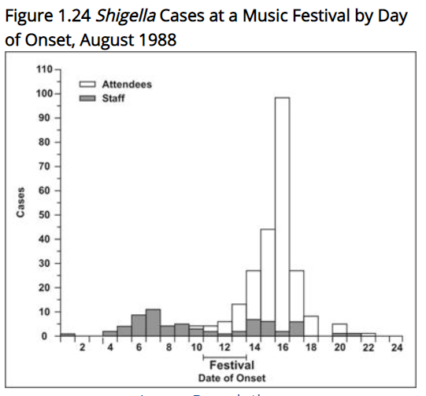
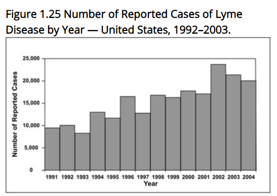
Other epidemics. The category 'other' covers epidemics that are often zoonotic or vector-borne, such as Lyme disease and West Nile encephalitis.
Reproduction numbers (slide 59): R0, the basic reproduction number, is the number of cases directly generated by one case in a susceptible population without interventions; R, the effective reproduction number, is the number generated by one case with interventions or immunity.
Immunity is inherited, acquired or induced resistance to infection by a specific pathogen; acquired resistance after a previous infection comes from protective cellular and antibody responses. Herd immunity is the cumulative number of immune persons in a population, or the percentage of the population that is immune. It is often discussed in relation to vaccination against a particular pathogen, and is also affected by natural immunity gained by recovering from the infection.
Herd immunity beyond vaccination. Herd immunity is often discussed with vaccination, and it is also impacted by natural immunity gained by recovery from the infection.
Herd immunity, in a phrase. Herd immunity is the share of a population that is immune: the cumulative number of immune persons, or the percentage of the population that is immune.
12.10 · Objective 10 — Applications of epidemiology
Five applications (slide 61): outbreak investigation, policy development, social and behavioral issues, environmental issues, and occupational health and safety.
Outbreak investigation of a communicable disease, in order (slide 62):
- Establish the existence of an outbreak.
- Prepare for field work.
- Verify the diagnosis.
- Define and identify cases.
- Use descriptive epidemiology to describe and orient the data.
- Develop a focused hypothesis.
- Evaluate the hypothesis for validity.
- Refine the hypothesis as needed.
- Implement control and prevention methods.
- Communicate findings: determine who needs to know, how the information will be communicated, and why it needs to be communicated.
The worked outbreak: Legionnaires’ disease (slides 63–68). In late July 1976 an epidemic of fatal respiratory disease struck people attending an American Legion convention in Philadelphia, and some non-attendees, some within days of the convention. Doctors with the first cases tried to contact the state health department, but it was closed for the weekend, and deaths had already mounted by Monday; the CDC and the state health department then took on the investigation. Five months after the first cases, a case-control study showed that spending time in the lobby of Hotel A was a risk factor for illness, and in December 1976 a CDC laboratorian located the source bacteria by continuing to test specimens that had been thought to be dead. Then: implement control and prevention measures, and communicate the findings.
Finding the Legionnaires' bacterium. In December 1976, a laboratorian at the Centers for Disease Control and Prevention located the source bacteria by continuing to test specimens that were thought to be dead.
A public health approach (slide 71) runs from the problem to the response:
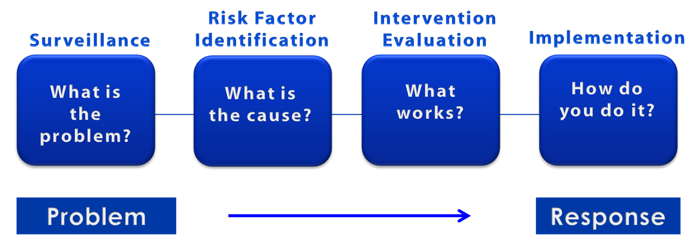
Policy development (slides 72–73). Rigorously conducted, reported and communicated epidemiological studies can produce major health policy changes. Policy is built on values, ideology, politics and evidence; evidence is the main contribution of epidemiology, and it is not usually the main influence on policy, but it is worth fighting for. The policy cycle, in order:
- Assessment of population health: identify the issue affecting population health.
- Assessment of potential interventions: identify interventions and provide evidence of their efficacy.
- Policy choices: made with tools such as computer modeling, then delivered for a consensus decision.
- Policy implementation: set target goals and allocate the resources.
- Policy evaluation: collect data on the results of the intervention, and plan future modeling.
When studies change policy. Epidemiological studies can bring about major health policy changes when they are rigorously conducted, reported and communicated.
First step of the policy cycle. The policy cycle begins with assessment of population health: identifying the issue that is affecting the population's health.
Youth smoking (slide 74), the worked policy example. By the 1960s smoking had been linked to multiple health problems, and adult smoking fell by the 1980s, but youth smoking did not. The 1994 Surgeon General’s report recommended moving from campaigns aimed at individual young people to treating it as a community and population issue. The American Stop Smoking Intervention Study for Cancer Prevention used the epidemiological evidence that secondhand smoke is dangerous to reframe smoking as a societal rather than personal concern. The measures: eliminating tobacco smoke in public places, less advertising and promotion, less youth access to tobacco, and higher tobacco taxes.
Youth smoking, 1994. The report recommended moving from campaigns focused on individual young people to addressing youth smoking as a community and population issue.
Social and behavioral factors (slide 75) matter because they help explain how diseases spread and why health outcomes vary across populations. This work looks at how income inequality, poverty, race and discrimination affect health, including access to health care; at how behavioral risk factors contribute to disease; and it contributes to policy in these areas.
Environmental epidemiology (slide 76) studies how environmental factors affect human health: exposure to air and water pollution, or to hazardous waste disposal sites.
Occupational health epidemiology studies how workers’ health is affected by workplace conditions and exposure to hazardous substances: it monitors how often workers are injured or ill, identifies which groups of workers are most affected, determines the reasons, and uses the findings to reduce the risk through regulatory practice.
12.11 · Where the slides need a second look
Nothing in this deck contradicts current practice on a point the quizzes ask. A few details are worth knowing so they do not confuse you; none is the basis of a quiz question.
- Snow’s Table 1.1 (slide 42) prints the population served by both companies as “1300,149”, a typo for 300,149. The house-by-house Table 1.2 is the one that carries the argument.
- The Legionnaires’ attack-rate table (slide 66) labels its three column groups Hotel A, Hotel B and Hotel C, but the third group is the total of the first two (62 + 63 = 125 ill). The figures, like the case and death counts, are context rather than exam material.
- Slide 21 writes “Center for Disease Control”; the agency is the Centers for Disease Control and Prevention.
- Infant and maternal mortality figures (slides 29–30) are given as context for the two rates; the numbers and the ranking are not asked.
Source: Epidemiology (Lecture 12 Dr. Webster - Epidemiology.pptx), Slides 1–76, and the PAJ 5200 syllabus instructional objectives.
13 · Miscellaneous Bacterial Agents of Disease
Instructional Objectives
- Compare and contrast the morphology, medium, laboratory tests, biochemical reactions, diseases, clinical manifestations, methods of treatment, and prevention of miscellaneous bacterial agents of human diseases.
- Describe the modes of transmission by which humans acquire miscellaneous bacterial agents of human diseases.
13.1 · Objective 1 — The spirochetes
- Gram-negative and spiral shaped.
- Motile by endoflagella, which are found inside the cell (in the periplasmic space, under the outer membrane).
- Free-living saprobes or commensals of animals. Three genera: Treponema, Leptospira, Borrelia.
- While most bacteria have circular chromosomes, these narrow cells may have linear double-stranded deoxyribonucleic acid and plasmids, especially Borrelia.
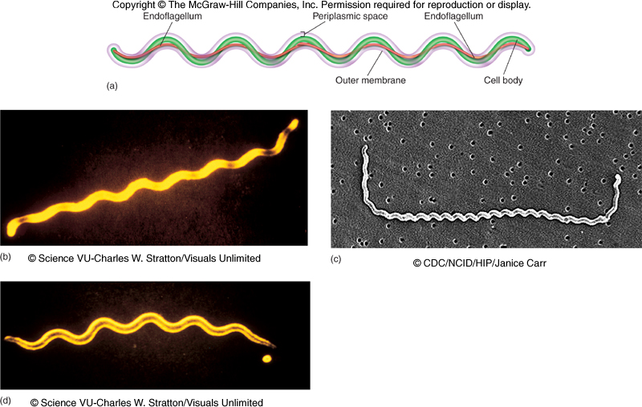
13.2 · Objective 1 — Treponema pallidum and syphilis
| Heading | Treponema pallidum, the spirochete of syphilis |
|---|---|
| Morphology | Thin, regular, coiled cells (genus Treponema) |
| Habitat and host | The genus lives in the oral cavity, intestinal tract and perianal and perineal regions of humans and animals. For T. pallidum, humans are the natural hosts |
| Growth and culture | Strict parasites with complex growth requirements; extremely fastidious and sensitive to environmental conditions, so they cannot survive long outside the human host; difficult to culture: they require live host cells for cultivation in the laboratory |
| Transmission | Sexual and transplacental |
| Pathogenesis | Binds to epithelial tissue (mucous membrane or abraded skin), multiplies, then penetrates capillaries, moves into the circulation and multiplies further |
| Communicability | Spirochetes appear in lesions and in blood during the first two stages; syphilis is communicable in the primary and secondary stages |
| Diagnosis | The stages can mimic other diseases, so clinicians weigh symptoms, history, microscopy and serology. False-positive rapid plasma reagin results can occur with human immunodeficiency virus infection, Lyme disease, some pneumonias, malaria and lupus |
| Treatment | Penicillin G or doxycycline; erythromycin and tetracycline are less effective but can be used if penicillin is contraindicated, for example by allergy |
The clinical stages of untreated syphilis (slides 9–10):
- Primary: a hard chancre at the site of inoculation; it often heals spontaneously, so the illness may go undiagnosed.
- Secondary: an upper-respiratory-like illness with fever, headache and sore throat, and a red or brown rash on the skin, palms and soles; the rash often disappears spontaneously.
- Tertiary: reached by about 30% of infections; can last 20 years or longer; numerous complications in susceptible tissues and organs: neurological and cardiovascular symptoms, and gummas. The Argyll Robertson pupil (an irregular pupil with eventual loss of the light reflex) is a tertiary sign.
- Congenital: transplacental infection of the fetus causes post-natal nasal discharge (“snuffles”), skin eruptions, bone deformation (“Hutchinson’s teeth”) and nervous system abnormalities.
- Congenital syphilis. It is a trans-placental infection of the fetus, causing nasal discharge, skin eruptions, bone deformation and nervous system abnormalities after birth.
The stage table (slide 11, a picture):
| Stage | Average duration | Clinical setting | Diagnosis |
|---|---|---|---|
| Incubation | 3 weeks | No lesion; treponemes adhere to and penetrate the epithelium, multiply and disseminate | Asymptomatic phase |
| Primary | 2–6 weeks | The chancre appears at the inoculation site; intense treponemal activity in the body; the chancre later disappears | Dark-field microscopy; serological tests |
| Primary latency | 2–8 weeks | Healed chancre with little scarring; treponemes in the blood; few if any symptoms | Serological tests positive |
| Secondary | 2–6 weeks after the chancre leaves | Skin and mucous membrane lesions; hair loss; patient highly infectious; fever, lymphadenopathy; symptoms can persist for months | Dark-field testing of lesions; serological tests positive |
| Latency | 6 months to 8 or more years | Treponemes quiescent unless relapse occurs; lesions can reappear | Seropositive blood test |
| Tertiary | Variable, up to 20 years | Neural and cardiovascular symptoms; gummas develop in organs; seropositivity | Treponeme may be shown by deoxyribonucleic acid analysis of tissue |
The table’s treatment column is penicillin G (benzathine, or aqueous benzyl or procaine) at every stage, in double doses from the secondary stage on.
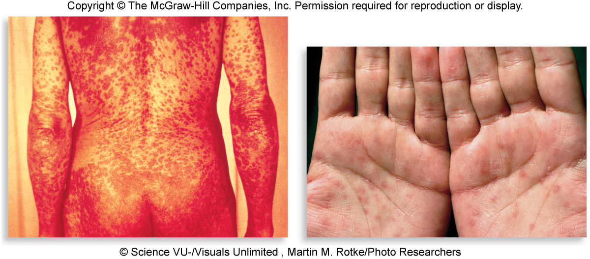
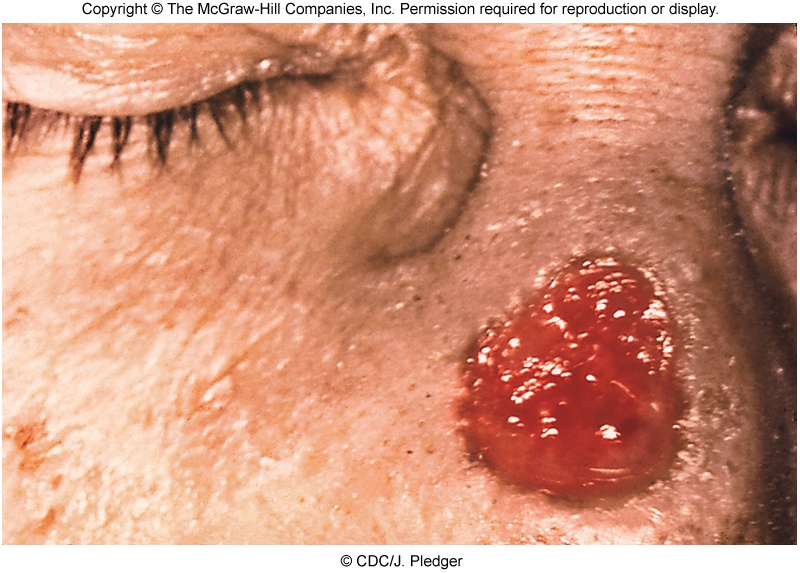
Serological tests (slide 17): the rapid plasma reagin test detects syphilis antibodies; the VDRL (Venereal Disease Research Laboratory) test is the older version of it; the FTA-ABS is the fluorescent treponemal antibody-absorption test. A blood test may still be required for a marriage license in one state; others impose waiting periods.
The “Tuskegee Study” of Untreated Syphilis (1932–1972) is the deck’s history note (the book Bad Blood and the film Miss Evers’ Boys tell it).
13.3 · Objective 1 — Nonsyphilitic treponematoses
The non-venereal treponematoses resemble syphilis but are rarely transmitted sexually or congenitally: cutaneous and bone diseases endemic to specific regions, usually arid climates and/or countries of the Global South.
| Disease | Agent | What it does | Where |
|---|---|---|---|
| Bejel (sahel) | T. pallidum subspecies endemicum | A deforming childhood infection of the mouth, nasal cavity, body and hands | West Africa and the eastern Mediterranean |
| Yaws | T. pallidum subspecies pertenue | Invades a skin cut, causing a primary ulcer that seeds a second crop of lesions | South America, Africa, Asia and Oceania |
| Pinta | T. carateum | A superficial skin lesion that depigments and scars the skin |
13.4 · Objective 1 — Leptospira and leptospirosis
- Morphology: tight, regular individual coils with a bend or hook at one or both ends.
- L. biflexa is a harmless, free-living saprobe; L. interrogans causes leptospirosis, a zoonosis transmitted mainly via mammal urine.
- The bacteria are shed in urine and infection occurs mainly by contact with contaminated urine, so moisture is required. Those likely to be infected include surfers, water-skiers, veterinarians, farmers and slaughterhouse workers.
- Targets: kidneys, liver, brain and eyes. Signs: sudden high fever, chills, headache, muscle aches, conjunctivitis and vomiting; long-term infection may affect the kidneys and liver.
13.5 · Objective 1 — Borrelia and relapsing fever
Borrelia are the arthropod-borne spirochetes: large, with 3–10 irregularly spaced coils, transmitted by arthropod vectors such as ticks. B. hermsii causes relapsing fever; B. burgdorferi causes Lyme disease (13.6).
| Heading | Borrelia hermsii: relapsing fever |
|---|---|
| Reservoirs | Mammals: squirrels, chipmunks, wild rodents |
| Vector | Tick-borne |
| Disease | After a 2–15-day incubation: high fever, shaking chills, headache and fatigue; nausea, vomiting, muscle aches, abdominal pain; extensive damage to liver, spleen, heart, kidneys and cranial nerves |
| Why it relapses | The organism changes in the patient’s body while the immune system tries to control it, giving recurrent febrile and afebrile cycles |
| Treatment | Tetracycline, the most common option |
13.6 · Objective 1 — Borrelia burgdorferi and Lyme disease
| Heading | Borrelia burgdorferi: Lyme disease |
|---|---|
| Reservoir and vector | Carried by the white-footed mouse, transmitted by Ixodes ticks, in a complex two-year cycle involving mice and deer |
| Course | A nonfatal, slowly progressive syndrome that mimics neuromuscular and rheumatoid conditions (it can be mistaken for an autoimmune disorder) |
| Early signs | A bull’s-eye rash at the tick-bite site (erythema migrans) in 50–70%; flu-like fever, headache, stiff neck and dizziness |
| Untreated | Can progress to cardiac and neurological symptoms and polyarthritis |
| Treatment | Tetracycline or amoxicillin |
| Prevention | Insect repellent containing DEET (diethyltoluamide) is the best prevention; also, check for ticks. A vaccine for dogs is available; the human vaccine (LYMErix, approved 1998) was withdrawn from the United States market in 2002 |
Lyme disease vector. Borrelia burgdorferi is carried by the white-footed mouse and transmitted by Ixodes ticks.
Larval ticks. Newly hatched larvae become infected when they feed on small animals such as mice, which harbor the spirochete, and continue development through the first year.
The deck’s map (slide 29) shows predicted Lyme transmission concentrated in the Northeast and the upper Midwest of the United States.
13.7 · Objective 1 — The curviform bacteria and Vibrio cholerae
| Genus | Shape | Flagella |
|---|---|---|
| Vibrio | Comma-shaped rods | A single polar flagellum |
| Campylobacter | Short spirals or curved rods | One flagellum |
| Helicobacter | Tight spirals | Several polar flagella |
| Heading | Vibrio cholerae |
|---|---|
| Morphology and antigens | Comma-shaped, with unique O and H antigens; the El Tor biotype survives longer and is more infectious than other strains |
| Transmission and dose | Ingested in contaminated water. The infectious dose is large, because the vibrios must first pass through the stomach to reach the intestine |
| Pathogenesis | Infects the mucous barrier of the small intestine and is noninvasive. Cholera toxin causes loss of electrolytes and water by secretory diarrhea, the “rice water stool”; the resulting dehydration leads to muscle, circulatory and neurological symptoms |
| Treatment and prevention | Oral rehydration and tetracycline; a vaccine is available |
El Tor biotype. The El Tor biotype of Vibrio cholerae survives longer and is more infectious than other strains.
13.8 · Objective 1 — Vibrios carried by seafood
Salt-tolerant inhabitants of coastal waters that associate with marine invertebrates.
- Vibrio parahaemolyticus: gastroenteritis from raw seafood, with symptoms similar to cholera.
- Seafood vibrios. They are salt-tolerant inhabitants of coastal waters that associate with marine invertebrates.
- Vibrio vulnificus: gastroenteritis from raw oysters, with serious complications in people with diabetes or liver disease; one of the “flesh-eating” bacteria, and a problem with sewage overflow after hurricanes and other natural disasters.
- Treatment: fluid and electrolyte replacement is the best option; antimicrobial drugs are used occasionally.
- Which seafood: peak predators (squid, mackerel, tuna), smaller fish (sardines, herring) and filter or bottom feeders (crab, shrimp, oysters, clams) may all contribute to bioaccumulation of the pathogens.
13.9 · Objective 1 — Campylobacter
Gram-negative, slender, curved or spiral rods, often S-shaped or in “gull-winged” pairs, with a single polar flagellum; common residents of the intestinal tract, genitourinary tract and oral cavity of birds and mammals. The two that matter are C. jejuni and C. fetus.
| Campylobacter jejuni enteritis | Campylobacter fetus | |
|---|---|---|
| Who | An important cause of bacterial gastroenteritis | An opportunist in debilitated persons or women late in pregnancy |
| Transmission | Beverages and food: water, milk, meat and chicken are common | To humans, uncertain; in veterinary medicine a sexually transmitted disease of domestic herd animals (cattle, sheep, goats) |
| Disease | Reaches the mucosa of the last segment of the small intestine near the colon, adheres to and burrows through the mucus, and multiplies; a heat-labile enterotoxin stimulates a secretory diarrhea like that of cholera; headache, fever, abdominal pain, bloody or watery diarrhea | Meningitis, pneumonia, arthritis; septicemia in the newborn |
| Treatment | Rehydration and electrolyte balance (rarely antibiotics) |
13.10 · Objective 1 — Helicobacter pylori
- Gram-negative, motile, curved cells with several polar flagella, discovered in stomach biopsies from ulcer patients by the Australian doctors Warren and Marshall (Nobel Prize in Medicine, 2005).
- Warren and Marshall. These Australian doctors discovered Helicobacter pylori in stomach biopsies from ulcer patients and received the Nobel Prize in Medicine in 2005.
- Causes most stomach and duodenal ulcers and is an apparent cofactor in gastric cancer.
- Produces urease, which converts urea into ammonium and bicarbonate, so the bacterium survives the stomach by raising its local pH.
- The deck’s world map shows reported infection prevalence varying widely between countries.
13.11 · Objective 1 — Rickettsias and Ehrlichia
The bacteria of unique morphology and biology (slide 42): the rickettsias and the chlamydias are Gram-negative coccobacilli; the mycoplasmas are unique among all bacteria in lacking a cell wall, and therefore peptidoglycan.
| Heading | Rickettsia (family Rickettsiaceae) |
|---|---|
| Morphology | Among the smallest of the bacteria; Gram-negative cell wall; nonmotile pleomorphic rods or coccobacilli |
| Growth | Obligate intracellular parasites, so they require live cells for cultivation; the family has about 23 species, mainly in the genus Rickettsia, causing the “rickettsioses” |
| Life cycle | Spend part of it in arthropod vectors: ticks, fleas and lice |
| Pathogenesis | Enter endothelial cells and cause necrosis of the vascular lining: vasculitis, vascular leakage and thrombosis |
Cultivating rickettsias. Rickettsias are very small intracellular parasites that require live cells for cultivation.
| Disease | Agent | Vector and reservoir | Features |
|---|---|---|---|
| Epidemic typhus | R. prowazekii | Lice (the body louse); reservoir humans; louse feces rubbed into the bite, or inhaled | High fever, chills, headache, rash; Brill-Zinsser disease is its chronic, recurrent form |
| Endemic (murine) typhus | R. typhi | Fleas; harbored by mice and rats | Sporadic, in areas of heavy flea infestation; milder |
| Rocky Mountain spotted fever | R. rickettsii | A zoonosis carried by dog and wood ticks; small mammals | Most cases in the Southeast and the eastern seaboard of the United States; a distinct spotted rash; may damage the heart and central nervous system |
| Rickettsialpox | R. akari | Mite; mice | Worldwide |
| Scrub typhus | Orientia tsutsugamushi | Immature mite; rodents | Asia, Australia, Pacific Islands |
| Human monocytic ehrlichiosis | Ehrlichia chaffeensis | Tick bite | The genus Ehrlichia holds tick-borne rickettsias that cause human monocytic and granulocytic ehrlichiosis (13.17) |
Endemic typhus spread. Rickettsia typhi is harbored by mice and rats and spread by fleas; flea feces are rubbed into the skin (or inhaled), so it occurs where fleas are heavy.
The Weil-Felix test rests on a cross-reaction between Proteus bacteria and R. prowazekii. During World War II two Polish doctors used it to make the occupying Germans, who feared typhus outbreaks, avoid towns in southeastern Poland.
13.12 · Objective 1 — Coxiella and Bartonella
| Coxiella burnetii | Bartonella species | |
|---|---|---|
| Organism | An intracellular parasite that produces an unusually resistant endospore (13.17) | Small, Gram-negative, fastidious; cultured on blood agar |
| Disease | Q fever (Q for “query”, unknown; historic cases most likely arose from contaminated milking barns): usually inhaled, causing pneumonitis, fever and inflammation of the liver | Trench fever, spread by lice; cat-scratch disease, a lymphatic infection after a clawing injury by a cat; bacillary angiomatosis in patients with acquired immunodeficiency syndrome |
| Reservoir and transmission | Harbored by a wide range of vertebrates and arthropods; infectious material includes urine, feces, milk and airborne particles | Lice (trench fever); cats (cat-scratch disease) |
| Treatment | Tetracycline | Tetracycline, erythromycin, rifampin |
| Prevention | A vaccine is available for those at highest risk: veterinarians, farmers, laboratory technicians |
Tetracycline. Tetracycline is a very broad-spectrum antibiotic that targets prokaryotic ribosomes, at the 30S subunit; it is named for relapsing fever, Lyme disease, cholera, Q fever, Bartonella and Mycoplasma.
13.13 · Objective 1 — Chlamydia and Chlamydophila
The Chlamydiaceae are obligate intracellular parasites, small cells with a Gram-negative cell wall, that alternate between two stages:
| Elementary body | Reticulate body |
|---|---|
| Small, metabolically inactive, extracellular and infectious; the form released by the infected host cell | Noninfectious and actively dividing; grows inside host-cell vacuoles, but cannot make its own adenosine triphosphate |
| Organism | Disease |
|---|---|
| Chlamydia trachomatis (human reservoir; two strains, trachoma and lymphogranuloma venereum) | The trachoma strain attacks the mucous membranes of the eyes, genitourinary tract and lungs. Ocular trachoma: severe, deforms the eyelid and cornea, may cause blindness; it affects people in tropical climates with poor sanitation, flying insects and poor hygiene. Inclusion conjunctivitis: acquired as the baby passes through the birth canal; prevented by prophylaxis. Sexually transmitted infection: the first or second most prevalent in the United States in recent years; urethritis, cervicitis, salpingitis (pelvic inflammatory disease), infertility, scarring. Lymphogranuloma venereum: a disfiguring disease of the external genitalia and pelvic lymphatics. Diagnosis can show an inclusion body next to the nucleus of an infected cell (slide 60) |
| Chlamydophila, a new genus of former Chlamydia members | C. pneumoniae: an atypical pneumonia, serious in asthma patients. C. psittaci: ornithosis, a zoonosis transmitted to humans from birds (“ornith” = bird), highly communicable among birds; pneumonia or a flu-like infection with fever and lung congestion |
13.14 · Objective 1 — Mycoplasmas
- The mollicutes and other cell-wall-deficient bacteria: they naturally lack cell walls and are highly pleomorphic (cell shapes vary widely).
- They require special lipids from host membranes.
- Treated with tetracycline or erythromycin. Not penicillin: no peptidoglycan is present for it to act on.
- Mycoplasma pneumoniae: primary atypical pneumonia; the pathogen spreads slowly over the interior respiratory surfaces, causing fever, chest pain and sore throat.
- M. genitalium and Ureaplasma urealyticum: weak sexually transmitted pathogens.
13.15 · Objective 1 — Bacteria in dental disease
- The oral cavity is a complex, dynamic ecosystem of over 400 microbial species.
- Dental caries (cavities) is a slow, progressive infection of irregular areas of the enamel surface, and the most commonly diagnosed of all human diseases.
- It begins with colonization by slime-forming Streptococcus species, with cross-adherence of Actinomyces in the biofilm; Streptococcus mutans is commonly found. This forms plaque, a thick, adherent layer harboring masses of bacteria whose acid dissolves enamel; mature biofilms are polymicrobial.
- Plaque and enamel. Plaque harbors masses of bacteria that produce acid, which dissolves the enamel, leading to dental caries.
- Plaque left on and between teeth brings secondary invaders such as Lactobacillus, Bacteroides and Fusobacterium.
- Periodontal disease, a soft-tissue disease: plaque calcified into calculus above and below the gingiva irritates it, causing gingivitis; the pockets between tooth and gingiva are invaded by spirochetes and Gram-negative bacilli; the tooth socket may become involved (periodontitis) and the tooth may be lost.
Two branches after plaque. One branch is acidification and cavitation leading to caries; the other is calculus (tartar) formation, leading to gingivitis, periodontal disease and bone resorption.
13.16 · Objective 2 — Modes of transmission
| Organism | How humans acquire it |
|---|---|
| Treponema pallidum (syphilis) | Sexual contact and transplacental (congenital syphilis); humans are the only natural host |
| Bejel, yaws, pinta | Rarely sexual or congenital; endemic in particular regions; yaws invades a skin cut |
| Leptospira interrogans | Contact with mammal urine, in moist settings (surfers, water-skiers, veterinarians, farmers, slaughterhouse workers) |
| Borrelia hermsii | Tick bite; rodent reservoirs (squirrels, chipmunks) |
| Borrelia burgdorferi | Ixodes tick bite; white-footed mouse reservoir, deer in the cycle, humans accidental hosts |
| Vibrio cholerae | Contaminated water, ingested |
| Vibrio parahaemolyticus, V. vulnificus | Raw seafood; raw oysters |
| Campylobacter jejuni | Food and beverages: water, milk, meat, chicken |
| Campylobacter fetus | Uncertain in humans; sexually transmitted among herd animals |
| Rickettsia prowazekii | Lice |
| Rickettsia typhi | Fleas (mice and rats) |
| Rickettsia rickettsii | Dog and wood ticks |
| Ehrlichia | Ticks |
| Coxiella burnetii | Usually inhaled (urine, feces, milk, airborne particles from animals) |
| Bartonella | Lice (trench fever); a cat’s scratch (cat-scratch disease) |
| Chlamydia trachomatis | Sexual contact; passage through the birth canal (inclusion conjunctivitis) |
| Chlamydophila psittaci | Birds |
| Mycoplasma genitalium, Ureaplasma urealyticum | Sexual contact |
Treponema pallidum transmission. Humans are the natural hosts of Treponema pallidum, which spreads by sexual and trans-placental transmission and cannot survive long outside the human host.
Campylobacter jejuni. It is transmitted by beverages and food; water, milk, meat and chicken are common sources.
Q fever. Coxiella's infectious material includes urine, feces, milk and airborne particles, and it is usually inhaled, causing pneumonitis, fever and inflammation of the liver.
13.17 · Where the slides and current practice differ
The quizzes key what the slides say. Where a slide differs from current usage, or contradicts another slide, it is noted here; points the deck contradicts itself on are not asked.
- Helicobacter as a “spirochete” (slide 31). Slide 39 calls it “curved cells”, and a spirochete swims with endoflagella (slide 3) while Helicobacter has several polar flagella outside the cell; it is a curved, spiral Gram-negative rod. Not asked.
- Spirochetes “human pathogens” and “not primary pathogens” (slide 3) sit side by side. Not asked.
- “Rickettsioses identified only in the last 20–30 years” (slide 43) conflicts with the deck’s own wartime typhus history (slide 45). Not asked.
- Human granulocytic ehrlichiosis (slides 46–47) is now called human granulocytic anaplasmosis, caused by Anaplasma phagocytophilum, also tick-borne. The syllabus lists Anaplasma; the deck never names it. Only monocytic ehrlichiosis is keyed.
- The human Lyme vaccine. Slide 26 says it was discontinued “due to adverse effects”; slide 27 says researchers found no connection between the vaccine and the complaints. That it was withdrawn, and that a dog vaccine exists, are asked; the reason is not.
- Coxiella’s “endospore” (slide 52). Current texts describe a resistant, spore-like small-cell form rather than a true endospore like those of Bacillus and Clostridium.
- Spellings: the test is the rapid plasma reagin (slide 16 writes “reagent”); Ureaplasma (slide 62, “Ureplasma”); bacillary angiomatosis (slide 53, “angiomatosus”); Coxiella burnetii (slides 51–52, “burnetti”).
- Percentages and counts (30% reaching tertiary syphilis, 50–70% with the Lyme rash, ulcer percentages, blood-type ratios, case counts, infectious-dose numbers) are context; no question keys one.
Source: Miscellaneous bacterial agents of infection (PAJ5200.Misc inf agents-2.pptx), Slides 1–70, and the PAJ 5200 syllabus instructional objectives and Appendix 2.